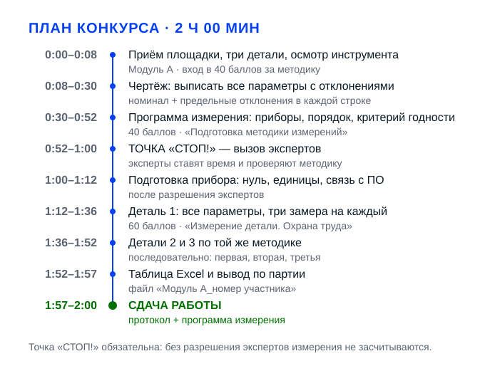
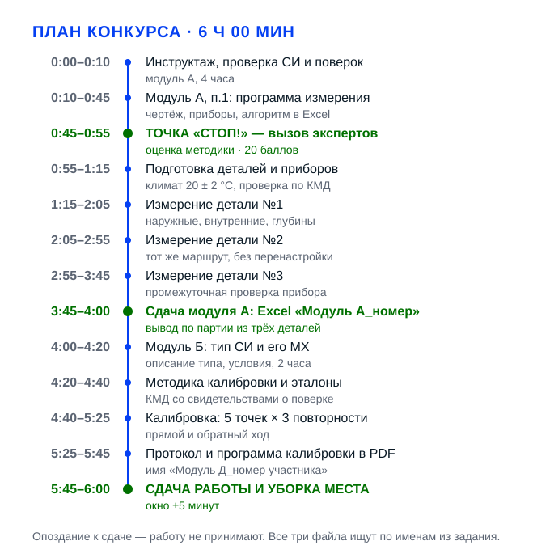
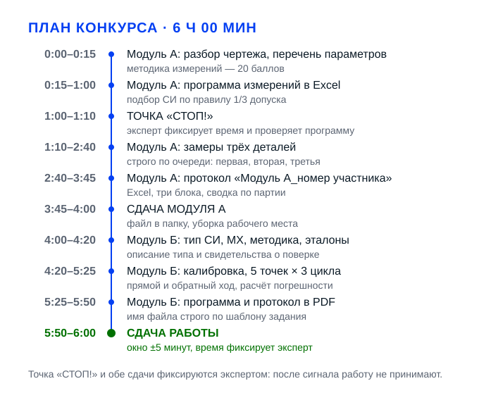

Цифровая метрология (Р)
Задания ниже — официальные файлы «Абилимпикс» (источник: abilympics-russia.ru), разложенные по категориям. Решения написаны по тексту задания, регламенту и критериям оценки; в них указано, что именно проверяет эксперт.
Школьник
14–16 лет, базовый уровень заданияВыдержка из официального конкурсного задания: страницы, относящиеся к категории «Школьник» (стр. 6–7 источника).
Пошаговое решение
Конкурсное задание категории «Школьники» по компетенции «Цифровая метрология» — это один модуль и 120 минут на всё: модуль А «Контроль качества партии промышленной продукции», результат которого — протокол с результатами контроля. Оценка складывается из двух частей: «Подготовка методики измерений» — 40 баллов и «Измерение детали. Охрана труда» — 60 баллов, всего 100. На столе участника лежат комплект ручного измерительного инструмента с технической документацией, чертёж изделия и три готовые детали, которые надо измерить последовательно: первая, вторая, третья. Работа идёт цифровыми приборами — штангенциркулем, глубиномером, штангенрейсмусом, — а результаты сразу попадают в специализированное программное обеспечение и в таблицу Excel с именем «Модуль A_номер участника». Ключевая особенность этого задания — точка «СТОП!» после первого пункта: участник обязан остановиться, пригласить экспертов, дать проверить разработанную программу измерения и только после разрешения продолжать, с отдельно зафиксированным временем начала. Поэтому первые сорок минут уходят не на замеры, а на чтение чертежа и построение методики: какой параметр каким прибором берётся, в каком порядке, сколько раз и по какому признаку деталь признаётся годной. Дальше остаётся исполнить написанное без спешки и оформить протокол так, чтобы в нём по каждой детали были и наименование параметра, и номинал, и предельные отклонения. Ниже — весь путь по шагам, с цифрами из задания и с теми ошибками, которые на этой компетенции стоят баллов чаще всего.

Задача 1. Принять площадку, три детали и чертёжМодуль А · подготовка к работе, вход в 40 баллов за методику
До первого замера нужно понять, с чем вы работаете: осмотреть место, пересчитать и промаркировать три детали, разобрать чертёж и выписать из него каждый размер вместе с предельными отклонениями. На площадке категории «Школьники» на всё это вместе с измерениями отведено 120 минут, и первые двадцать из них решают, будет ли остальное время потрачено на замеры или на выяснение того, что именно надо было мерить. Ошибка, допущенная здесь, дальше не исправляется: программа измерения, которую вы сдаёте на точке «СТОП!», строится только из того, что вы увидели в чертеже.
Действие 1.1. Осмотреть рабочее место и снять риски
Шаг 1.1.1
Подходим к своему рабочему месту и сначала просто обходим его по периметру, ничего не трогая. Стол по норме занимает площадку 3000 на 1900 миллиметров, проход между рабочими местами — не меньше 1,5 метра, а общая площадь площадки компетенции — 40 квадратных метров. Смотрим три вещи: свободен ли проход сбоку от стола, не лежат ли на полу кабели и сумки, и хватает ли света на шкалы и на чертёж. Если стол качается или столешница скользкая, это надо решать сейчас, а не во время замера.
Организация рабочего места и безопасность входят в критерий «Измерение детали. Охрана труда», который стоит 60 баллов из 100, то есть больше половины всей оценки. Качающийся стол даёт погрешность в сотые доли миллиметра на каждом замере, а кабель под ногами — это падение с инструментом в руках. Обе проблемы стоят дешевле пяти минут, если заняться ими на старте.
Проход сбоку свободен на всю ширину, пол сухой и без проводов, стол стоит устойчиво: нажмите на угол ладонью — столешница не должна играть. Свет падает на рабочую зону так, что тень от вашей руки не закрывает шкалу прибора. Если чего-то не хватает, зовите эксперта сразу.
Самая частая ошибка — сразу сесть и начать раскладывать инструмент, не глядя под ноги: потом выясняется, что проход завален коробками, а вы этого даже не заметили. Вторая — промолчать про качающийся стол и весь модуль ловить «плавающие» показания, списывая их на прибор.
Эксперт обходит площадку в первые минуты и отмечает в листе охраны труда, подготовлено ли место: проход, освещение, устойчивость стола, отсутствие лишних предметов.
Шаг 1.1.2
Убираем со стола всё, что не относится к заданию: сумку, куртку, телефон, наушники, напитки. Средства связи на площадке запрещены прямым пунктом конкурсного задания, поэтому телефон сдаём организаторам или оставляем в отведённом месте до старта — не в кармане и не под перевёрнутой деталью. Оставляем на столе только то, что перечислено в описи: комплект ручного измерительного инструмента, чертёж, три детали, компьютер с установленным программным обеспечением и бумага для черновых записей.
Запрет на средства связи — не формальность: за телефон на площадке работу могут остановить и аннулировать результат, и никакие набранные баллы это не компенсируют. Кроме того, лишние предметы на столе физически мешают: за деталь цепляется рукав, бумага закрывает шкалу, а посторонний предмет рядом с прибором легко уронить на губки.
На столе остались ровно те позиции, которые есть в описи, и ничего сверх. Телефон не в кармане и не в зоне работы. Пройдите взглядом по столешнице слева направо и назовите про себя каждый предмет — если хотя бы один вызывает вопрос «а это зачем», уберите его.
Оставить телефон «на беззвучном, он же не звонит». На площадке важен сам факт наличия, а не режим. Вторая ошибка — сложить инструмент в общую кучу посередине стола: потом придётся искать нужный прибор, а время модуля идёт.
Проверка на запрещённые предметы идёт до старта, иногда повторно в середине модуля. Эксперт смотрит и на порядок: разложенный инструмент читается как готовность к работе.
Шаг 1.1.3
Сверяем комплект инструмента с описью, которая лежит вместе с технической документацией. Перечисляем вслух: цифровой штангенциркуль, глубиномер, штангенрейсмус, что ещё выдано организаторами. У каждого прибора проверяем внешнее состояние: не погнуты ли губки, цел ли экран, двигается ли рамка плавно, без заеданий и люфта, закрывается ли батарейный отсек. Тут же смотрим, лежит ли в комплекте паспорт или инструкция на прибор — в них указаны диапазон и дискретность отсчёта.
Комплектность и исправность — первое, что оценивают в блоке охраны труда и подготовки, и одновременно ваша страховка: неисправный прибор не заменишь в середине модуля без потери времени. Диапазон и дискретность нужны не для галочки — именно по ним вы обосновываете выбор инструмента под конкретный размер, а это половина 40 баллов за методику.
Все позиции описи на месте, губки чистые и не погнуты, рамка ходит плавно по всей длине штанги, экран включается и показывает нули при сомкнутых губках. Диапазон и дискретность вы переписали на черновик: они понадобятся в программе измерения.
Взять прибор, не глядя на губки: погнутая губка даёт ошибку в две-три сотые на каждом замере, и вы этого не заметите, пока не начнёте сравнивать детали между собой. Вторая ошибка — обнаружить отсутствие глубиномера в середине работы и просить его у соседа: по правилам чужой инструмент брать нельзя.
Эксперт проверяет комплектность по инфраструктурному листу, когда обходит площадку, и отдельно фиксирует состояние инструмента до начала измерений: чистые губки, плавный ход рамки, работающий экран. Замеченный люфт или погнутая губка записываются как риск, который участник не устранил до старта.
Действие 1.2. Принять три детали и промаркировать их
Шаг 1.2.1
Получаем три детали и сразу маркируем их: первая, вторая, третья. Маркировка — кусочки малярного скотча с цифрой на боковой, нерабочей поверхности, или подписанная подставка с тремя гнёздами. Порядок важен потому, что конкурсное задание требует выполнять измерения последовательно по деталям: первая, вторая, третья, и итоговая таблица должна быть заполнена по каждой детали отдельно. Раскладываем детали на столе в том же порядке, слева направо, и больше их не переставляем.
Три детали — это партия, и смысл задания в том, чтобы увидеть, одинаковы ли они. Если перепутать, какая деталь первая, а какая третья, вся таблица превращается в набор цифр без адреса, и часть баллов за оформление теряется сразу. Кроме того, при маркировке видно, что участник понимает: контролируется не одна деталь, а партия промышленной продукции.
На каждой детали читается её номер, детали лежат в порядке 1–2–3 и не перекрывают друг друга. Скотч держится и не закрывает ни одной измерительной поверхности. Проверьте руками: поднимите каждую деталь и верните на место — номер должен остаться на виду.
Подписать детали «потом, когда начну мерить» — в итоге к третьей детали номера путаются, и в таблицу попадают значения, снятые не с той детали. Вторая ошибка — наклеить бирку на обрабатываемую поверхность: клей и толщина скотча добавляют сотые доли, а измеряете вы именно эту поверхность.
Эксперт сверяет порядок деталей на столе с порядком строк в таблице и смотрит, различимы ли номера. Это прямая проверка по ожидаемым результатам задания: измерения идут последовательно по деталям — первая, вторая, третья, — и таблица обязана это отражать.
Шаг 1.2.2
Осматриваем каждую деталь снаружи, не измеряя: ищем заусенцы, забоины, следы ударов, ржавчину, царапины на измерительных поверхностях. Заусенец проводим ногтем вдоль кромки — если ноготь цепляется, значит кромка острая, и её надо либо аккуратно снять надфилем, либо обойти при измерении. Забоину на посадочной поверхности не шлифуем: это дефект партии, его фиксируют в протоколе, а не устраняют. Пыль и стружку снимаем мягкой тканью, не стирая поверхность ладонью.
Острые кромки — это травма, а травма на площадке означает остановку работы и разбор с экспертом, поэтому осмотр идёт в блок охраны труда. С практической стороны заусенец на кромке не даёт губкам сесть плотно: прибор упирается в него и показывает размер на две-три сотые больше реального. Забоина, оставленная без внимания, потом выглядит как ваша ошибка измерения.
Кромки не цепляют ноготь, поверхность сухая и чистая, на белой салфетке после протирки нет тёмного следа и стружки. Все найденные дефекты вы записали на черновик — с номером детали и местом. Если дефект серьёзный, до старта скажите об этом эксперту.
Стирать пыль ладонью: на поверхности остаётся тончайший слой жира, и губки скользят. Вторая, более опасная ошибка — пытаться «убрать» забоину напильником, которого нет в описи: вы измените деталь, и все её размеры разойдутся с чертежом, а брак партии будет записан на вас.
Эксперт осматривает детали вместе с участком, обращая внимание на то, заметил ли участник дефекты и как с ними обошёлся. Оценка идёт и по охране труда, и по качеству контроля.
Шаг 1.2.3
Кладём детали на чистую подложку — салфетку, лист бумаги или мягкую ткань, — а не прямо на металл стола. Подставка должна быть не у самого края: отступите от кромки стола хотя бы на ладонь, чтобы деталь не смахнуть рукавом. Прибор кладём отдельно, в свою зону, и не кладём его на деталь или поверх чертежа. Всё, что нужно в работе, должно лежать в пределах вытянутой руки, а всё, что не нужно, — вне этой зоны.
Деталь на голом металле стола ловит царапины и стружку с предыдущих работ, а царапина на измерительной поверхности — это уже отклонение, которое вы же и зафиксируете в протоколе. Раздельные зоны для детали и прибора экономят время: не нужно каждый раз искать, где лежит штангенциркуль, и риск уронить его на деталь исчезает.
Между деталью и столом есть подложка, детали не свисают с края, прибор лежит в своей зоне и не соприкасается с деталями, чертёж не залит и не заложен инструментом. Всё нужное достаётся одной рукой, не вставая.
Разложить детали по всему столу и работать «где свободно»: одна деталь уезжает под локоть, вторая падает. Вторая ошибка — положить штангенциркуль на деталь: прибор тяжёлый, царапает поверхность и сам получает удар по губкам.
Порядок в рабочей зоне эксперт видит постоянно, а не только в конце: он обходит площадку дважды за модуль. Хаос на столе читается как неподготовленность и снимает баллы за организацию рабочего места в 60-балльном блоке охраны труда.
Действие 1.3. Разобрать чертёж и выписать параметры
Шаг 1.3.1
Кладём чертёж так, чтобы его было видно целиком, и читаем основную надпись: наименование детали, масштаб, материал, обозначение. Дальше идём по проекциям в том порядке, в котором они даны: главный вид, вид сверху или слева, разрезы и сечения. Сначала находим контур детали и понимаем её форму в объёме, и только потом начинаем смотреть на числа. Масштаб проверяем отдельно: на чертеже 1:1 размеры читаются как есть, а на уменьшенном изображении глаз легко обманывается.
Понимание формы — условие правильного выбора инструмента. Пока вы не видите, что перед вами ступенчатый вал с отверстием и пазом, вы не сможете отличить наружный диаметр от внутреннего, а глубину паза от глубины отверстия. Именно на этом различии построена методика на 40 баллов: каждый параметр должен получить свой инструмент и свой способ.
Вы можете, не подглядывая, назвать форму детали словами: из скольких ступеней состоит, есть ли сквозное отверстие, где паз. Масштаб и основная надпись прочитаны. Если форма не складывается — вернитесь к разрезу, а не начинайте мерить наугад.
Смотреть сразу на размерные линии, пропустив проекции: тогда за диаметром не видно, наружный он или внутренний, и прибор выбран неверно. Вторая ошибка — не заметить, что чертёж дан в масштабе уменьшения, и потом удивляться, почему деталь «не того размера».
Эксперт подходит и слушает, как участник объясняет, что за деталь перед ним. Понимание чертежа — базовая часть критерия «Подготовка методики измерений».
Шаг 1.3.2
Выписываем на черновик каждый размер отдельной строкой, и в каждой строке — четыре обязательных элемента: наименование параметра, его обозначение по чертежу, номинальное значение и предельные отклонения. Например, для наружного диаметра пишем не «20», а наименование, знак диаметра, номинал и оба отклонения, верхнее и нижнее. Если у размера отклонения заданы симметрично, так и записываем; если дан допуск по квалитету, пересчитываем его в числовые отклонения и записываем числами.
Ожидаемый результат задания сформулирован дословно: обозначение каждого измеренного параметра должно точно отражать характеристики чертежа и включать наименование параметра, его номинальное значение и предельные отклонения. То есть простая цифра в таблице не принимается — за неё снимают баллы. Список, собранный здесь, ляжет в программу измерения и потом в Excel почти без изменений.
В списке столько строк, сколько размеров на чертеже, и ни одна строка не состоит из одной цифры. Для каждого размера есть отклонения — либо с чертежа, либо пересчитанные и записанные числами. Сверьте количество строк с количеством размерных линий на чертеже: расхождение означает, что что-то пропущено.
Записать «диаметр 20» без отклонений — самая распространённая потеря баллов: измерение сделано, а параметр не идентифицирован. Вторая ошибка — переписать отклонения с чужого размера, спутав строки: в таблице появится допуск, которого на чертеже нет.
Эксперт на точке «СТОП!» сверяет ваш список с чертежом построчно. Пропущенный размер и недостающие отклонения — прямые минусы по 40-балльному критерию.
Шаг 1.3.3
Размечаем список по группам: наружные размеры, внутренние размеры, глубины и высоты от базы, межосевые расстояния. Для каждой группы сразу помечаем базу, от которой размер задан, и поверхности, которых касаются губки прибора. Отдельно отмечаем размеры, которые нельзя измерить прямо: например, межосевое расстояние между отверстиями, если между ними нет свободного доступа, или глубину внутренней канавки. Такие размеры считают через вспомогательные величины и записывают формулу.
Группировка — это и есть начало алгоритма измерения: внутри группы прибор один и тот же, значит, его не придётся перенастраивать и обнулять по десять раз. Размеры, которые нельзя взять напрямую, опаснее всего: если не заметить их заранее, на точке «СТОП!» окажется, что методика неполная, а исправлять её после проверки разрешено, но времени уже меньше.
Каждый размер из списка отнесён к группе и снабжён пометкой о базе. Размеры, требующие расчёта, выделены, и рядом записана формула с пояснением, какие величины в неё войдут. Проверка простая: возьмите любой размер и скажите вслух, каким прибором и от какой поверхности вы его возьмёте.
Свалить все размеры в один список без группировки — потом выясняется, что половину придётся мерить тем же прибором, но в другом порядке, и вы теряете время на перестановки. Вторая ошибка — не заметить «неудобный» размер и обнаружить его на последней детали.
Эксперт на точке «СТОП!» задаёт вопрос именно про неудобные размеры: «а этот как возьмёте?». Готовый ответ с формулой пересчёта — сильная сторона методики, отсутствие ответа — прямой минус по 40-балльному критерию подготовки методики.
Задача 2. Разработать программу измеренияМодуль А · «Подготовка методики измерений» — 40 баллов
Программа измерения — главный документ первой половины конкурса и единственный результат, который эксперты проверяют на точке «СТОП!». В ней должно быть видно три вещи: какой параметр каким прибором берётся, в каком порядке идут замеры и по какому признаку деталь признаётся годной. Формируется она с применением программного обеспечения, то есть не на клочке бумаги, а в файле на компьютере, и к моменту остановки должна быть готова к показу.
Действие 2.1. Подобрать инструмент под каждый параметр
Шаг 2.1.1
Берём список размеров и напротив каждого ставим тип измерения: наружный, внутренний, глубина, расстояние между осями. Дальше подбираем прибор по типу и по величине. Наружные и внутренние размеры до 150 миллиметров — цифровой штангенциркуль; глубины отверстий и пазов — глубиномер; высоты от плоскости стола, когда деталь стоит на плите, — штангенрейсмус. Если размер крупный или деталь неудобной формы, смотрим, хватает ли диапазона прибора, и только потом пишем его в программу.
Методика оценивается в 40 баллов, и первое, что в ней смотрят, — соответствие прибора параметру. Штангенциркуль, которым пытаются взять глубину отверстия, упирается в кромку и даёт неверный результат; глубиномер, поставленный на наружный диаметр, просто не садится на поверхность. Ошибка выбора обнуляет не только строку методики, но и все замеры по этому параметру.
Напротив каждого параметра в списке стоит конкретный прибор, и вы можете объяснить, почему именно он. Проверьте себя на двух-трёх строках: если для двух разных параметров у вас получился один и тот же прибор, это нормально; если для одного параметра указано два прибора без объяснения — переписывайте.
Подобрать инструмент «по привычке», один на всё: наружные размеры выйдут, а глубины и внутренние — нет. Вторая ошибка — взять прибор с недостаточным диапазоном: на крупном размере губки разойдутся до упора, и вы получите не измерение, а догадку.
Эксперт на точке «СТОП!» проверяет таблицу соответствия «параметр — прибор» и просит обосновать выбор на одном-двух примерах. Строку, где глубину отверстия берут штангенциркулем, он вычёркивает сразу, и замер по ней потом не зачитывается.
Шаг 2.1.2
Для каждого выбранного прибора выписываем две характеристики: диапазон измерения и дискретность отсчёта. Дискретность у цифровых приборов обычно составляет 0,01 миллиметра, но точное значение смотрите в паспорте или на экране прибора, а не по памяти. Дальше сверяем с допуском на размер: дискретность должна быть в несколько раз мельче допуска, иначе прибор физически не различит годную деталь от брака. Если допуск на размер шире дискретности в сто раз — прибор подходит; если сравним с ней — нужен другой.
Это самая «взрослая» часть методики, и именно она отличает осмысленный план от перечня инструментов. Прибор с дискретностью 0,01 миллиметра не может надёжно разделить размеры, отличающиеся на одну сотую, — он покажет то одно, то другое. За обоснование выбора с учётом допуска дают баллы, и на нём же строится доверие ко всей вашей таблице.
Для каждого прибора записаны диапазон и дискретность, и по каждому размеру видно, что измеряемая величина попадает внутрь диапазона и что дискретность мельче допуска. Если хотя бы одна строка не сходится — меняйте прибор сейчас, до точки «СТОП!».
Записать «штангенциркуль 0–150» и на этом остановиться: без дискретности обоснование неполное, а без сверки с допуском его просто нет. Вторая ошибка — взять прибор, у которого размер близок к верхней границе диапазона: на пределе растёт погрешность и ухудшается посадка губок.
Эксперт смотрит, названы ли метрологические характеристики и связаны ли они с допуском на размер: диапазон, дискретность, запас по точности. Это ядро 40-балльного критерия, и вопрос «почему этот прибор, а не другой» задаётся почти всегда.
Шаг 2.1.3
Записываем в программу не только то, что берём, но и то, чем данный параметр брать нельзя, с короткой причиной: например, глубину паза шириной три миллиметра не берут губками штангенциркуля для внутренних измерений, потому что губки толще паза. Инструмент, который в работе не участвует, убираем со стола в ящик или в кейс: он занимает место и путается под рукой. В программе остаётся только рабочий комплект.
Обоснование «почему не этот прибор» показывает, что выбор сделан осознанно, а не угадан, и эксперты на точке «СТОП!» такие формулировки ценят выше, чем просто список. Убранный лишний инструмент — это ещё и порядок на столе, который входит в блок охраны труда, и меньше шансов перепутать приборы в спешке.
В программе по каждому спорному параметру есть объяснение, почему выбран именно этот прибор. На столе остались только те приборы, которые перечислены в программе: пересчитайте их и сверьте со списком.
Оставить на столе весь выданный комплект «на всякий случай»: в тесноте приборы бьются друг о друга, а вы тянетесь через стол за нужным. Вторая ошибка — записать в программу прибор, которым не умеете пользоваться: на замере это видно сразу.
Эксперт оценивает рациональность набора: не тащить лишнего — признак понимания задачи. Отдельно он смотрит, остался ли на столе инструмент, которым участник не пользуется: он мешает работе и создаёт риск падения прибора на деталь.
Действие 2.2. Построить алгоритм измерений
Шаг 2.2.1
Выстраиваем последовательность замеров так, чтобы прибор менялся как можно реже: сначала все наружные размеры штангенциркулем, потом все внутренние тем же прибором с перевёрнутыми губками, затем глубины глубиномером, затем высоты штангенрейсмусом. Внутри каждой группы идём от базы: сначала размеры, привязанные к установочной поверхности, потом производные от них. Внутри детали — от крупных размеров к мелким, чтобы не перенастраивать прибор на каждом шаге.
Порядок экономит время: на 120 минут приходится три детали и весь набор параметров, и каждая лишняя перенастройка — это минус замер. Кроме того, последовательность «от базы» даёт сходимость результатов: если мерить вразнобой, ошибка от перекоса губок накапливается, и вы не поймёте, откуда взялось расхождение в две сотые.
Алгоритм записан пошагово, и по нему может работать другой человек, не задавая вопросов. Проверьте: переходов «взять другой прибор» в вашей последовательности не больше четырёх на всю деталь. Если больше — значит, порядок неоптимален.
Мерить в том порядке, в котором размеры записаны на чертеже: получится постоянная смена приборов, а на каждой смене теряется время и накапливается ошибка установки. Вторая ошибка — начать с мелких размеров, а потом обнаружить, что база ещё не проверена.
Эксперт на точке «СТОП!» читает алгоритм целиком и смотрит, есть ли в нём логика, а не перечень действий: порядок групп, привязка к базе, число перенастроек. Алгоритм из четырёх-пяти переходов он считает рабочим, из десяти — неоптимальным.
Шаг 2.2.2
Для каждого параметра задаём число измерений: минимум три в разных сечениях или положениях, а в таблицу заносим все три значения и среднее арифметическое. Сечения выбираем осмысленно: у вала — у торца и в середине, у отверстия — по входу и в глубине. Если разброс между тремя значениями больше цены деления прибора, делаем четвёртый замер и разбираемся, что мешает: перекос губок, заусенец, загрязнение поверхности.
Три замера — это способ поймать грубую ошибку, а не формальность. Деталь, изготовленная на станке, почти всегда имеет небольшую конусность или овальность, и один замер в одном сечении даёт случайное число. Кроме того, повторяемость прямо связана с требованием задания получать точные, достоверные и воспроизводимые результаты.
В таблице по каждому параметру стоят три значения и среднее, и разброс между ними не превышает двух-трёх дискретностей прибора. Если по какому-то размеру разброс больше — у вас есть запись, чем вы это объяснили.
Сделать один замер и записать его как результат: при первом же вопросе эксперта «а почему именно это число» ответить нечем. Вторая ошибка — подогнать три значения подряд, чтобы выглядело красиво: несовпадение с реальностью видно при перепроверке.
Эксперт может попросить повторить замер на его глазах в любом месте таблицы. Сходимость с записанным значением — лучшее подтверждение добросовестности; расхождение в десятые доли он проверяет вторым замером и вопросом о методике.
Шаг 2.2.3
Открываем на компьютере табличный редактор и создаём заготовку таблицы до начала замеров. Колонки слева направо: номер параметра, обозначение по чертежу, наименование параметра, номинальное значение, верхнее отклонение, нижнее отклонение, допуск, затем по три колонки на каждую деталь и колонка «годен/брак». Заголовки деталей подписываем «Деталь 1», «Деталь 2», «Деталь 3». Первую строку закрепляем, чтобы заголовки не уезжали при прокрутке.
Заготовка, сделанная заранее, экономит в конце модуля десять минут, которых обычно и не хватает. Она же защищает от главной ошибки оформления: когда таблицу рисуют уже после замеров, половина параметров теряет отклонения и наименования. Кроме того, задание прямо требует создать таблицу результатов в формате Excel, и проверяют её по структуре, а не по красоте.
В заготовке столько строк, сколько параметров в вашем списке, и все семь обязательных колонок на месте. Ширина колонок такая, что наименование параметра читается полностью, а не обрезается решётками. Проверьте закрепление первой строки: прокрутите лист вниз, заголовки должны остаться на экране.
Начать мерить, а таблицу сделать потом «по готовым цифрам»: в конце модуля время уходит на оформление, и работа сдаётся с недоделанным файлом. Вторая ошибка — сделать колонки без отклонений и допуска: тогда таблица не отвечает требованию к обозначению параметра.
Эксперт видит заготовку на экране в момент точки «СТОП!» и оценивает, продумана ли структура отчёта заранее: колонки, число строк, подписи деталей. Готовая заготовка читается как системная работа, пустой лист — как надежда на удачу в конце модуля.
Действие 2.3. Оформить программу как документ
Шаг 2.3.1
Собираем программу в один файл по разделам: что контролируем — перечень параметров с номиналами и отклонениями; чем контролируем — приборы с диапазоном и дискретностью; как контролируем — последовательность замеров с числом повторений; по какому признаку признаём годность — сравнение измеренного значения с полем допуска. В конце — строка с фамилией, номером участника и датой. Разделы нумеруем, чтобы на них можно было ссылаться при ответе эксперту.
Структура — это то, что делает программу программой, а не набором заметок. На точке «СТОП!» эксперты проверяют именно её: есть ли перечень параметров, обоснован ли инструмент, есть ли порядок и критерий годности. Если чего-то из четырёх разделов нет, баллы по 40-балльному критерию снимаются частями, а не целиком, — и обидно потерять их просто за отсутствие заголовка.
В файле читаются все четыре раздела, каждый начинается с заголовка, нумерация сквозная. Прочитайте программу сверху вниз, как чужую: понятно ли, что и в каком порядке делать, без ваших пояснений вслух.
Написать программу сплошным текстом без разделов: эксперт ищет критерий годности и не находит, а время проверки ограничено. Вторая ошибка — оставить в файле черновые заметки и зачёркнутые строки. Черновик в сданном файле выглядит так, будто работа не доведена до конца.
Эксперт проверяет программу по чек-листу из четырёх пунктов — параметры, инструмент, порядок, критерий годности, — и наличие разделов видно с первого взгляда. Отсутствующий раздел он отмечает отдельной строкой в оценочном листе.
Шаг 2.3.2
Сохраняем файл сразу, а не в конце: имя задаём по правилу задания — «Модуль A_номер участника», где вместо слова «номер» стоит ваш номер участника с площадки. Формат — тот, в котором вы работаете, табличный или текстовый; главное, чтобы файл открывался на машине эксперта. Сразу после первого сохранения делаем копию в папку с номером участника и продолжаем работать в основной версии, а копию обновляем после каждого крупного шага.
Правильное имя файла — отдельное требование ожидаемых результатов, и оно проверяется автоматически: файл с именем «Документ1» просто не найдут. Копия спасает от самого обидного сценария — зависания или закрытия программы в конце модуля, когда вся работа уже сделана, но не сохранена.
Файл лежит в понятной папке, имя совпадает с шаблоном «Модуль A_номер участника» посимвольно, копия открывается и содержит тот же текст. Проверьте сохранение, закрыв и снова открыв файл, — это тридцать секунд.
Работать в безымянном документе до самого конца: при сбое теряется всё. Вторая ошибка — назвать файл «модуль а», строчными буквами и по-русски: формально это уже другое имя, и эксперту придётся искать вашу работу вручную.
Эксперт проверяет имя файла по списку участников в момент сдачи, до открытия содержимого: «Модуль A_номер участника» посимвольно. Файл с другим именем он ищет вручную, и это время вычитается из проверки вашей работы.
Шаг 2.3.3
Перечитываем программу с чертежом в руках, строка за строкой: каждый параметр из чертежа есть в программе, у каждого есть прибор, у каждого прибора указаны характеристики, последовательность не пропускает ни одной группы размеров. Отдельно проверяем числа: номинал и отклонения переписаны без ошибок, знаки не потеряны, единицы везде миллиметры. Найденное расхождение исправляем сразу и помечаем себе, что изменилось.
Самопроверка перед точкой «СТОП!» — последняя возможность исправить методику без спешки. После проверки экспертами продолжать можно, но правки придётся делать на ходу, и времени на замеры останется меньше. Кроме того, сверка с чертежом ловит самую дорогую ошибку — пропущенный параметр, который потом просто не будет измерен.
Количество строк в программе совпадает с количеством размеров на чертеже, числа сверены повторно, единицы одинаковые. Вы можете назвать три параметра, которые проверили последними, — значит, сверка была реальной, а не формальной.
Проверить программу «по диагонали» и пропустить размер, который на чертеже стоит в выносном элементе. Вторая ошибка — не сверить отклонения: одна перепутанная цифра превратит годную деталь в брак во всей таблице.
На точке «СТОП!» эксперт сверяет программу с чертежом построчно, так же, как вы это делали сами, и найденные расхождения фиксирует в оценочном листе. Каждый пропущенный параметр — минус и в методике, и потом в измерениях.
Задача 3. Пройти точку «СТОП!» и получить разрешениеМодуль А · проверка методики, до 40 баллов
Точка «СТОП!» — не формальность и не пауза. После первого пункта задания участник обязан остановить работу и пригласить экспертов: они ставят время выполнения, проверяют результат и только после этого дают разрешение продолжать, отдельно фиксируя время начала. Всё, что вы сделали до этой минуты, оценивается здесь и сейчас, а всё, что сделаете после, зависит от того, насколько внятно вы объясните свою методику. На категорию «Школьники» это единственная контрольная точка внутри модуля, поэтому терять на ней время или нервы нельзя.
Действие 3.1. Подготовиться к остановке
Шаг 3.1.1
Останавливаемся сами, не дожидаясь оклика: откладываем инструмент, убираем детали на подложку, чтобы они не мешали проверке, и выводим на экран программу измерения в том виде, в котором она готова. Чертёж кладём рядом с клавиатурой, черновик со списком параметров — под рукой. На столе не должно оставаться ничего, что требует объяснений: ни разобранного прибора, ни бумажек с непонятными расчётами.
Эксперты оценивают результат, а не процесс поиска файла. Если программа свёрнута в четыре окна, а чертёж заложен инструментом, проверка начинается с потери времени и с впечатления неготовности. Кроме того, момент остановки фиксируется по времени, и пауза на «дайте секунду, я найду» идёт из вашего же модуля.
Программа открыта на экране и читается без прокрутки в ключевых разделах, чертёж и черновик лежат рядом, инструмент отложен, детали не перекрывают документы. Вы можете, не вставая, показать любой раздел программы.
Продолжать мерить «ещё одну деталь, пока не позвали»: по правилам работа после первого пункта без разрешения не принимается, и замеры придётся повторять. Вторая ошибка — оставить на экране черновик вместо готового файла.
Эксперт подходит по вызову и первым делом смотрит на экран: открыт ли готовый файл, виден ли чертёж рядом. Готовность к показу он отмечает отдельно, в том числе в блоке организации работы, и по ней судит о дисциплине участника.
Шаг 3.1.2
Поднимаем руку или подходим к ближайшему эксперту и говорим коротко и точно: «Точка СТОП, программа измерения готова, прошу проверить». Дальше называем своё имя и номер участника, чтобы запись в оценочном листе шла без путаницы. Если экспертов несколько, ждём того, кто отвечает за вашу зону, и не начинаем объяснять всем сразу. Время остановки и время начала после проверки фиксируют эксперты, ваша задача — не мешать и не торопить.
Точка «СТОП!» прописана в задании отдельным абзацем именно потому, что её проходят по вызову участника: если не позвать, работу после первого пункта могут не засчитать. Корректная формулировка вызова экономит минуты и создаёт рабочую атмосферу — эксперт видит, что участник понимает регламент.
Эксперт подошёл, ваше имя и номер названы, время остановки записано. Вы не начали объяснять до того, как эксперт достал оценочный лист, и не продолжаете работать, пока идёт проверка. Проверьте, что прибор отложен, а не зажат в руке: с прибором в руках проверку не начинают.
Молча ждать, пока кто-нибудь подойдёт: время идёт, а проверка не начинается. Вторая ошибка — позвать и тут же начать мерить «пока эксперт идёт»: это прямое нарушение порядка, описанного в задании. Хронометраж потом покажет, что проверка началась позже вызова, и объяснять это будет нечем.
Эксперт фиксирует время вызова и время начала проверки в оценочном листе; эти цифры сверяются с общим хронометражем модуля. Если участник работал после первого пункта без разрешения, отметка об этом ставится сразу, а не в конце.
Шаг 3.1.3
Пока эксперт идёт, мысленно прогоняем короткое объяснение на тридцать-сорок секунд: сколько параметров контролируем, какие группы размеров, каким прибором берём каждую группу, почему именно этим, в каком порядке идём и по какому признаку считаем деталь годной. Держим в голове два-три числа: общее количество параметров, количество повторных замеров на параметр и величину допуска на самый ответственный размер.
Устное объяснение — не отдельный критерий, но оно определяет, как эксперт читает вашу программу: с доверием или с подозрением. Три числа, названные без запинки, стоят дороже, чем страница текста, потому что показывают, что программа написана вами и понята вами.
Вы можете пересказать структуру программы, не подглядывая, и назвать количество параметров и повторений. Если сбиваетесь на втором предложении — перечитайте собственный файл, пока эксперт идёт. Хороший признак — вы называете не только числа, но и причину: почему глубиномер, а не штангенциркуль.
Готовить речь «по бумажке» и читать её с экрана: выглядит как чужой текст. Вторая ошибка — начать объяснять формулами, которых сами не до конца понимаете: первый же уточняющий вопрос разрушит ответ. Тогда первый же уточняющий вопрос остановит ответ на середине фразы.
Эксперт слушает и задаёт один-два вопроса по ходу объяснения. По ответам видно, кто писал программу — участник или подсказка, — и от этого зависит, насколько подробно он будет проверять остальные разделы.
Действие 3.2. Пройти проверку и получить разрешение
Шаг 3.2.1
Отвечаем на вопросы по существу, короткими фразами, и показываем место в программе, о котором идёт речь: «вот эта строка, здесь параметр и отклонения, здесь прибор». Если эксперт просит объяснить выбор инструмента — называем диапазон, дискретность и связь с допуском. Если вопрос про порядок — показываем раздел с последовательностью. Спорить и доказывать, что задание понято иначе, бессмысленно: оценочный лист заполняется по регламенту, а не по аргументам.
Проверка на точке «СТОП!» — это оценка, а не собеседование на равных. Спокойные ответы с показом конкретных строк дают эксперту то, что ему нужно: подтверждение, что методика осмысленна. Любая дискуссия отнимает минуты из 120 и ничего не добавляет к баллам.
На каждый заданный вопрос дан ответ с отсылкой к конкретному месту в файле. Вы не повышаете голос и не оправдываетесь, а показываете. Если чего-то нет — честно говорите «этого в программе нет, добавлю».
Начать доказывать, что эксперт неправ: даже при формальной правоте это стоит времени и отношения. Вторая ошибка — отвечать «так в интернете написано» вместо ссылки на чертёж и паспорт прибора. Спор о формулировке задания не меняет оценочный лист, а минуты из 120 уходят.
Эксперт задаёт вопросы по чек-листу критерия «Подготовка методики измерений» и отмечает полноту и связность ответов. Ответ «так написано в интернете» он фиксирует как отсутствие обоснования, даже если прибор выбран верно.
Шаг 3.2.2
Слушаем замечания и записываем их, не перебивая: коротко, на черновике, с пометкой, какого раздела программы они касаются. После того как эксперт закончил, уточняем только то, что действительно непонятно, и просим разрешение внести правки. Разрешение и время начала работы эксперт фиксирует сам; ваша задача — услышать время и записать его на черновике рядом с замечаниями.
Замечания на точке «СТОП!» — это подсказка, за которую не снимают баллы, если её отработать. Исправленная методика приносит баллы и во второй части, где оценивают уже измерения: если эксперт сказал, что параметр пропущен, и вы его добавили, замер по нему тоже будет зачтён.
Все замечания записаны, время начала работы записано, правки в файл внесены и видны. Вы можете перечислить, что именно изменили после проверки, — и это изменение не противоречит остальному тексту. Отдельно убедитесь, что время начала работы записано вашей рукой, а не осталось только в памяти.
Выслушать замечания и не записать: через двадцать минут они забудутся, а методика останется с тем же пробелом. Вторая ошибка — внести правку в один раздел и не поправить связанный с ним другой. Правка в одном разделе без связанного с ним другого делает программу противоречивой.
Эксперт после проверки даёт разрешение и ставит время начала работы. Если правки внесены при нём и не противоречат остальному тексту, он отмечает это как сильную сторону: участник услышал замечание и отработал его на месте.
Шаг 3.2.3
До разрешения ничего не измеряем: детали лежат на подложке, прибор отложен, губки не сомкнуты. После разрешения и записи времени начала возвращаемся к работе в том же порядке, который записан в программе, и первым делом берём тот параметр, с которого начинается алгоритм, а не тот, что ближе лежит. Если правки были существенные, проговариваем себе новый порядок замеров и только потом берём прибор в руки.
Нарушение последовательности «СТОП — проверка — разрешение» — самая грубая организационная ошибка модуля: замеры, сделанные до разрешения, могут быть не зачтены целиком. Кроме того, пауза нужна вам самим: она отделяет этап планирования от этапа исполнения и не даёт начать мерить в спешке.
Время начала работы записано, первый замер сделан уже после разрешения и соответствует первой строке алгоритма. Вы можете назвать, с какого параметра начали и почему именно с него. Если правки были существенные, первый замер должен относиться к изменённому разделу, иначе правка осталась на бумаге.
Начать мерить «пока эксперт отвлёкся»: экономия в две минуты, риск — незачтённые измерения. Вторая ошибка — после разрешения сразу схватить прибор и померить то, что удобно, сбив весь порядок. Порядок, сбитый на первом же замере, потом не восстанавливается: таблица заполняется не по программе.
Эксперт следит за моментом начала работы: он фиксирует время и проверяет, что измерения пошли по заявленной программе. Замер, сделанный до разрешения, отмечается как нарушение порядка, даже если результат верный.
Задача 4. Подготовить прибор и измерить три деталиМодуль А · «Измерение детали. Охрана труда» — 60 баллов
Основная часть модуля: подготовить средство измерения, проверить его и снять все параметры с трёх деталей в том порядке, который записан в программе. Здесь набирается 60 баллов из 100, и набираются они не одним красивым результатом, а повторяемостью: одинаковый подход к каждой детали, запись каждого значения сразу в таблицу и внимательность к тому, как прибор садится на поверхность. Из 120 минут на эту часть уходит примерно половина.
Действие 4.1. Подготовить средство измерения
Шаг 4.1.1
Включаем цифровой прибор кнопкой, ждём, пока индикатор покажет нули, и смотрим на служебные значки: разряд батареи, единицы измерения, режим. Если на экране горит значок низкого заряда, сразу меняем батарею или зовём эксперта — садиться за серию замеров с почти пустым элементом нельзя. Убеждаемся, что единицы — миллиметры, а не дюймы: переключение обычно одной кнопкой, и случайное нажатие на неё даёт значения, отличающиеся в 25,4 раза.
Проверка перед серией замеров — обязательный элемент методики и требований к подготовке средства измерения. Прибор с садящейся батареей начинает «плавать» на сотые доли, и вы этого не заметите, пока не сравните две детали между собой. Дюймы вместо миллиметров — ошибка, которая обнуляет всю таблицу, потому что все значения выйдут за поле допуска.
Экран показывает нули при сомкнутых губках, единицы — миллиметры, значок заряда не мигает. Прибор включается и выключается без задержки, показания не скачут, если подержать его неподвижно десять секунд.
Включить прибор и сразу начать мерить, не посмотрев на единицы: половина таблицы заполняется дюймовыми числами, и обнаруживается это только при сравнении с номиналом. Вторая ошибка — игнорировать мигающий значок батареи.
Эксперт смотрит на подготовку прибора в начале блока измерений: проверены ли индикация, единицы и заряд. Отдельно он может попросить показать экран в момент включения — так видно, обнулялся прибор перед серией или нет.
Шаг 4.1.2
Смыкаем губки полностью, без усилия, и смотрим на показание: оно должно быть нулевым. Если на экране не ноль, нажимаем кнопку обнуления, а перед этим протираем губки чистой салфеткой — пылинка толщиной в микрон уже даёт сотую долю на индикаторе. Затем разводим губки на четверть диапазона и снова смыкаем: показание должно вернуться к нулю. Эту проверку повторяем дважды за смену, а также после того, как прибор уронили или он полежал на солнце.
Нуль — точка отсчёта всей серии. Смещённый нуль даёт одинаковую ошибку на всех размерах, и она не видна, пока не сверишь деталь с чертежом: все три детали окажутся «браком» с одинаковым отклонением, а причина будет в приборе. Проверка нуля входит в подготовку средства измерения и в блок охраны труда как часть правильной эксплуатации.
При сомкнутых губках на экране ровно ноль, после разведения и смыкания — снова ноль. Губки чистые, на салфетке после протирки нет тёмного следа. Если ноль «уходит» на одну дискретность, обнулите и повторите проверку.
Мерить с непроверенным нулём: ошибка в две-три сотые делает годную деталь браком, и вы запишете это в протокол как результат контроля. Вторая ошибка — обнулять прибор, не протерев губки: грязь снимается кнопкой, а не тряпкой, и остаётся на поверхности.
Эксперт может попросить показать проверку нуля в любой момент модуля. Чистые губки, уверенное обнуление и повторная проверка после разведения — заметный плюс по 60-балльному критерию измерений.
Шаг 4.1.3
Кладём прибор так, чтобы штанга лежала на подставке или на салфетке, а не на голом металле, и чтобы кабель, если он есть, не тянул прибор к краю стола. Если прибор подключается к компьютеру, вставляем разъём до упора и проверяем, что программа видит устройство: в окне должен появиться порт или строка подключения. Проверяем, что кабель не пересекает зону, где вы двигаете руками, и не лежит поперёк прохода.
Передача данных в специализированное программное обеспечение — прямо названная часть задания для категории «Школьники»: измерение и передача полученных данных в ПО. Если связь не установлена до замеров, вы либо потеряете часть значений, либо будете вводить их вручную и терять время. Кабель в зоне рук — это ещё и риск уронить прибор вместе с проводом.
Программа видит прибор, значения на экране прибора и в окне программы совпадают при пробном замере. Кабель лежит сбоку, не натянут, разъём не шатается. Если связи нет — переподключите и проверьте ещё раз до начала серии.
Оставить подключение «на потом» и мерить без записи: половина значений остаётся на бумажке, а перенос в таблицу съедает время в конце. Вторая ошибка — натянуть кабель через рабочую зону и смахнуть прибор локтем.
Эксперт проверяет, работает ли связь прибора с программным обеспечением, и отмечает это в критерии подготовки средства измерения. Передача данных в ПО — прямо названная часть задания для школьников, поэтому отсутствие связи он фиксирует отдельно.
Действие 4.2. Измерить первую деталь
Шаг 4.2.1
Берём наружные размеры. Деталь держим в левой руке или ставим на подложку, губки штангенциркуля разводим чуть больше измеряемого размера, затем сводим до касания поверхности и слегка покачиваем прибор вдоль оси, чтобы губки сели по диаметру, а не по хорде. Усилие — только до касания: пережимать нельзя, тонкостенная деталь сминается, и размер «уменьшается». Каждый размер берём в трёх сечениях: у торца, в середине, у противоположного торца.
Наружные размеры — самая большая группа на чертеже, и на них приходится основная часть 60 баллов за измерение. Покачивание прибора нужно потому, что губки, поставленные под углом, показывают хорду вместо диаметра, а разница на диаметре двадцать миллиметров достигает десятых долей. Три сечения выявляют конусность и овальность, которые на чертеже ограничены допуском.
Показание устойчиво: при повторном смыкании в том же сечении получается то же число плюс-минус одна дискретность. Губки прилегают по всей длине, без зазора на просвет. Разница между сечениями записана, а не усреднена молча.
Сводить губки с усилием «чтобы наверняка»: прибор пружинит, а на мягком материале размер занижается на сотые. Вторая ошибка — мерить в одном сечении и считать, что деталь идеальна: конусность в две сотые уже может вывести размер за допуск.
Эксперт смотрит на посадку губок и на то, повторяет ли участник замер в разных сечениях. Замер в одном сечении он считает неполным, а сведённые с усилием губки — ошибкой метода, а не случайностью.
Шаг 4.2.2
Переходим к внутренним размерам и глубинам. Внутренний диаметр берём губками для внутренних измерений: вводим их в отверстие и разводим до касания стенок, слегка покачивая в двух плоскостях, чтобы найти наибольший размер. Глубину отверстия или паза берём глубиномером: опорную площадку ставим на базовый торец плотно, без перекоса, а штангу опускаем до дна, пока не почувствуете касание. Высоту от плоскости, если она есть на чертеже, берём штангенрейсмусом от плиты.
Внутренние размеры и глубины — самые «коварные» на конкурсе: именно здесь прибор ставят неправильно и получают ошибку в десятые доли. Опорная площадка глубиномера, поставленная на кривую или загрязнённую поверхность, даёт завышенную глубину, а губки, разведённые не до конца, — заниженный диаметр. За каждый правильно взятый внутренний размер начисляются баллы, за перекос — снимаются.
Глубиномер стоит на базе без просвета, штанга упирается в дно, показание повторяется при втором опускании. Внутренние губки касаются стенок по всей длине, а не одним краем. Значения не выходят за границы, которые вы ожидали по чертежу, — если выходят, сначала перепроверьте установку.
Мерить внутренний диаметр наружными губками: прибор садится на кромку и показывает не то. Вторая ошибка — держать глубиномер на весу, без опоры на базу: показание гуляет на десятые доли от замера к замеру.
Эксперт наблюдает за установкой глубиномера и за тем, как участник находит наибольший размер в отверстии: покачивание в двух плоскостях, опора на базу, повторное опускание штанги. Перекос опорной площадки он отмечает отдельно.
Шаг 4.2.3
Каждое снятое значение сразу заносим в таблицу на компьютере, в свою колонку и в свою строку: деталь первая, параметр по порядку программы. Не откладываем на потом и не пишем сначала на бумажку — ручной перенос всегда даёт ошибки. Если прибор подключён к программе, значение приходит само, и его нужно только проверить глазами: совпадает ли с тем, что на экране прибора. После заполнения строки сразу сохраняем файл, не полагаясь на автосохранение.
Требование задания прямое: зафиксировать итоговые показатели измерений для каждой детали отдельно и создать таблицу результатов в формате Excel. Значение, записанное сразу, привязано к детали и параметру, а значение, отложенное «на потом», через двадцать минут теряет адрес. Ошибки переноса — самая частая причина, по которой хорошие измерения превращаются в плохой протокол.
В строке заполнены все три значения, среднее посчитано формулой, единицы миллиметры. Число в таблице совпадает с тем, что было на экране прибора. Файл сохранён после заполнения строки — проверьте по времени изменения файла.
Писать значения на бумажку «пока не до этого»: к третьей детали листки путаются, и восстановить порядок невозможно. Вторая ошибка — вводить значение по памяти, округлив «для красоты»: округление до десятых стирает как раз то, что оценивают.
Эксперт может подойти в любой момент и посмотреть на экран. Таблица, заполняемая по ходу, — признак системной работы; лист бумаги рядом с прибором он отмечает как риск потери значений.
Шаг 4.2.4
Закончив деталь, делаем короткую сверку, не начиная следующую: смотрим на три значения по каждому параметру и на разброс между ними. Если разброс больше двух-трёх дискретностей, возвращаемся к этому параметру и мерим ещё раз, предварительно протерев поверхность и проверив посадку прибора. Отдельно сверяем средние с полем допуска: значения, вышедшие за границы, отмечаем флажком, но не исправляем — брак есть брак.
Сверка по горячим следам ловит ошибку тогда, когда её ещё можно исправить и когда понятно, что именно пошло не так. Через деталь причину уже не восстановить. Кроме того, именно здесь видно, воспроизводимы ли результаты: задание требует точных, достоверных и воспроизводимых цифр, и разброс — их измеримый признак.
По каждому параметру разброс не больше двух-трёх дискретностей, средние посчитаны формулой, значения вне поля допуска помечены. Вы можете назвать параметр с самым большим разбросом и объяснить, чем он вызван.
Округлить неудобный разброс, записав «среднее по ощущению»: это уже не измерение, и при перепроверке видно. Вторая ошибка — подогнать значение под допуск, чтобы деталь выглядела годной: расхождение с реальностью обнаруживается на контрольном замере эксперта.
Эксперт выборочно перепроверяет один-два размера своей методикой и сравнивает со вашей таблицей. Совпадение в пределах дискретности — сильный аргумент.
Действие 4.3. Измерить вторую и третью детали
Шаг 4.3.1
Берём вторую деталь и проходим тот же путь, что и с первой, в том же порядке и теми же приборами, ничего не меняя: те же сечения, то же число замеров, те же движения. Деталь кладём на то же место, прибор держим так же, нуль проверяем перед началом. Если по первой детали были замечания эксперта или собственные находки, вносим их в методику до начала, а не в середине серии. Затем то же самое повторяем с третьей деталью.
Одинаковый подход к трём деталям — это и есть контроль партии: только при повторяемой методике разница между деталями отражает разницу в изготовлении, а не разницу в ваших руках. Задание требует выполнять измерения последовательно по деталям — первая, вторая, третья, — и этот порядок как раз про единообразие. Меняя подход на ходу, вы теряете сопоставимость и баллы за измерения.
Все три детали измерены одним набором параметров, число значений в таблице кратно числу параметров, порядок строк совпадает с программой. Сравните первые строки всех трёх деталей: структура должна быть идентичной.
Ускориться на второй детали и срезать число замеров до одного: экономия пять минут, потеря сопоставимости. Вторая ошибка — поменять прибор на «более удобный» в середине серии, и тогда значения первой детали нельзя сравнивать с остальными.
Эксперт смотрит, сохраняется ли единообразие: одинаковые движения, одинаковый порядок, одинаковое число замеров на всех трёх деталях. Смена методики на второй детали читается как потеря сопоставимости партии.
Шаг 4.3.2
Заполнив таблицу по всем трём деталям, смотрим на неё как на партию: по каждому параметру сравниваем три средних между собой и с полем допуска. Считаем, сколько деталей годны по каждому параметру, и отмечаем параметры, по которым детали расходятся сильнее всего. Если расхождение систематическое — например, у всех трёх деталей диаметр на одном конце больше, — это уже не случайность, а признак, который стоит отметить в выводах.
Контроль партии нужен именно для этого: увидеть, стабилен ли процесс. Задание называется «Контроль качества партии промышленной продукции», и таблица, в которой три детали сравниваются между собой, отвечает на вопрос, который задан по смыслу, а не только по форме. Такой вывод отличает работу, где участник понимает, что делает.
По каждому параметру видно, укладываются ли все три детали в допуск, и отмечены параметры с наибольшим расхождением. Вы можете сказать, какая из трёх деталей ближе всех к границе допуска и по какому размеру.
Ограничиться тремя отдельными таблицами без сравнения: работа выглядит как три несвязанных замера. Вторая ошибка — заметить расхождение и не записать его, посчитав «мелочью». Расхождение, не отмеченное в выводах, читается как невнимательность при контроле партии.
Эксперт оценивает, сделаны ли выводы по партии, а не только по отдельным деталям: сравнение трёх средних и указание параметра с наибольшим расхождением. Это прямо следует из названия модуля — контроль качества партии продукции.
Шаг 4.3.3
Если значение вышло за поле допуска, записываем его как есть и ставим отметку «брак» в соответствующей колонке. Не перемеряем до тех пор, пока не получится красивое число, и не меняем цифру в таблице. Перемерять можно и нужно, если есть сомнение в установке прибора, — но результат второго замера записывается рядом с первым, а не вместо него. В выводах указываем, по какому параметру деталь не прошла и на сколько именно.
Честно зафиксированный брак — это правильный результат контроля, а не провал: контролёр качества существует для того, чтобы находить несоответствия. Подогнанная цифра при перепроверке экспертом выглядит как фальсификация, и тогда снимаются баллы не за одно измерение, а за весь блок.
Значения вне допуска помечены, рядом стоят результаты повторных замеров, в таблице нет строк, где число выглядит «слишком ровным» по сравнению с соседними. Пересчёт вручную по двум-трём строкам совпадает с тем, что в файле.
Стереть «некрасивое» значение и записать новое: это видно по несоответствию с контрольным замером. Вторая ошибка — мерить одну и ту же деталь пять раз, пока не выйдет в допуск: время уходит, а результат всё равно случайный.
Эксперт выборочно повторяет замер и сверяет. Расхождение с вашей таблицей в пределах дискретности прибора считается нормой, выход за неё — вопросом к добросовестности.
Действие 4.4. Держать охрану труда во время замеров
Шаг 4.4.1
Работаем с острыми кромками аккуратно: деталь берём за безопасные поверхности, а не за кромку с заусенцем; при переносе не поднимаем её высоко и не размахиваем ею. Прибор держим двумя руками, если он длинный, и никогда не кладём его на край стола. Если деталь тяжёлая, перемещаем её по столу скольжением, а не на весу. Порезы и уколы — самая частая травма на таких площадках, и происходит она не на станке, а при переносе детали.
Охрана труда входит в название 60-балльного критерия — «Измерение детали. Охрана труда», — то есть оценивается вместе с измерениями, а не отдельным пунктом в конце. Травма означает остановку работы и медицинскую помощь, после которой времени на замеры уже не остаётся. Кроме того, падение прибора на пол — это не только испуг: губки гнутся, и прибор перестаёт быть средством измерения.
Деталь лежит на подложке, а не на краю; прибор в руках или в своей зоне, не на весу над полом; на пальцах нет порезов, перчатки не мешают работе с прибором. Рабочая зона свободна от того, обо что можно удариться локтем.
Ловить падающий прибор: инстинктивное движение рукой к падающему штангенциркулю заканчивается порезом о губки. Вторая ошибка — работать в перчатках, которые не дают чувствовать касание губок: размер уходит на сотые, а безопасность не улучшается.
Эксперт наблюдает за работой постоянно и фиксирует нарушения охраны труда в оценочном листе, в том числе мелкие: деталь на краю стола, прибор на весу.
Шаг 4.4.2
Следим за кабелями и питанием: провод от прибора или от компьютера не должен лежать поперёк рабочей зоны и свисать со стола. Розетки и разъёмы не трогаем мокрыми руками, блок питания не ставим на вибрирующую поверхность. Сидим так, чтобы спина была прямой, а прибор находился на уровне локтя: при работе с наклоном через стол ошибка установки растёт, потому что кисть нестабильна. Свет направляем на рабочую зону, а не в глаза.
Эргономика и электробезопасность — часть требований охраны труда, которые перечислены в конкурсном задании вместе с правилами безопасности при работе с электрическими и электронными устройствами. Практическая сторона не менее важна: при неудобной позе рука дрожит, и повторяемость замеров падает, а за повторяемость дают баллы.
Кабель лежит сбоку и не натянут, розетка сухая и доступна, рабочая поза позволяет держать прибор без напряжения, свет падает на деталь и шкалу. Через сорок минут работы руки не устали — это и есть проверка позы.
Подтянуть прибор за провод, если он далеко: разъём выходит из гнезда, и связь с программой теряется в середине серии. Вторая ошибка — сидеть вполоборота к столу и мерить на весу: показания «плывут», а вы списываете это на прибор.
Эксперт отмечает организацию рабочего места и соблюдение правил безопасности при работе с электронными устройствами: кабели, розетки, поза, освещение. Нарушения он фиксирует сразу, не дожидаясь конца модуля.
Шаг 4.4.3
Между замерами деталь возвращаем на подложку, а не оставляем на столешнице под локтем; прибор после замера откладываем в свою зону, а не кладём на чертёж или на клавиатуру. Инструмент, который в этот момент не нужен, лежит в кейсе. Если что-то упало — поднимаем сразу и проверяем прибор, а не продолжаем мерить тем, что подняли. Мусор и обрезки салфеток убираем по ходу, а не в конце.
Порядок в рабочей зоне — это одновременно безопасность и точность: прибор, лежащий на клавиатуре, легко смахнуть, а деталь под локтем получает удар в момент, когда вы тянетесь за чертежом. Уборка по ходу входит в требования к организации рабочего места, а финальная уборка после работы — отдельный пункт задания, который оценивается.
На столе нет ничего лишнего, деталь на подложке, прибор в своей зоне, мусор в отведённом месте. Проверьте зону под локтями и перед клавиатурой — именно там скапливается всё, что мешает. Через час работы стол должен выглядеть так же, как в начале, — это и есть проверка порядка.
Сдвинуть всё к краю стола, освобождая место под чертёж: деталь и прибор оказываются на границе и падают при первом неловком движении. Вторая ошибка — оставить упавший прибор в работе, не проверив губки.
Эксперт обходит площадку и в середине модуля, и в конце: состояние рабочего места входит в 60-балльный блок охраны труда. Деталь на краю стола или прибор поверх клавиатуры он отмечает как нарушение.
Задача 5. Оформить протокол, сдать работу и убрать местоМодуль А · отчётная документация и завершение работы
Финальная часть модуля: превратить накопленные цифры в документ, который можно проверить и сравнить с чертежом, сдать файл под правильным именем и вернуть рабочее место в исходное состояние. Здесь легко потерять баллы, которые уже заработаны, — из-за незаполненной колонки, сбитого имени файла или инструмента, оставленного на столе. На эту часть планируйте последние десять минут из 120 и не отдавайте их под замеры.
Действие 5.1. Довести таблицу до требований задания
Шаг 5.1.1
Проверяем таблицу по обязательным колонкам: обозначение параметра по чертежу, наименование параметра, номинальное значение, верхнее и нижнее предельные отклонения, допуск, значения по каждой из трёх деталей, отметка о годности. В каждой строке наименование должно быть записано словами — диаметр, длина, глубина, межосевое расстояние, — а не только знаком. Сокращения допустимы, но так, чтобы смысл читался без догадки.
Ожидаемый результат задания сформулирован дословно: обозначение каждого измеренного параметра должно точно отражать характеристики чертежа и включать наименование параметра, его номинальное значение и предельные отклонения. Проверяют именно это, и таблица без наименований или без отклонений формально не соответствует заданию, даже если все цифры верны.
По каждой строке можно ответить на четыре вопроса: что это за параметр, какой у него номинал, какие отклонения и какие значения получены. Пройдите таблицу сверху вниз и убедитесь, что ни одна ячейка в этих колонках не пустая.
Оставить только номиналы и измеренные значения: не хватает главного — предельных отклонений, без которых нельзя сказать, годна деталь или нет. Вторая ошибка — записать наименование один раз на весь блок и оставить остальные строки без подписи.
Эксперт открывает файл и проверяет заполненность обязательных колонок по чек-листу отчётной документации: наименование, номинал, оба отклонения, значения по трём деталям. Пустая ячейка в этих колонках — минус по всему протоколу.
Шаг 5.1.2
Приводим числа к одному виду: все размеры в миллиметрах, число знаков после запятой одинаковое — обычно два, потому что дискретность прибора 0,01 миллиметра. Средние значения считаем формулой, а не вручную, и оставляем формулы в файле, а не заменяем их числами: так видно, откуда взялось значение. Заголовки делаем жирными, первую строку закрепляем, столбцы выравниваем по ширине содержимого, чтобы наименования не обрезались.
Единый вид чисел — условие того, что таблицу можно читать и сравнивать построчно: если в одной строке 20, а в другой 20,05, эксперт не поймёт, округлено значение или измерено с другой дискретностью. Формулы вместо введённых руками средних — это ещё и защита от арифметической ошибки, которую при проверке видно сразу.
Все значения в одной размерности и с одинаковым числом знаков, средние считаются формулой, заголовки видны, ни один столбец не сжат до решёток. Выборочно пересчитайте два средних на калькуляторе — должно совпасть.
Округлить всё до целых «чтобы чище выглядело»: тогда результаты измерений теряют смысл, потому что допуски на чертеже заданы в сотых. Вторая ошибка — вставить значения как текст: формулы не работают, а сортировка ломается.
Эксперт смотрит на оформление таблицы как на часть результата: единицы, число знаков, читаемость заголовков, живые формулы. Разнобой в разрядности он трактует как признак ручного ввода и проверяет такие строки внимательнее.
Шаг 5.1.3
Сохраняем файл под именем «Модуль A_номер участника», ровно в таком виде, с заглавной «М» и латинской «A», как в задании, и с вашим номером. Проверяем, что файл лежит в папке, которую назовёт эксперт, а не в «Загрузках» и не на рабочем столе. После сохранения закрываем и снова открываем файл: он должен открыться без предупреждений, с теми же данными. Делаем вторую копию в отдельную папку на случай сбоя.
Имя файла — часть ожидаемого результата, и оно проверяется буквально: файл с другим именем могут просто не найти среди работ участников. Проверка открытием ловит повреждённый файл, который сохранился «наполовину», — такое случается при нехватке места или при закрытии программы во время записи.
Файл открывается, все строки на месте, имя совпадает с шаблоном посимвольно, копия существует. Вы можете показать файл в проводнике и назвать полный путь — это понадобится при сдаче. Пролистайте файл до последней строки: обрыв данных чаще всего виден в конце таблицы.
Оставить имя по умолчанию или переименовать «по-русски» строчными буквами: формально это другой файл. Вторая ошибка — сохранить в старом формате, который на машине эксперта открывается только для чтения.
Эксперт сверяет имя файла со списком участников до открытия содержимого, а затем проверяет, что файл открывается и данные на месте. Работа с другим именем может быть просто не найдена при подведении итогов.
Действие 5.2. Сделать вывод по партии
Шаг 5.2.1
Добавляем под таблицей короткий вывод: сколько параметров контролировалось, сколько деталей проверено, по каким параметрам есть несоответствия и в каком количестве. Формулируем в терминах контроля: «деталь 2 не соответствует по параметру такому-то, отклонение составляет столько-то миллиметра, что выходит за поле допуска». Если все детали годны, так и пишем, но обязательно с указанием, по скольким параметрам проверено.
Модуль называется «Контроль качества партии промышленной продукции», и вывод — это то, ради чего контроль вообще делается. Таблица без вывода оставляет эксперту работу, которую должен был сделать участник, и баллы за понимание задачи в этом случае не начисляются.
Вывод содержит три числа: количество параметров, количество деталей, количество несоответствий. Из него понятно, годна партия или нет, без чтения всей таблицы. Проверьте, что числа в выводе совпадают с таблицей.
Написать «всё в порядке» без чисел: такой вывод ничего не подтверждает. Вторая ошибка — указать несоответствие, но не назвать параметр и величину отклонения, из-за чего вывод невозможно проверить. Вывод без чисел не проверить: эксперт не может сверить его с таблицей.
Эксперт читает вывод первым: по нему видно, понимает ли участник, что контролировал. Три числа — параметры, детали, несоответствия — он сверяет с таблицей и отмечает расхождение как ошибку оформления.
Шаг 5.2.2
Пересчитываем вручную две-три строки целиком: складываем три значения, делим на три, сравниваем с границами поля допуска, ставим отметку о годности. Сверяем с тем, что в файле. Отдельно проверяем границы: значение, равное нижней или верхней границе, считается годным, а не браком, — это тонкость, на которой теряют детали. Если расхождение есть, ищем причину в формуле, а не правим число.
Арифметическая ошибка в таблице обнуляет доверие ко всей работе: эксперт, нашедший одно неверное среднее, проверяет остальные строки с пристрастием. Ручной пересчёт двух-трёх строк — самый быстрый способ поймать сбой формулы, растянутой не на тот диапазон.
Ручной пересчёт совпадает с файлом, границы поля допуска трактуются одинаково во всех строках, отметки о годности стоят везде, где есть значения. Проверьте строки с самыми большими и самыми маленькими значениями.
Растянуть формулу средней на пустые строки: появляются нули, которые потом читаются как измеренные значения. Вторая ошибка — считать значение, равное границе допуска, браком. Нули в пустых строках потом читаются как измеренные значения и портят средние.
Эксперт выборочно пересчитывает одну строку целиком. Совпадение подтверждает и измерения, и оформление; расхождение в среднем заставляет его проверять всю таблицу построчно.
Действие 5.3. Сдать работу и привести место в порядок
Шаг 5.3.1
Зовём эксперта и сдаём работу по порядку: сначала файл — открываем его на экране и называем имя и путь, затем программу измерения, если её проверяли отдельно, затем детали, разложенные по номерам. Говорим коротко: что сделано, сколько параметров и деталей, есть ли несоответствия. Не закрываем программу и не выключаем компьютер до того, как эксперт закончил смотреть файл.
Сдача — финальная точка, и здесь оценивают не только содержимое, но и способность предъявить результат. Если эксперт не может открыть файл или не понимает, где лежит работа, время проверки растёт, а впечатление падает. Спокойная сдача с названным путём экономит обеим сторонам минуты, которых в конце модуля всегда не хватает.
Эксперт открыл именно ваш файл, имя и номер совпали, детали лежат в порядке 1–2–3. Вы можете назвать три ключевые цифры работы: количество параметров, деталей и несоответствий. Убедитесь, что программа не закрыта и компьютер не выключен: эксперт смотрит файл на вашей машине.
Закрыть программу «чтобы не мешала» до проверки: эксперт не сможет посмотреть файл, и работа будет считаться несданной до выяснения. Вторая ошибка — сдавать файл, не назвав номер участника. Тогда проверка начинается с поиска файла, а время сдачи уже идёт.
Эксперт фиксирует время сдачи и проверяет наличие обоих результатов: программы измерения и таблицы в Excel с правильным именем. Детали он принимает по номерам, поэтому порядок на столе важен и в этот момент.
Шаг 5.3.2
После сдачи убираем инструмент: протираем губки и штангу сухой салфеткой, снимаем показания с экрана в ноль, выключаем прибор, укладываем его в кейс или на место, обозначенное в описи. Детали возвращаем туда, откуда получили, снимаем маркировку, если её нужно снять. Чертёж сдаём вместе с документацией, черновики убираем в мусор, стол протираем насухо.
Приведение рабочего места в исходное состояние — отдельный пункт конкурсного задания, и он входит в блок охраны труда. Практическая сторона: прибор, уложенный в кейс с сомкнутыми губками и выключенный, не получит повреждений при переноске, а следующая смена не будет искать инструмент по всему столу.
Инструмент чистый, выключен и лежит на месте, детали сданы, стол сухой и пустой, мусора нет. Пройдите взглядом по столешнице: на ней не должно оставаться ничего, кроме того, что было до старта. Загляните под стол: упавшие салфетки и стружка там тоже считаются.
Оставить прибор включённым с разведёнными губками: батарея садится, а губки в таком положении легче погнуть. Вторая ошибка — смести весь мусор на край стола, считая, что «это уже не моя зона». Смещённый мусор видно сразу, и балл за уборку снимается.
Эксперт осматривает рабочее место после сдачи и отмечает его состояние в оценочном листе по охране труда. Приведение места в исходное состояние — отдельный пункт задания, и его выполнение видно без вопросов.
Шаг 5.3.3
Последний шаг — короткая самопроверка на выходе: файл на месте и открывается, детали сданы, инструмент убран, время сдачи зафиксировано. Если остаётся несколько минут, тратим их не на новые замеры, а на проверку таблицы: нет ли пустых ячеек, совпадают ли наименования с чертежом, все ли отклонения на месте. Уходим с площадки только после того, как эксперт подтвердил, что работа принята.
Пять минут проверки в конце стоят дороже пяти минут новых замеров: незаполненная колонка снимает баллы за весь протокол, а лишний замер добавляет одно число, которое уже некуда деть. Спокойное завершение работы — это тоже часть оценки организации и охраны труда.
Все четыре пункта проверены, эксперт подтвердил приём работы, время сдачи записано. Вы можете назвать полное имя файла и путь к нему без подглядывания. Если остались минуты, потратьте их на строки с несоответствиями: именно их эксперт читает внимательнее всего.
Уйти с площадки, не дождавшись подтверждения: работу могут не засчитать. Вторая ошибка — в последние минуты начать переделывать таблицу целиком и оставить её в промежуточном состоянии. Промежуточная таблица хуже готовой: в ней нет ни полноты, ни порядка.
Эксперт фиксирует завершение работы и состояние места, а в итоговом листе отражает опоздание к сдаче и незавершённую уборку. Уход с площадки без подтверждения приёма он трактует как незаконченную работу.
Студент
учащиеся колледжей и техникумовВыдержка из официального конкурсного задания: страницы, относящиеся к категории «Студент» (стр. 7–9 источника).
Пошаговое решение
Конкурсное задание категории «Студенты» состоит из двух модулей общей длительностью шесть часов: четыре часа на контроль качества партии из трёх деталей и два часа на калибровку выданного средства измерений. В модуле А вы разбираете чертёж, подбираете инструмент под каждый допуск, оформляете программу измерения и проходите точку «СТОП!», после чего измеряете детали по очереди и сдаёте таблицу в Excel с именем «Модуль A_номер участника». В модуле Б вы определяете тип прибора и его метрологические характеристики, подбираете эталоны с действующими свидетельствами, калибруете по пяти точкам и оформляете протокол в PDF. Сто баллов распределены так: методика измерений — 20, измерения деталей и охрана труда — 40, протокол — 10, проведение поверки — 20, обработка результатов — 10. Больше всего теряют на двух вещах: прибор должен быть точнее трети допуска, а все записи делаются по ходу работы.

Задача 1. Разработать программу измерения и пройти точку «СТОП!»Модуль А, пункт 1 · 20 баллов
Первый пункт конкурсного задания закрывается до начала замеров, и закрывается он документом: программой измерения, в которой по каждому размеру чертежа назван прибор, база, число повторностей и порядок записи результата. Именно здесь набираются 20 баллов за «Подготовку методики измерений», и здесь же стоит точка «СТОП!» — эксперты подходят, фиксируют время и проверяют программу до того, как вы возьмёте в руки инструмент.
Действие 1.1. Прочитать чертёж и выписать все параметры
Шаг 1.1.1
Кладём чертёж перед собой, разворачиваем основную надпись к себе и читаем её целиком: обозначение детали, материал, масштаб, массу и номер стандарта. Дальше идём по изображениям — главный вид, вид сверху, разрез — и карандашом помечаем на распечатке, какие поверхности видны на каком виде, а какие показаны линией невидимого контура. Отдельно обводим базы: те поверхности и ту ось, от которых проставлены размеры, потому что именно от них потом будет считаться каждое отклонение.
Программа измерения начинается не с прибора, а с чертежа: критерий «Подготовка методики измерений» стоит 20 баллов из 100, и большая часть этих баллов теряется именно на этапе чтения. Если база понята неверно, все отклонения поедут даже при идеально настроенном инструменте, а переделать замеры в конце четырёхчасового модуля А уже нечем — время уйдёт на модуль Б.
На распечатке обведены все изображения, найдены базы и ось, ни один размер не остался непонятым. Проверить себя просто: закройте чертёж и назовите вслух, от какой поверхности отсчитывается каждый размер. Если хотя бы один вызывает запинку — вернитесь к нему сейчас, а не в момент замера.
Самая частая ошибка — сразу хвататься за штангенциркуль, рассчитывая «разобраться по ходу»: к третьей детали выясняется, что межосевое расстояние мерить нечем и не от чего. Вторая — читать чертёж с экрана монитора, где мелкие предельные отклонения сливаются в серую полоску вместо цифр.
Эксперт подходит к точке «СТОП!» и смотрит прежде всего на распечатку: есть ли на ней пометки, совпадает ли число параметров в программе с числом размеров на чертеже. Чистый лист читается как «чертёж не разбирал».
Шаг 1.1.2
Выписываем размеры в таблицу построчно, ничего не пропуская: обозначение на чертеже, наименование параметра (диаметр, длина, глубина, межосевое расстояние), номинальное значение, верхнее и нижнее предельные отклонения в миллиметрах. Размеры, заданные буквенными обозначениями полей допусков, раскрываем по таблицам ГОСТ 25346 и записываем числами, например Ø30H7 превращается в Ø30 +0,021/0. Сразу же считаем допуск как разность отклонений и записываем его отдельным столбцом в микрометрах — он понадобится при выборе прибора.
КЗ прямо требует, чтобы обозначение параметра отражало характеристику чертежа и включало номинальное значение с предельными отклонениями. Таблица, сведённая один раз и аккуратно, потом целиком переезжает в отчётный Excel, а посчитанный допуск — это единственный законный способ доказать, что выбранный прибор годится для этого размера.
В таблице столько строк, сколько размеров на чертеже, и каждая строка содержит четыре числа: номинал, верхнее отклонение, нижнее отклонение, допуск. Сверьте количество строк с количеством размеров, обведённых на распечатке, — расхождение означает пропущенный размер.
Ошибка новичка — записать «Ø30H7» и считать, что отклонения уже известны: в программе и в отчёте такая запись нечитаема для эксперта и не позволяет посчитать допуск. Вторая — перепутать верхнее и нижнее отклонения у вала и отверстия, после чего годная деталь получает клеймо брака.
Эксперт проверяет две-три строки наугад и сверяет числа с чертежом: совпадение отклонений до третьего знака — признак того, что таблицу делали по чертежу, а не по памяти.
Шаг 1.1.3
Размечаем параметры по типам, потому что от типа зависит прибор: наружные размеры (валы, длины, толщины), внутренние (отверстия, пазы, ширины канавок), глубины и высоты от базы, а также межосевые расстояния и, если заданы, отклонения расположения. Для каждого типа подписываем измерительную базу — поверхность, на которую встанет пятка прибора или от которой будет считаться глубина. Параметры, которые нельзя измерить прямо, помечаем как «через вспомогательный размер» и заранее решаем, чем именно будем их брать.
Разделение по типам экономит время в самом дефицитном месте модуля А — на переходах между деталями. Когда параметры сгруппированы, вы делаете все наружные размеры одной детали одним прибором, а не мечетесь между штангенциркулем, нутромером и глубиномером на каждом размере, и заодно не забываете базу.
У каждого параметра в таблице появился тип и база, «прямых» и «косвенных» измерений не осталось без решения. Пройдите таблицу сверху вниз и для каждой строки скажите, чем вы её возьмёте: если ответ «пока не знаю» — строка недоделана.
Пропустить межосевое расстояние, посчитав его «производным»: на чертеже оно задано самостоятельным размером с своим допуском, и без него протокол неполон. Вторая ошибка — выбрать для глубины паза штангенциркуль с глубиномером, не проверив, влезает ли линейка в паз по ширине.
Эксперт смотрит, различает ли участник охватываемые и охватывающие размеры: именно на этом различии построен выбор прибора и трактовка годности. Отдельно проверяется, названа ли база для каждого размера в таблице.
Действие 1.2. Выбрать средства измерений и обосновать их точность
Шаг 1.2.1
Для каждой строки таблицы считаем допускаемую погрешность измерения: по ГОСТ 8.051 она не должна превышать примерно трети допуска на размер. Допуск Ø30H7 равен 21 мкм, значит погрешность прибора должна быть не грубее 7 мкм — цифровой штангенциркуль с погрешностью ±20 мкм здесь не проходит, нужен микрометр. Считаем в уме по каждой строке и записываем результат в столбец «требуемая погрешность», округляя в меньшую сторону.
Это единственное место, где выбор прибора можно обосновать цифрой, а не привычкой, и эксперт ждёт именно обоснования. Прибор грубее трети допуска даёт разброс, при котором годная деталь может быть признана браком, и наоборот; именно поэтому в критерии «Подготовка методики измерений» есть пункт о соответствии средств измерения заданной точности.
В каждой строке стоит требуемая погрешность, и она меньше трети допуска. Проверьте две-три строки обратным счётом: умножьте погрешность выбранного прибора на три — результат должен быть меньше допуска на размер.
Взять «универсальный» штангенциркуль на все размеры: для допусков 21–35 мкм он груб, и часть годных деталей уйдёт в брак по вашей же вине. Вторая ошибка — считать погрешностью половину цены деления вместо паспортной погрешности прибора.
Эксперт задаёт вопрос «почему здесь микрометр, а здесь штангенциркуль» и ждёт ответ через допуск и треть допуска, а не через удобство. Если ответ звучит как «так принято», балл за методику снижается.
Шаг 1.2.2
Подбираем конкретные приборы по диапазону и отсчёту: цифровой штангенциркуль 0–150 мм с отсчётом 0,01 мм — для наружных и внутренних размеров средней точности; микрометр 25–50 мм с отсчётом 0,001 мм — для валов с допуском до 50 мкм; индикаторный нутромер — для отверстий; глубиномер — для пазов и уступов; штангенрейсмус на поверочной плите — для высот от базы. Записываем напротив каждой строки таблицы марку или тип прибора и его заводской номер.
Диапазон важнее точности: микрометр 0–25 мм не измерит размер 32 мм, а штангенциркуль с диапазоном 0–150 теряет точность ближе к верхней границе. Заводской номер нужен не для красоты — без него невозможно связать результат измерения с конкретным прибором в протоколе и в свидетельстве о поверке.
У каждого параметра есть прибор, диапазон прибора перекрывает номинал с запасом по 3–5 мм с каждой стороны, отсчёт не грубее требуемой погрешности. Пробегите таблицу глазами: пустых строк в столбце «прибор» быть не должно.
Выбрать прибор, у которого номинал размера лежит почти на границе диапазона: пятка микрометра уходит на предел, и отсчёт становится нестабильным. Вторая ошибка — взять два прибора одного типа с разными номерами и потом путать, каким из них что измерено.
Эксперт сверяет записанные номера приборов с теми, что реально лежат на столе: расхождение сразу видно и стоит баллов. Если в программе стоит один прибор на все размеры, вопрос задаётся сразу.
Шаг 1.2.3
Проверяем у каждого прибора свидетельство о поверке: смотрим срок действия, заводской номер и совпадение с прибором в руках. Номер свидетельства и дату окончания поверки вписываем в программу отдельным столбцом, а сами свидетельства оставляем на столе, не убирая в сумку. Если прибор без действующей поверки — сразу говорим эксперту и берём другой, не начиная измерений.
Прибор без действующего свидетельства юридически не является средством измерения, и все результаты, полученные им, недействительны. В модуле Б это правило работает ещё жёстче: там калибруемый прибор сверяют с эталонами, у которых поверка должна быть действующей на дату калибровки, иначе протокол не имеет силы.
В программе у каждого прибора стоит номер свидетельства и дата, все даты позже даты конкурса. Проверьте один раз все приборы подряд, а не по одному в момент замера: так ошибка обнаружится до того, как вы потратите время на измерения.
Начать мерить прибором, у которого поверка истекла месяц назад, и обнаружить это при оформлении протокола: переделывать придётся всё, а времени на второй проход по трём деталям не останется. Вторая ошибка — записать номер свидетельства от соседнего прибора того же типа.
Эксперт проверяет свидетельства выборочно, но обязательно — у прибора, которым вы работали дольше всего: именно там ищут несоответствие. Просроченное свидетельство — самая частая причина снятия баллов на старте модуля.
Действие 1.3. Собрать алгоритм измерений в программном обеспечении
Шаг 1.3.1
Строим маршрут измерения: деталь → поверхность → параметр → прибор → число повторностей. Порядок задаём от базы наружу, чтобы не переставлять деталь лишний раз: сначала все размеры от одной базы, потом от второй. Для каждого параметра назначаем три повторных измерения — этого достаточно, чтобы увидеть разброс, и это ровно то, что требуется для расчёта среднего в отчёте.
Маршрут — это то, что делает программу программой, а не списком размеров. Продуманный порядок переходов экономит в модуле А до двадцати минут, а трёхкратная повторность даёт право отбросить явный промах и увидеть, что прибор держит стабильный отсчёт, — на это опирается критерий «Измерение деталей», который стоит 40 баллов.
Маршрут записан так, что по нему может пройти другой человек и получить те же числа: указаны поверхности, приборы и последовательность. Проверьте непрерывность — каждый шаг начинается там, где закончился предыдущий, без возвратов к уже снятой детали.
Мерить в случайном порядке, переворачивая деталь на каждом размере: теряется база, а на переустановку уходит время. Вторая ошибка — назначить по одному измерению на параметр, после чего невозможно ни усреднить, ни проверить промах.
Эксперт смотрит на маршрут как на доказательство того, что участник понимает связь «база — прибор — отсчёт», а не просто переписывает числа с экрана. Маршрут с возвратами «туда-обратно» читается как недоделанный.
Шаг 1.3.2
Открываем Excel и создаём файл программы: на первом листе «Программа» делаем шапку с номером участника, датой, обозначением детали и номером чертежа, а ниже — таблицу со столбцами «№», «Параметр», «Обозначение», «Номинал», «Отклонения», «Допуск, мкм», «Прибор и зав. №», «База», «Повторности», «Требуемая погрешность». Второй лист называем «Результаты» и оставляем под числа, третий — «Калибровка» — под модуль Б. Форматируем шапку жирным и закрепляем её, чтобы при прокрутке она оставалась на экране.
Программа должна существовать в цифровом виде, потому что КЗ требует применения программного обеспечения при формировании алгоритма измерений, а итоговая таблица сдаётся файлом Excel с именем «Модуль A_номер участника». Заранее сделанные листы экономят время потом: результаты вписываются в готовую форму, а не в чистый лист под конец модуля.
Файл сохранён, листы названы, шапка закреплена, в таблице столько строк, сколько параметров выписано из чертежа. Откройте файл на другом листе и убедитесь, что шапка видна и столбцы не уехали. Проверьте также, что в шапке стоит номер участника, а не название команды.
Сделать одну плоскую таблицу без шапки и без номера участника: эксперту невозможно понять, где чьи данные, а переименовать файл в конце забывают почти все. Вторая ошибка — оформить программу в текстовом документе, хотя нужен именно Excel.
Эксперт на точке «СТОП!» открывает файл и проверяет, читается ли структура с первого взгляда: шапка, номер участника, столбцы с допусками. Отсутствие столбца с допусками читается как программа «на глазок».
Шаг 1.3.3
Прописываем правила обработки: число знаков после запятой в результате равно отсчёту прибора (штангенциркуль — два знака, микрометр — три), округление делаем только в конце, а не на каждом шаге. Для каждой трёх повторностей предусматриваем среднее арифметическое и правило отбраковки: если одно значение отличается от двух других больше чем на половину допуска, его перемеряют, а не усредняют. Рядом с таблицей оставляем пустую строку «Примечание» для записи таких случаев.
Правила, записанные заранее, защищают от самой дорогой ошибки цифровой метрологии — подгонки результата под ожидание. Когда критерий отбраковки зафиксирован до измерений, любое отступление видно и объяснимо, и эксперт принимает его как осознанное решение, а не как подчистку чисел.
В программе есть столбец для среднего, есть правило отбраковки и оговорено число знаков. Проверьте на любом вымышленном числе: подставьте 30,04 и убедитесь, что формат ячейки показывает именно два знака, а не один.
Усреднять явный промах вместе с двумя нормальными отсчётами: среднее уезжает, и годная деталь попадает в брак. Вторая ошибка — округлять каждое измерение до десятых, теряя как раз те микроны, ради которых всё делается.
Эксперт смотрит, есть ли в файле формулы, а не только числа: столбец среднего с формулой СРЗНАЧ читается как работа в ПО, столбец с вписанными от руки числами — как имитация.
Действие 1.4. Пройти точку «СТОП!» и получить разрешение
Шаг 1.4.1
Приводим программу в сдаваемый вид: печатаем лист «Программа» или выводим его в PDF, проверяем, что таблица не разорвана на две страницы и что все столбцы видны целиком. В шапке пишем номер участника, фамилию, категорию «Студенты», дату и время. Кладём распечатку на стол перед собой вместе с чертежом — эксперты должны видеть документ сразу, не разыскивая его.
Точка «СТОП!» — это не формальность, а процедура: эксперты ставят время выполнения первого пункта и только после этого проверяют результат, а без читаемого документа проверять нечего. Разорванная таблица или отсутствие номера участника означают, что часть баллов за методику вы отдали на пустом месте.
Распечатка читается без наклона головы: шапка, все столбцы, номер участника. Проверьте, что допуски не превратились в решётки из-за узкой колонки — это самая обидная потеря на ровном месте. Если какая-то колонка обрезана, уменьшите шрифт или поверните лист в альбомную ориентацию.
Показать эксперту файл на экране, не открывая его: экран погас, файл не найден, время идёт, и первый пункт закрывается с потерей баллов. Вторая ошибка — принести распечатку без номиналов, «они есть в Excel».
Эксперт фиксирует время и оценивает именно предъявленный документ: программа, оставшаяся в памяти компьютера, для оценки не существует. Печать «потом» на точке «СТОП!» не принимается: документ нужен на столе.
Шаг 1.4.2
Поднимаем руку и спокойно приглашаем экспертов: «Программа измерения готова, прошу подойти на точку «СТОП!»». Пока эксперт идёт, ничего не трогаем и не начинаем мерить — иначе проверка застанет работу в середине и время будет поставлено неверно. Отвечаем на вопросы коротко и по существу: чем обоснован прибор, от какой базы считается размер, сколько повторностей. После проверки уточняем, есть ли замечания, и записываем их себе на лист.
Время, поставленное экспертом на точке «СТОП!», потом сравнивается с нормативом, и оно же определяет, сколько у вас осталось на измерения. Точные и короткие ответы на вопросы экономят минуты и одновременно работают на критерий методики: видно, что участник владеет собственной программой.
Время зафиксировано в протоколе эксперта, замечания записаны, разрешение получено. Проверьте по своим записям, что вы поняли каждое замечание: непонятное лучше переспросить сразу, а не после трёх деталей.
Начать мерить, не дождавшись эксперта: время первого пункта окажется не зафиксированным, и в отчёте появится расхождение. Вторая ошибка — спорить с замечанием вместо того, чтобы исправить: балл всё равно уже снят, а время уходит.
Эксперт в этот момент смотрит не только документ, но и поведение: готовность объяснить своё решение входит в оценку методики. Замечания, записанные на лист, потом проверяются при сдаче модуля.
Задача 2. Подготовить изделие, приборы и рабочее местоМодуль А, пункт 2 · входит в 40 баллов за измерения и охрану труда
Подготовка занимает в модуле А не больше двадцати минут, но именно она решает, будут ли дальше сходиться числа. Здесь вы приводите температуру деталей и приборов к нормальным условиям по ГОСТ 8.050, очищаете поверхности от масла и заусенцев, проверяете нули и заряды и раскладываете инструмент так, чтобы к нему не тянуться через весь стол. Пропущенный пункт подготовки потом не виден в отчёте — он виден в разбросе результатов.
Действие 2.1. Привести рабочее место к нормальным условиям
Шаг 2.1.1
Включаем термогигрометр и ставим его рядом с рабочей зоной, а не на подоконник и не над прибором. Ждём выхода на режим две-три минуты, затем записываем в программу три числа: температуру воздуха, относительную влажность и время записи. Нормальные условия по ГОСТ 8.050 — 20 °C с допуском ±2 °C, влажность 45–60 %, атмосферное давление 101,3 кПа; если в помещении 24 °C, это надо честно записать, а не «округлить до двадцати».
Сталь на каждый градус отклонения от 20 °C меняет размер примерно на 11,5·10⁻⁶ от длины: на детали 100 мм и разнице в 4 °C это около 5 мкм, то есть заметная часть допуска 30 мкм. Запись условий — обязательный элемент и программы, и протокола калибровки в модуле Б, поэтому привычку фиксировать климат лучше ставить сразу.
Три числа записаны в файл с указанием времени, термогигрометр стоит в рабочей зоне и не обдувается кондиционером. Проверьте, что прибор не лежит на металлической плите: она исказит показания на пару градусов.
Написать «20 °C» по памяти, не включая термогигрометр: в протоколе появится запись, которую невозможно подтвердить, а при разборе результатов нечем объяснить систематический сдвиг. Вторая ошибка — поставить датчик под поток воздуха от двери.
Эксперт проверяет, работает ли термогигрометр и совпадают ли записанные числа с его показаниями в момент проверки. Расхождение больше градуса означает, что датчик стоял не в рабочей зоне.
Шаг 2.1.2
Освобождаем стол: убираем всё, что не относится к измерениям, оставляем поверочную плиту, подставку под приборы, ветошь, кисть и сам чертёж на подставке. Протираем плиту и рабочие поверхности, проверяем, что стол не качается и стоит ровно. Свет направляем так, чтобы он падал на деталь сбоку: при боковом свете видны заусенцы и масляные следы, которые при верхнем свете не заметны.
Плита — это база для штангенрейсмуса и для проверки плоскостности, и любая стружка под ней превращается в погрешность в десятки микрометров. Боковое освещение — приём из практики лекальщиков: оно даёт теневой контур, по которому видно состояние кромки, а нормы по освещённости рабочего места (не менее 300 лк) входят в требования охраны труда.
Стол свободен, плита чистая и не качается, свет падает сбоку. Проведите ладонью по плите — на ней не должно оставаться ни пыли, ни масляных пятен. Проверьте также, что кабель прибора не лежит поперёк рабочей зоны.
Оставить на столе кружку, телефон или сумку: посторонние предметы на площадке запрещены, а телефон вообще основание для замечания. Вторая ошибка — работать на плите как на подставке, ставя на неё детали без подкладки.
Эксперт оценивает организацию рабочего места в первые минуты модуля и возвращается к ней, если видит, что стол захламляется по ходу работы. Свободная площадь стола — часть требований к организации места.
Шаг 2.1.3
Надеваем спецодежду, если она предусмотрена площадкой, убираем волосы, снимаем часы и браслеты — они цепляются за деталь и за губки прибора. Проверяем, что руки сухие и чистые: масляные пальцы оставляют плёнку на измерительных поверхностях, и отсчёт «плывёт». Если работаете с деталью весом больше пары килограммов, заранее решаем, где она будет лежать, чтобы не переносить её над плитой.
Охрана труда входит в название критерия на 40 баллов, то есть оценивается вместе с измерениями, а не отдельной строкой, и потерять здесь можно больше, чем кажется. Часы и браслет — не только риск зацепа: металл на руке теплопроводен и уводит тепло от пальцев, а пальцы и так нагревают губки.
Спецодежда надета, украшения сняты, руки сухие. Проверьте тыльную сторону ладоней и кончики пальцев — на них не должно быть масла. Руки должны быть сухими: влажные пальцы оставляют следы на полированной поверхности.
Работать в часах с металлическим браслетом: браслет царапает полированную поверхность детали, и по этому следу эксперты сразу видят нарушение. Вторая ошибка — брать деталь за измерительные поверхности, оставляя на них отпечатки.
Эксперт фиксирует нарушения охраны труда в любой момент модуля, а не только на старте, и замечание идёт в тот же критерий, что и качество измерений. Снятые украшения не убираются в карман: они лежат в отведённом месте.
Действие 2.2. Подготовить детали к измерению
Шаг 2.2.1
Каждую из трёх деталей протираем безворсовой салфеткой, смоченной обезжиривателем, и даём высохнуть на воздухе, не вытирая насухо повторно. Осматриваем кромки: заусенец снимаем надфилем или шабером, а не пальцем, двигая инструмент от себя. Затем маркируем детали — наклеиваем бирку с номером 1, 2, 3 на нерабочую поверхность, чтобы порядок «первая, вторая, третья» из КЗ соблюдался буквально и не путался при переносе чисел в Excel.
КЗ требует выполнять измерения последовательно по деталям и фиксировать результаты по каждой отдельно, поэтому номер детали — это ключ, по которому потом собирается отчёт. Обезжиривание убирает плёнку толщиной в единицы микрометров, которая на допуске 30 мкм даёт до десяти процентов; заусенец мешает губкам сесть на поверхность, и размер выходит завышенным.
Поверхности сухие и чистые, кромки без заусенцев, бирки на месте и не закрывают измерительные поверхности. Проведите ногтем по кромке — заусенец чувствуется как зацепка. Бирка не должна закрывать ни одну измерительную поверхность.
Снимать заусенец, не закрепив деталь: инструмент соскакивает и оставляет риску на полированной поверхности, что сразу снижает оценку. Вторая ошибка — наклеить бирку на измеряемую поверхность и потом мерить по бумаге.
Эксперт осматривает детали до начала замеров: чистота и отсутствие свежих рисок — признак аккуратной подготовки. Свежая риска от надфиля на посадочной поверхности — потеря баллов за качество.
Шаг 2.2.2
Кладём все три детали на поверочную плиту или на подставку рядом с ней и оставляем на 20–30 минут: за это время металл принимает температуру помещения. Рядом укладываем и приборы — они должны прогреться в тех же условиях, что и детали. Не берём детали в руки без нужды и не держим их в кулаке: ладонь греет металл быстрее, чем кажется. Если детали принесли из другого помещения, время выдержки отсчитывается с момента, когда они легли на плиту, а не с начала модуля.
Выравнивание температур — самый недооценённый пункт подготовки. Деталь, принесённая из холодного коридора, за первые минуты меняет размер на несколько микрометров, и вы измеряете не изделие, а его температуру. Прибор с той же проблемой даёт систематический сдвиг, который потом невозможно отличить от реального отклонения.
Детали и приборы лежат рядом на плите не менее двадцати минут, поверхность детали на ощупь не отличается от поверхности плиты. Проверьте тыльной стороной пальца: разницы в температуре чувствоваться не должно.
Начать мерить сразу, как только получили детали: первые замеры окажутся сдвинутыми, а повторные, сделанные позже, дадут другой результат — и вы потратите время на поиск несуществующего брака. Вторая ошибка — греть деталь дыханием, «чтобы не холодно было рукам».
Эксперт может спросить, сколько детали лежали на плите: ответ по времени показывает, понимает ли участник, зачем это делается. Ответ «сразу начал» читается как пропущенный этап подготовки.
Действие 2.3. Подготовить и проверить приборы
Шаг 2.3.1
Включаем цифровой штангенциркуль и микрометр, ждём, пока дисплей покажет устойчивые нули, и проверяем единицы измерения — на экране должны быть миллиметры, а не дюймы. Смотрим индикатор заряда: если показывает половину, сразу меняем батарейку или берём другой прибор, потому что при слабом питании отсчёт начинает прыгать. Кнопкой обнуления сбрасываем показания при полностью сведённых губках и записываем в программу время включения.
Цифровой прибор при первом включении проходит самотестирование, и до выхода на устойчивый ноль его показаниям верить нельзя. Дюймовая индикация — реальная ошибка на чемпионатах: участник не замечает надписи in и записывает 1,181 вместо 30,0, после чего весь отчёт выглядит абсурдно.
На дисплее миллиметры, ноль устойчив, заряд полный. Сведите губки и посмотрите на экран три секунды: число не должно «гулять» на последнем знаке. Показание должно быть ровно 0,00, без «минус ноля», и не меняться, пока губки сведены.
Работать с мигающим индикатором заряда: в середине измерений прибор выключается, и часть чисел теряется. Вторая ошибка — обнулять прибор, не протерев губки, и получить «ноль» на слое масла. Третья по частоте — работа без проверки единиц после замены батарейки.
Эксперт смотрит на экран прибора в начале работы: устойчивый ноль и миллиметры — первое, что проверяется. Если участник не обнулил прибор, замечание делается до первого замера.
Шаг 2.3.2
Проверяем прибор по концевым мерам длины: берём меру 10 мм из набора, ставим её между губками и смотрим показание — оно должно совпасть с номиналом в пределах паспортной погрешности прибора. Повторяем на мерах 25 и 50 мм, записываем отклонения в лист «Калибровка». Губки перед каждой проверкой протираем и сдвигаем несколько раз, чтобы убедиться, что они прилегают по всей длине без просвета.
Проверка по концевым мерам — это единственный способ увидеть, что прибор «врёт» ещё до измерений, и одновременно репетиция модуля Б, где калибровка делается по тем же эталонам. Просвет между губками на просвет виден как полоска света и означает износ или загрязнение измерительных поверхностей, а такой прибор даёт заниженные наружные размеры.
На всех трёх мерах показание укладывается в паспортную погрешность, просвета между губками нет. Проверьте на просвет у лампы: тонкая ровная полоска допустима, клин или пятно — нет. Просвет проверяется у лампы, а не на глаз при верхнем свете.
Проверить прибор только на нуле, не взяв меры: нуль сходится, а на 50 мм прибор ошибается на 0,04 мм из-за износа губок. Вторая ошибка — брать меру руками за измерительные поверхности. Третья ошибка — проверять прибор по мере, которая лежала в кармане и нагрелась.
Эксперт видит, что участник проверяет прибор по эталонам, и это сразу засчитывается в пользу методики и подготовки. Проверка по двум-трём мерам — минимум, который видно со стороны.
Шаг 2.3.3
Проверяем измерительное усилие: у микрометра работаем трещоткой и делаем три щелчка, у штангенциркуля сводим губки плавно, без нажима, до касания детали. Протираем измерительные поверхности и шток, проверяем плавность хода винта по всей длине. Кладём прибор на подставку, а не на плиту, чтобы не поцарапать измерительные поверхности и не нагреть корпус.
Измерительное усилие — главный источник разброса у начинающих: сильный нажим даёт заниженный наружный размер, слабый — завышенный, и разница легко достигает 20 мкм при допуске 30 мкм. Трещотка у микрометра существует именно для того, чтобы усилие было одинаковым у всех и всегда.
Три последовательных замера одной меры дают разброс не больше цены деления. Проверьте это прямо сейчас: если разброс больше, вы давите на прибор неравномерно, и это надо исправить до начала работы с деталями.
Крутить микрометр за корпус, а не за трещотку: усилие зависит от силы руки, и результаты по одной детали расходятся на десятки микрометров. Вторая ошибка — класть прибор измерительными поверхностями на плиту.
Эксперт смотрит на руки в момент замера: работа трещоткой и отсутствие нажима видны сразу и оцениваются как владение инструментом. Нажим «до упора» виден по побелевшим пальцам и по скачку показаний.
Задача 3. Измерить три детали строго по программеМодуль А, пункт 3 · 40 баллов
Основной блок модуля А: три детали, каждая по своему набору размеров, и всё это в порядке, который вы сами зафиксировали в программе. Измерения идут последовательно — первая, вторая, третья, — а числа сразу попадают в Excel, а не на черновик. Сорок баллов складываются из полноты набора параметров, правильности отсчёта, повторяемости и аккуратности записи, и потерять их можно на любой из этих четырёх составляющих.
Действие 3.1. Измерить первую деталь
Шаг 3.1.1
Берём деталь №1, ставим её на плиту базовой поверхностью вниз и начинаем с наружных размеров по программе. Штангенциркуль ставим губками поперёк оси детали, слегка покачиваем вокруг оси, чтобы найти наибольший размер, и читаем показание при неподвижных губках. Микрометром работаем трещоткой в трёх сечениях по длине вала и в двух взаимно перпендикулярных направлениях, записывая каждое значение, а не только максимум.
Покачивание вокруг оси нужно потому, что губки должны лечь на диаметр, а не на хорду: при замере по хорде результат всегда занижен. Три сечения по длине выявляют бочкообразность и конусность, а два направления — овальность; без этого нельзя утверждать, что деталь цилиндрическая, даже если один размер попал в допуск.
Показания записаны по всем сечениям и направлениям, разброс по одному размеру не превышает половины допуска. Проверьте первое значение вторым замером: если они расходятся больше чем на цену деления, ищите причину в нажиме или в загрязнении поверхности.
Мерить губками «как встало», без покачивания: результат занижается на 10–20 мкм, и годный вал с допуском 33 мкм уходит в брак. Вторая ошибка — записывать только один размер вместо трёх сечений и потом не иметь данных о форме.
Эксперт стоит рядом в момент первых замеров и смотрит на постановку губок и на то, пишутся ли числа сразу или «потом вспомню». Числа, записанные на черновик «потом», почти всегда теряют последний знак.
Шаг 3.1.2
Переходим к внутренним размерам и глубинам: отверстие меряем нутромером, вводя его в отверстие с наклоном и затем выпрямляя, пока головка не коснётся стенок; глубину паза берём глубиномером, упирая опорную плоскость в торец без перекоса. Каждый внутренний размер снимаем в двух направлениях — по оси и поперёк — и в двух сечениях по глубине. Межосевое расстояние берём штангенрейсмусом от плиты, вычисляя его как разность двух высот.
Внутренние размеры измерять труднее наружных: нутромер нужно ещё и отцентрировать, иначе головка встаёт по хорде и отверстие «сужается» на десятки микрометров. Перекос глубиномера даёт завышенную глубину, а разность высот от плиты — единственный корректный способ получить межосевое расстояние, если оно не задано от торца.
Отверстие измерено в двух направлениях, глубина снята без перекоса, межосевое посчитано из двух высот и записано с расчётом. Проверьте внутренний размер повторно, повернув нутромер на 90 градусов: расхождение покажет овальность, а не ошибку прибора.
Мерить отверстие штангенциркулем с ножами, не проверяя, входят ли они в отверстие по глубине: ножи упираются в кромку, и размер выходит меньше реального. Вторая ошибка — считать межосевое расстояние по формуле «половина одного плюс половина другого», не имея базовых поверхностей.
Эксперт проверяет один внутренний размер своим прибором: расхождение больше допуска читается как грубая ошибка методики. Расхождение в 0,02 мм на отверстии H7 — это уже повод перемерить.
Шаг 3.1.3
Заносим числа первой детали в лист «Результаты» сразу, по мере снятия, а не в конце: вписываем три значения в три отдельные ячейки, а среднее считаем формулой СРЗНАЧ. Каждое число подписываем так, как оно названо в программе, чтобы не перепутать сечения и направления. Если какой-то замер пришлось повторить, старый результат не стираем, а зачёркиваем и рядом пишем новый с пометкой о причине.
Запись «по ходу» — это страховка: в конце модуля память перегружена, и перенести двадцать чисел без ошибки почти невозможно. Формула вместо вписанного вручную среднего нужна ещё и потому, что эксперт видит живой расчёт: он может изменить одно значение и убедиться, что таблица считает.
В строке первой детали заполнены все ячейки, средние посчитаны формулой, пометок о повторах не осталось необъяснённых. Проверьте, что число знаков после запятой одинаково во всей строке. Строка должна читаться как готовый отчёт, без пометок на полях.
Записывать среднее, посчитанное в уме, вместо формулы: при пересчёте экспертом обнаруживается расхождение, и вся таблица выглядит недостоверной. Вторая ошибка — стирать «неудобный» результат, чтобы строка выглядела ровно.
Эксперт открывает файл и смотрит, заполнены ли строки первой детали до того, как вы перешли ко второй: это показывает дисциплину работы. Пустые ячейки в строке первой детали эксперт отмечает сразу.
Действие 3.2. Измерить вторую деталь
Шаг 3.2.1
Повторяем для детали №2 тот же маршрут, что и для первой, в том же порядке и теми же приборами: наружные размеры в трёх сечениях, затем внутренние, затем глубины. Прибор не перенастраиваем и не обнуляем между деталями — он уже проверен по концевым мерам. Деталь №1 при этом убираем на подставку, чтобы она не мешала и не нагревалась от рук. Детали не переставляем местами: номер на бирке должен совпадать с номером строки в таблице.
Одинаковый маршрут для всех трёх деталей — это и есть суть контроля партии: сравнивать результаты можно только тогда, когда условия и порядок совпадают. Если обнулить прибор на второй детали, появится дополнительная погрешность нуля, которую потом не отличить от реального разброса размеров в партии.
Все параметры второй детали сняты в том же порядке, прибор не перенастраивался. Сверьте количество строк второй детали с количеством строк первой — оно должно совпасть. Совпадение количества строк — быстрый способ поймать пропущенный параметр.
Менять порядок измерений «как удобнее»: данные по деталям становятся несопоставимыми, а при разборе невозможно понять, откуда взялось отклонение. Вторая ошибка — оставить первую деталь на плите и мерить вторую рядом, задевая её губками.
Эксперт сравнивает между собой наборы параметров по трём деталям: одинаковый набор — признак системной работы. Пропуск параметра во второй детали виден при сравнении строк.
Шаг 3.2.2
Особое внимание уделяем параметрам, которые у первой детали вышли близко к границе допуска: их меряем дополнительно, в четвёртой повторности, и записываем все значения. Если размер попал в зону у границы допуска, перепроверяем его другим прибором — например, диаметр, снятый штангенциркулем, контролируем микрометром. Результат второго прибора записываем отдельной строкой с пометкой «контроль».
Пограничные значения — самая опасная зона: именно там погрешность прибора переворачивает вывод о годности. Дополнительная повторность и контроль вторым прибором дают основание записать результат уверенно, а не «примерно в допуске», и это прямо влияет на 40 баллов за измерения.
Пограничные размеры измерены не менее четырёх раз, контроль вторым прибором сделан и записан. Разница между приборами не должна превышать суммы их погрешностей — если превышает, ищите ошибку в базе или в постановке.
Усреднить пограничный размер «чтобы влез в допуск»: это уже подгонка, и эксперт видит её по слишком ровным числам. Вторая ошибка — мерить пограничный размер тем же прибором ещё раз и считать это контролем.
Эксперт специально смотрит на размеры, лежащие у границ: там проверяется честность работы и понимание погрешности. Именно по пограничным размерам чаще всего спорят при разборе работы.
Шаг 3.2.3
Заполняем строки второй детали в листе «Результаты», средние — формулами, контрольные замеры — отдельными ячейками с пометкой. Сразу же считаем отклонение от номинала формулой «значение минус номинал» и смотрим, у каких параметров отклонение близко к пределу. Рядом с таблицей записываем одно предложение: чем вторая деталь отличается от первой — это пригодится при выводе о партии.
Отклонение, посчитанное формулой, — то, что требуется в отчёте: КЗ говорит о номинальном значении и предельных отклонениях, и эксперту нужно видеть именно разницу, а не абсолютное число. Сравнение деталей между собой — первый шаг к выводу о стабильности партии, который потом пойдёт в отчёт по контролю качества.
В строке второй детали есть отклонения по всем параметрам, средние посчитаны, различие с первой деталью сформулировано. Проверьте два-три отклонения обратным счётом: значение минус отклонение должно дать номинал.
Сравнивать детали «на глаз» и не фиксировать различие: вывод о партии потом придётся делать по памяти. Вторая ошибка — посчитать отклонение со знаком минус у всех параметров, перепутав направление отсчёта.
Эксперт читает столбец отклонений: он должен быть заполнен у всех строк, а не только у тех, что вышли за допуск. Столбец отклонений — то, что потом переносится в вывод по партии.
Действие 3.3. Измерить третью деталь
Шаг 3.3.1
Деталь №3 меряем тем же маршрутом, но перед началом ещё раз проверяем прибор по одной концевой мере — на 25 мм: за час работы губки могли загрязниться, а руки нагреть корпус. Проверка занимает полминуты и записывается в лист «Калибровка» как промежуточный контроль. Дальше идём по программе без изменений, снимая наружные размеры в трёх сечениях и двух направлениях.
Промежуточная проверка прибора в середине работы — приём из практики лабораторий: она ловит дрейф нуля, который появляется через час после включения. Если проверка показала сдвиг, вы узнаете об этом до того, как запишете двадцать чисел, и сможете перемерить спорные размеры, а не переделывать весь отчёт.
Промежуточная проверка по мере 25 мм уложилась в паспортную погрешность, результат записан. Если сдвиг есть — отметьте его в примечании и перемерьте размеры, снятые после появления сдвига. Сдвиг больше цены деления означает, что прибор откладывается в сторону.
Пропустить промежуточную проверку «чтобы сэкономить время»: экономия полминуты оборачивается получасом переделок. Вторая ошибка — проверять прибор той же мерой, что и в начале, не протирая её. Третья ошибка — проверять прибор после работы, а не в её середине.
Эксперт отмечает наличие промежуточного контроля как признак профессионального подхода. Промежуточный контроль по концевой мере — это ещё и заготовка для модуля Б.
Шаг 3.3.2
Снимаем внутренние размеры и глубины третьей детали, обязательно проверяя состояние кромок отверстия: после двух деталей на столе могли появиться стружка и пыль, которые попадают под ножи нутромера. Перед вводом нутромера продуваем отверстие и протираем его салфеткой. Межосевое расстояние меряем штангенрейсмусом дважды — до и после поворота детали на 180 градусов, чтобы исключить перекос установки.
Стружка под ножом нутромера — это ошибка в 10–30 мкм, причём всегда в сторону завышения размера отверстия, то есть в сторону «годен»: самая опасная направленность ошибки. Двойной замер межосевого расстояния с поворотом детали позволяет увидеть, что деталь стоит на плите ровно, а не на заусенце.
Отверстие продуто и протёрто, внутренние размеры сняты в двух направлениях, межосевое измерено дважды и результаты совпали. Расхождение двух замеров межосевого больше 0,03 мм означает перекос установки.
Мерить отверстие, не продув его: пыль и стружка дают завышенный размер, и бракованная деталь проходит как годная. Вторая ошибка — ставить деталь на плиту, не сняв заусенец с базового торца. Третья ошибка — мерить отверстие сразу после сверления, пока кромка ещё горячая.
Эксперт может попросить показать, как вы проверяли отверстие на овальность: два направления — обязательный минимум. Вопрос про овальность задают, если в таблице по одному значению на отверстие.
Шаг 3.3.3
Заполняем строки третьей детали и сразу строим сводку: по каждому параметру считаем минимум, максимум и размах по трём деталям формулами МИН, МАКС и разностью. Сводку размещаем на отдельном листе «Сводка», чтобы она не смешивалась с первичными данными. Если размах по параметру больше половины допуска, помечаем его цветом — это кандидат на объяснение в выводах.
Сводка по трём деталям — это уже контроль качества партии, а не просто таблица чисел: размах показывает, насколько стабилен процесс, и именно на него опирается вывод о годности партии. Отдельный лист нужен потому, что первичные данные эксперты смотрят отдельно от выводов, и смешивать их неудобно обоим.
Все три детали заполнены, сводка построена формулами, параметры с большим размахом помечены. Проверьте, что число строк в сводке равно числу параметров, а не числу деталей. Помеченные цветом параметры должны попасть в устный вывод.
Считать размах в уме и записывать числом: при изменении первичных данных сводка перестаёт соответствовать таблице. Вторая ошибка — строить сводку по двум деталям, забыв третью. Третья ошибка — строить сводку на новом листе без ссылок на первичные данные.
Эксперт смотрит на сводку как на итог модуля А: наличие размаха и его объяснение читается как понимание задачи контроля партии. Сводка без размаха читается как таблица без анализа.
Действие 3.4. Оценить годность и сдать файл Excel
Шаг 3.4.1
В сводной таблице добавляем столбцы «Нижний предел» и «Верхний предел», считая их формулами из номинала и отклонений, а затем столбец «Годность» с формулой вида =ЕСЛИ(И(C4>=$H4;C4<=$I4);"годен";"не годен"). Для размеров, где важен и характер отклонения, добавляем столбец «Примечание», куда записываем «завышен» или «занижен». Проверяем формулы на одной строке вручную, подставив число за пределом допуска.
Формула вместо оценки глазами — это и есть цифровая метрология: решение о годности должно быть воспроизводимым, чтобы любой проверяющий получил тот же ответ. Столбец с характером отклонения нужен потому, что для технолога «завышен на 0,01» и «занижен на 0,01» — разные диагнозы и разные способы исправления.
Формула годности работает на всех строках и даёт правильный ответ при подстановке контрольного числа. Проверьте границу: значение, равное пределу, должно считаться годным — для этого в формуле стоят знаки «больше или равно» и «меньше или равно».
Использовать строгие неравенства без «или равно»: размер, точно равный пределу, помечается как брак, хотя по определению он годен. Вторая ошибка — вписать «годен» текстом, после чего таблица не пересчитывается.
Эксперт меняет одно число в таблице и смотрит, пересчиталась ли годность: это проверка на подлинность работы в ПО. Если после подстановки числа таблица не пересчиталась, значит формулы заменены значениями.
Шаг 3.4.2
Оформляем титульную часть и сохраняем файл под именем «Модуль A_номер участника»: в шапке первого листа указываем номер участника, компетенцию, категорию «Студенты», дату и время сдачи. Проверяем, что имя файла записано латиницей и цифрами без лишних символов, а расширение — xlsx, а не xls. Копию сохраняем на рабочий стол и вторую — в папку, указанную организаторами, после чего открываем файл заново и убеждаемся, что он читается.
Имя файла — формальное требование КЗ, и его нарушение стоит баллов независимо от качества измерений: эксперт ищет работу по имени, а не спрашивает, где она лежит. Повторное открытие после сохранения — обязательный шаг, потому что битый файл или файл, сохранённый в режиме совместимости, может не открыться на машине эксперта.
Файл называется точно по шаблону, открывается заново, все листы на месте, формулы не превратились в значения. Проверьте размер файла: ноль килобайт означает, что сохранение не прошло. В имени файла не должно быть пробелов и кириллицы.
Сохранить файл под рабочим названием «таблица», «итог» или «новый»: работа есть, но её не находят. Вторая ошибка — отправить файл в облако и не оставить локальной копии, хотя на площадке интернет может отсутствовать.
Эксперт принимает работу по имени файла и по наличию всех требуемых листов: сверка идёт по чек-листу. Название файла и номер участника — первые два пункта его чек-листа.
Шаг 3.4.3
Готовим короткий устный вывод по партии из трёх деталей: сколько параметров вышло за допуск, у какой детали больше всего отклонений, каков наибольший размах. Формулируем одной-двумя фразами, без пересказа таблицы: «деталь №2 имеет завышенный диаметр на 0,012 мм при допуске 0,033, остальные параметры в норме, размах по партии не превышает половины допуска». Этот вывод проговариваем эксперту при сдаче модуля А.
Контроль качества заканчивается решением, а не таблицей: именно формулировка вывода показывает, что участник понимает смысл измерений. Кроме того, устный вывод — единственное место, где видно умение отделить случайный разброс от систематического отклонения, а это прямой путь к баллам за обработку результатов.
Вывод содержит три элемента: конкретный параметр, конкретное отклонение в миллиметрах и решение о годности. Если в вашей фразе нет числа — вывод недоделан. Проговорите вывод вслух перед сдачей: так видны лишние слова.
Отвечать «всё в порядке» или пересказывать всю таблицу: в первом случае не видно анализа, во втором эксперт теряет нить. Вторая ошибка — называть отклонение без знака, из-за чего нельзя понять, завышен размер или занижен.
Эксперт задаёт один уточняющий вопрос по выводу, например «какой параметр самый критичный», и по ответу видно, работал участник с данными или нет. Если участник называет параметр без числа, вопрос задаётся повторно.
Задача 4. Откалибровать средство измерений и оформить протоколМодуль Б · критерии 3–5 · 40 баллов
После четырёх часов модуля А начинается второй модуль: два часа на калибровку выданного прибора по эталонам и на документы. Здесь три отдельных критерия — «Подготовка протокола поверки» (10 баллов), «Проведение поверки инструмента. Охрана труда» (20 баллов) и «Обработка результатов поверки» (10 баллов), — и все они держатся на одном: на цепочке от типа прибора и его метрологических характеристик до числа в протоколе, которое можно проверить.
Действие 4.1. Определить тип прибора и его метрологические характеристики
Шаг 4.1.1
Берём прибор, подлежащий калибровке, и первым делом переписываем с его корпуса всё, что на нём написано: наименование, тип или модель, заводской номер, год выпуска, диапазон измерений и цену деления. Сверяем надписи с шильдиком и с записью в паспорте — они должны совпадать до символа. Записываем эти данные в черновик протокола, потому что именно они пойдут в его шапку.
Идентификация прибора — начало любой калибровки: без типа и заводского номера протокол не имеет юридической силы, а результаты невозможно привязать к средству измерения. Кроме того, по типу определяется, какая методика калибровки применима, — и если тип назван неверно, вся дальнейшая работа пойдёт не по той процедуре.
Все надписи с корпуса перенесены в черновик без пропусков, заводской номер совпадает с паспортом. Проверьте по цифрам: номер на корпусе и номер в паспорте часто отличаются одной цифрой, и это самая частая описка.
Списать данные с паспорта, не сверив с корпусом: в протоколе оказывается номер другого прибора из той же партии. Вторая ошибка — не записать год выпуска, после чего невозможно объяснить, почему прибор с износом показывает сдвиг.
Эксперт сверяет шапку протокола с корпусом прибора: несовпадение номера — основание снять баллы за подготовку протокола. Номер прибора в протоколе сверяется с корпусом, а не с паспортом.
Шаг 4.1.2
Открываем описание типа средства измерений и находим в нём таблицу метрологических характеристик: диапазон, дискретность отсчёта, пределы допускаемой погрешности, иногда — дополнительную погрешность от температуры. Выписываем пределы погрешности отдельно для каждой точки диапазона, если они заданы формулой вида ±(0,02 + 0,01·L). Сверяем: то, что написано в описании типа, должно соответствовать паспорту прибора, а расхождения фиксируем в черновике.
Пределы допускаемой погрешности — это тот критерий, с которым потом сравнивается результат калибровки, поэтому взять их «примерно» нельзя: ошибка в 0,01 мм меняет вывод о годности прибора. Формула вместо одного числа встречается у большинства цифровых инструментов, и умение посчитать предел для конкретной точки — прямой пункт критерия обработки результатов.
Для каждой из пяти точек калибровки посчитан свой предел погрешности и записан в таблицу. Проверьте расчёт на крайней точке: подставьте максимальную длину в формулу и сравните с числом из описания типа.
Пользоваться одним значением погрешности на весь диапазон: на длине 100 мм реальный предел вдвое больше, чем на 10 мм, и прибор окажется «годным» там, где он уже не годится. Вторая ошибка — брать погрешность из инструкции по эксплуатации вместо описания типа.
Эксперт спрашивает, откуда взято число погрешности: ответ «из описания типа, страница такая-то» закрывает вопрос сразу. Ссылка на конкретный пункт описания типа закрывает вопрос полностью.
Шаг 4.1.3
Замеряем условия в лаборатории тем же термогигрометром и записываем температуру, влажность и время в шапку черновика протокола. Проверяем, что прибор и эталоны лежат в этих условиях не меньше тридцати минут: калибровка проводится при установившейся температуре, иначе первая точка окажется сдвинутой. Если температура выходит за 20 ± 2 °C, фиксируем фактическое значение и учитываем его при расчёте.
Условия измерений — обязательное поле протокола калибровки, и по методике они должны быть нормальными. Разница температур прибора и эталона даёт систематическую составляющую, которую потом невозможно отделить от реальной погрешности, а именно на разделении этих составляющих построен критерий обработки результатов.
В протоколе записаны три числа условий и время, прибор и эталоны выдержаны в лаборатории не менее получаса. Проверьте по часам: если вы принесли прибор десять минут назад, тридцати минут выдержки ещё нет.
Начать калибровку сразу после получения прибора: первая точка даёт отклонение, которое участник пытается объяснить «плохим прибором». Вторая ошибка — записать «20 °C» вместо фактических 22,6 °C. Третья ошибка — калибровать прибор, только что принесённый из коридора.
Эксперт смотрит на показания термогигрометра в момент калибровки и сверяет с записью в протоколе. Значения условий сверяются с термогигрометром, а не с памятью участника.
Действие 4.2. Изучить методику и подобрать эталоны
Шаг 4.2.1
Читаем методику калибровки целиком, но с карандашом: выписываем число точек калибровки, их расположение по диапазону, число повторных измерений в каждой точке, порядок нагружения и критерий, по которому прибор признаётся годным. Отдельно выписываем требования к эталонам — их класс точности и соотношение погрешностей эталона и прибора. Полученную выжимку переносим в лист «Калибровка» как план работы.
Методика — это закон процедуры: отклонение от неё делает результаты недействительными, даже если числа красивые. Соотношение погрешностей обычно требует, чтобы эталон был точнее прибора в три раза, и если этого нет, результат калибровки нельзя считать достоверным — это прямо входит в критерий проведения поверки.
Выписаны точки, повторности и критерий годности, требования к эталонам записаны числами. Проверьте себя: закройте методику и назовите по памяти число точек и повторностей — если не получается, вы её не разобрали.
Просмотреть методику «по диагонали» и начать мерить: потом выясняется, что точек должно быть пять, а не три, и что каждую надо повторять трижды. Вторая ошибка — пропустить раздел о требованиях к условиям и эталонам.
Эксперт задаёт вопрос по числу точек и повторностей: это первое, что проверяется на критерии «Подготовка протокола». Ответ «не помню, читал» означает, что методика не разобрана.
Шаг 4.2.2
Подбираем концевые меры длины под выбранные точки: для диапазона до 100 мм нужны меры, перекрывающие точки с запасом, и лучше брать набор, где нужные размеры собираются из двух-трёх мер. Проверяем у каждой меры свидетельство о поверке: номер, срок действия, разряд или класс. Записываем в лист «Калибровка» номер набора, номера мер и даты свидетельств — это эталонная часть протокола.
Эталон без действующего свидетельства не является эталоном, и калибровка по нему недействительна: это то же правило, что и для рабочего прибора, но последствия тяжелее, потому что обесценивается вся работа модуля Б. Набор из нескольких мер удобнее монолитной меры: он перекрывает весь диапазон и позволяет проверить прибор в точках, заданных методикой.
Для каждой точки калибровки подобрана мера, свидетельства проверены и записаны. Проверьте, что номинал меры попадает в диапазон прибора с запасом: мера 100 мм не подходит для прибора с диапазоном 0–100, если губки на пределе расходятся не полностью.
Взять меру, у которой свидетельство истекло в прошлом месяце: формально процедура выполнена, фактически результаты ничтожны. Вторая ошибка — собрать блок из трёх мер и не записать, из каких именно, после чего невозможно воспроизвести калибровку.
Эксперт проверяет свидетельства на эталоны выборочно, но всегда — на меру, которой сделана крайняя точка. Отсутствие свидетельства на меру — остановка всей калибровки.
Шаг 4.2.3
Считаем температурную поправку: если температура меры отличается от 20 °C, действительное значение меры меняется по формуле с коэффициентом линейного расширения 11,5·10⁻⁶ 1/°C для стали. Для меры 100 мм и температуры 22 °C поправка составит около 2,3 мкм — величину, которую на цифровом приборе с дискретностью 0,01 мм можно не вводить, но записать в протоколе нужно. Вносим поправки в таблицу отдельным столбцом, чтобы было видно, что они учтены.
Температурная поправка — это то, что отличает лабораторную калибровку от бытового «приложил и посмотрел». На допуске 30 мкм две с половиной микрона составляют почти десятую часть, и накопление таких неучтённых величин как раз и даёт расхождение между результатами двух участников на одном приборе.
Поправка посчитана для каждой точки, значения записаны и обоснованы. Проверьте порядок величины: для стальной меры поправка на градус составляет около одного микрона на 100 мм, всё, что отличается в десять раз, — ошибка расчёта.
Не учитывать температуру вовсе: при 24 °C в помещении погрешность прибора окажется завышенной на несколько микрометров, и годный прибор будет признан негодным. Вторая ошибка — применить коэффициент для алюминия к стальной мере.
Эксперт смотрит на столбец поправок: его наличие и правильный порядок величин оцениваются как понимание физики измерения. Столбец поправок без обоснования читается как формальность.
Действие 4.3. Провести калибровку по точкам
Шаг 4.3.1
Калибруем по плану: в каждой из пяти точек ставим меру между измерительными поверхностями, работаем трещоткой до трёх щелчков, снимаем показание и записываем его в таблицу. Порядок точек — от меньшей к большей, затем обратно, чтобы увидеть гистерезис. Между точками прибор не выключаем и не обнуляем: обнуление в середине процедуры обнулит и всю калибровку.
Прямой и обратный ход выявляют люфт механизма и погрешность, зависящую от направления подхода к точке, — именно так обнаруживается износ винта микрометра. Если обнулить прибор посреди процедуры, все предыдущие точки перестанут быть сопоставимыми, а обнаружится это только при обработке.
Все десять отсчётов (пять точек в двух направлениях) записаны, обнуления не было. Проверьте, что крайние точки сняты без упора в предел диапазона: у самого края показания часто скачут. Обратный ход записывается в отдельные строки, а не в те же ячейки.
Обнулять прибор перед каждой точкой «чтобы было чище»: вы калибруете не прибор, а собственную кнопку. Вторая ошибка — крутить микрометр за корпус и получать разные показания в одной точке. Третья ошибка — брать меру за измерительные поверхности и греть её.
Эксперт наблюдает за процедурой в одной-двух точках и смотрит на одинаковость усилия: это ключевой признак владения методикой. Одинаковое усилие важнее аккуратности: оно и даёт повторяемость.
Шаг 4.3.2
В каждой точке делаем по три повторных отсчёта, полностью переустанавливая меру между ними, и считаем среднее формулой СРЗНАЧ. Отклонение показания от действительного значения меры считаем как «среднее минус номинал с поправкой» и записываем со знаком. Отдельно считаем размах трёх отсчётов в точке — это оценка случайной составляющей. Средние и размахи считаются формулами, а не вписываются вручную.
Три повторности с переустановкой меры — единственный способ отделить случайный разброс от систематического сдвига: разброс остаётся при переустановке, сдвиг тоже, но разброс меняется от раза к разу, а сдвиг повторяется. Размах в точке сразу показывает, можно ли вообще доверять этому прибору.
В каждой точке есть три отсчёта, среднее и размах, отклонение посчитано со знаком. Проверьте: если размах в точке больше половины предела погрешности, прибор требует ремонта, а не калибровки. Большой размах при малом отклонении — признак изношенного механизма.
Делать три отсчёта, не переустанавливая меру: все три значения совпадут, и разброс окажется нулевым, хотя прибор «гуляет». Вторая ошибка — терять знак отклонения, из-за чего поправка получается с обратным знаком.
Эксперт смотрит на столбец размахов: он показывает, работал участник с повторностями или просто переписал одно число трижды. Нулевой размах во всех точках означает, что мера не переустанавливалась.
Шаг 4.3.3
Считаем поправку для каждой точки как отклонение с обратным знаком и вносим её в таблицу: именно поправку потом применяют к показаниям прибора. Сравниваем отклонение с пределом допускаемой погрешности для этой точки и делаем вывод по каждой строке. Общий вывод записываем одной фразой: «прибор пригоден для дальнейшего применения в диапазоне до 100 мм» или «не пригоден, требуется ремонт».
Поправка, а не отклонение — то, чем пользуется метролог в работе: зная поправку, показание можно исправить. Построчное сравнение с пределом нужно потому, что прибор может быть годен на малых размерах и негоден на больших, и общий вывод без такого анализа выглядит голословным.
Поправки посчитаны по всем точкам, по каждой строке есть вывод, общий вывод сформулирован. Проверьте одну строку вручную: отклонение плюс поправка должны дать ноль. Если сумма не равна нулю, ищите ошибку знака в одной из строк.
Сравнивать отклонение с одним и тем же пределом во всех точках: на крайнем размере предел больше, и прибор незаслуженно попадёт в негодные. Вторая ошибка — записать вывод «годен» без указания диапазона.
Эксперт проверяет логику вывода: он должен следовать из чисел в таблице, а не существовать отдельно от них. Вывод, не совпадающий с числами, снимает баллы за обработку результатов.
Действие 4.4. Оформить программу и протокол калибровки
Шаг 4.4.1
Оформляем программу калибровки отдельным документом: в ней указываем наименование и тип прибора, его заводской номер, эталоны с номерами свидетельств, точки калибровки с пределами погрешности, число повторностей, условия измерений и порядок обработки. Сохраняем документ под именем, указанным в задании, — «Модуль Д_номер участника». Обратите внимание: в конкурсном задании для модуля Б записано именно такое имя файла, с буквой Д, хотя модуль называется Б, и записывать надо буквально как в задании.
Программа калибровки — первый из двух ожидаемых результатов модуля Б, и именно она доказывает, что процедура была спланирована, а не импровизирована по ходу. Буквальное имя файла важно потому, что эксперты ищут документы по списку из КЗ: файл с «правильным по смыслу» именем просто не найдётся.
Документ содержит все перечисленные элементы и назван точно по шаблону из задания. Проверьте имя файла посимвольно: «Модуль Д_12», а не «Модуль Д 12» и не «модуль д_12». Расширение тоже важно: файл должен открываться как документ, а не как таблица.
Назвать файл «Модуль Б_номер» из логики: задание требует другого имени, и документ потеряется при проверке. Вторая ошибка — программа, в которой нет точек калибровки, только общие слова о намерениях. Третья ошибка — сохранять программу калибровки в том же файле, что и протокол.
Эксперт ищет оба документа по именам из задания: отсутствие программы фиксируется сразу, до чтения содержимого. Имя файла проверяется посимвольно, включая заглавную букву.
Шаг 4.4.2
Заполняем протокол по выданному шаблону, не меняя его структуру: шапка с наименованием, типом, заводским номером, датой и условиями; таблица с точками, показаниями, средними, отклонениями, поправками и пределами погрешности; заключение; подпись исполнителя. Каждое поле шаблона заполняем, пустых мест не оставляем — если поле неприменимо, пишем «не предусмотрено». Числа вносим с тем же числом знаков, что и в рабочей таблице.
Протокол — это документ, по которому другой человек должен воспроизвести вашу работу, поэтому его структура важнее красоты. Пустое поле в шаблоне читается как пропущенный этап, даже если этап был выполнен; а разное число знаков в рабочей таблице и протоколе выглядит как переписывание чисел вручную.
Все поля шаблона заполнены, числа совпадают с рабочей таблицей до последнего знака, заключение сформулировано. Сверьте две-три строки протокола с листом «Калибровка» — расхождений быть не должно. Пустое поле «эталоны» — самая частая потеря баллов за протокол.
Оставить пустыми поля «условия измерений» или «эталоны»: протокол теряет доказательную силу, а баллы за подготовку протокола снимаются почти целиком. Вторая ошибка — переписать числа в протокол с округлением до десятых.
Эксперт читает протокол по шаблону сверху вниз и отмечает каждое пустое поле: это самая быстрая проверка в модуле Б. Пустое поле отмечается как пропущенный этап, даже если этап выполнен.
Шаг 4.4.3
Сохраняем протокол в PDF: в Excel или Word выбираем «Сохранить как» и формат PDF, проверяем, что таблица не разъехалась и все столбцы попали на страницу. Имя файла — такое же, как у программы калибровки, как требует задание. Открываем полученный PDF заново и просматриваем обе страницы: именно этот файл увидит эксперт, и именно он должен читаться без вашего компьютера.
Формат PDF требует КЗ, и это не прихоть: PDF одинаково выглядит на любой машине, а файл Excel с широкой таблицей на чужом экране превращается в набор обрезанных колонок. Повторное открытие — единственная проверка того, что экспорт прошёл полностью, а не сохранил половину листа.
PDF открывается, обе страницы на месте, таблица целиком в границах страницы, имя файла совпадает с шаблоном. Проверьте, что в PDF виден номер участника — без него работа обезличена. Если таблица разъехалась, вернитесь к настройкам печати и повторите экспорт.
Экспортировать в PDF лист, который не помещается по ширине: половина столбцов уходит на вторую страницу, и таблица читается как головоломка. Вторая ошибка — сдать файл в формате docx, посчитав, что «формат не принципиален».
Эксперт открывает PDF и проверяет читаемость таблицы: разъехавшаяся вёрстка сразу снижает оценку за протокол. Разъехавшаяся таблица читается как небрежность, даже при верных числах.
Задача 5. Обработать результаты, сдать документы и убрать местоМодуль Б · критерий 5 · 10 баллов плюс охрана труда
Последние полчаса конкурса решают, дойдут ли ваши числа до оценки. Обработка результатов поверки — отдельный критерий на 10 баллов: нужно показать не только отклонения, но и их разбор, то есть случайную и систематическую составляющие и сравнение с пределом. Дальше — сверка документов с шаблоном, сдача файлов и уборка рабочего места, за которую тоже начисляются баллы по охране труда.
Действие 5.1. Обработать результаты поверки
Шаг 5.1.1
Считаем по каждой точке две величины: систематическую составляющую как среднее отклонение по прямым и обратным отсчётам и случайную как среднее квадратическое отклонение трёх повторностей формулой СТАНДОТКЛОН.В. Рядом записываем предел допускаемой погрешности для этой точки. Строим в Excel график: по горизонтали — номиналы точек, по вертикали — отклонения, двумя линиями — границы поля допуска.
Разделение на систематическую и случайную составляющие — это и есть «обработка результатов поверки» из названия критерия: без него у вас просто столбец чисел, а с ним — диагноз прибора. График нужен потому, что тренд отклонения по диапазону виден только на графике: из таблицы пять чисел запоминаются как пять чисел, а линия сразу показывает, растёт отклонение с длиной или стоит на месте.
В таблице есть обе составляющие, график построен, точки выходят или не выходят за границы — видно глазами. Проверьте расчёт СКО на одной точке вручную: при трёх отсчётах результат должен быть в пределах размаха, делённого на два.
Считать только среднее отклонение и не считать разброс: случайная составляющая остаётся неоценённой, и критерий обработки закрыт наполовину. Вторая ошибка — строить график по двум точкам, из-за чего линия не показывает тренда.
Эксперт смотрит на график и на столбец СКО: наличие обоих показывает, что участник обрабатывал данные, а не переписывал их. График без границ поля допуска не показывает главного — выхода за предел.
Шаг 5.1.2
Формулируем итоговый вывод по прибору и записываем его в протокол: в каких точках отклонение вышло за предел, какова наибольшая погрешность и в какой точке, пригоден ли прибор к дальнейшему применению. Если прибор негоден, указываем, что именно требуется — ремонт, регулировка или ограничение диапазона. Вывод пишем двумя-тремя предложениями, а не одним словом «годен».
Заключение — единственная часть протокола, которую читают все, включая тех, кто не будет разбираться в таблице. Наибольшая погрешность с указанием точки нужна потому, что именно она определяет, в каком диапазоне прибором можно работать, а требование ремонта вместо «не годен» показывает понимание метрологической практики.
Заключение содержит число, точку и решение, и оно согласуется с таблицей и графиком. Проверьте: если из заключения убрать слово «годен», из него всё равно должно быть понятно, что происходит с прибором.
Написать «прибор исправен» вместо метрологического вывода: исправность и пригодность — разные вещи, и подмена одного другим видна эксперту сразу. Вторая ошибка — вывод, противоречащий таблице, например «годен» при отклонении за пределом.
Эксперт читает заключение первым: по нему складывается впечатление о всей работе модуля Б. Заключение из одного слова «годен» возвращается на доработку.
Действие 5.2. Сверить и сдать документы
Шаг 5.2.1
Проходим по чек-листу сдачи: программа измерения в Excel с именем «Модуль A_номер участника», программа калибровки и протокол в PDF с именем «Модуль Д_номер участника». В каждом документе проверяем три вещи — номер участника в шапке, дату и наличие всех требуемых разделов. Сверяем числа: одни и те же измерения не должны отличаться в рабочей таблице и в протоколе ни на один знак.
Сверка по чек-листу — это последняя возможность поймать ошибку, которую уже невозможно исправить после сдачи. Имя файла и номер участника — формальные, но жёсткие требования: работа без них обезличена, и её просто не с чем сопоставить в протоколе экспертов.
Три файла на месте, имена совпадают с шаблонами, номера участника во всех документах одинаковые. Проверьте имена ещё раз в проводнике, а не в списке недавних документов: там легко открыть старую версию.
Сдать два файла из трёх, посчитав, что «программа измерения и так в Excel»: каждый ожидаемый результат оценивается отдельно. Вторая ошибка — разные номера участника в разных файлах из-за опечатки. Третья ошибка — сдавать файл, открытый на чужом компьютере по сети.
Эксперт принимает работу по списку и отмечает наличие каждого файла: отсутствующий документ — потерянные баллы по целому критерию. Порядок файлов в папке значения не имеет, важно их наличие.
Шаг 5.2.2
Кладём сдаваемые файлы в папку, указанную организаторами, и оставляем их открытыми на экране, чтобы эксперт мог посмотреть сразу. Проговариваем коротко: что сделано в модуле А, что в модуле Б и каков вывод по прибору. Если что-то не успели — говорим об этом прямо и сразу, а не ждём вопроса: незаконченный фрагмент, названный вслух, оценивается иначе, чем обнаруженный.
Сдача — это коммуникация, и она входит в оценку: эксперт видит, насколько участник владеет своей работой. Честно названный пропуск почти всегда оценивается мягче, чем найденный при проверке, потому что второй вариант читается как попытка скрыть. Проговорённый вывод занимает полминуты и закрывает сразу два критерия.
Файлы лежат в указанной папке, открыты, вывод сформулирован, о пропусках сказано. Проверьте, что открыт именно тот файл, который сдаёте, а не черновик. Убедитесь, что файлы не открыты в режиме только для чтения.
Уйти, оставив файлы «где-то на рабочем столе»: эксперт ищет их по папке и не находит. Вторая ошибка — молчать о недоделанном разделе, надеясь, что не заметят. Третья ошибка — уходить со сцены до того, как эксперт зафиксировал сдачу.
Эксперт фиксирует время сдачи и выслушивает вывод: в этот момент закрываются все критерии модуля Б. Молчание в этот момент читается как неуверенность в своей работе.
Действие 5.3. Привести рабочее место в исходное состояние
Шаг 5.3.1
Разбираем рабочее место по порядку: приборы протираем безворсовой салфеткой, укладываем в футляры и сдаём по описи с проверкой заводских номеров; концевые меры протираем, смазываем и укладываем в набор по своим гнёздам; детали возвращаем в лоток, бирки снимаем. Ветошь и использованные салфетки — в отведённый контейнер, а не в урну для бумаги. Кисть и щётка для плиты остаются на месте — они общие и не сдаются.
Приведение рабочего места в исходное состояние — отдельный пункт конкурсного задания, и он входит в критерии вместе с охраной труда. Концевые меры без смазки корродируют уже через сутки, а перепутанные гнёзда в наборе означают, что следующий участник получит некомплект, — это фиксируется как порча имущества площадки.
Приборы сданы и их номера совпадают с описью, набор собран по гнёздам, детали на месте. Проверьте комплектность набора по счёту: количество мер в наборе указано на крышке. Недостача меры в наборе оформляется актом, поэтому лучше пересчитать дважды.
Сдать прибор, не протерев его: масло и пыль на измерительных поверхностях приводят к коррозии, а виноват будет участник. Вторая ошибка — оставить детали на плите, где их могут задеть. Третья ошибка — складывать меры в набор не по гнёздам, а подряд.
Эксперт проходит по площадке после сдачи и оценивает состояние места: это последнее, что он видит, и это остаётся в впечатлении. Пустой стол и собранный набор — то, что видно без единого вопроса.
Шаг 5.3.2
Финальный осмотр: стол пустой, плита протёрта, пол сухой, стул задвинут, мусор разделён, инструмент на местах. Проверяем, не осталось ли на столе черновиков с числами — они не должны уйти в мусор вместе с нужными записями, поэтому сначала просматриваем и только потом выбрасываем. Убеждаемся, что распечатка программы измерения, если она нужна эксперту, лежит на видном месте.
Порядок на столе после работы — это и есть та часть охраны труда, которую оценивают визуально, без приборов: свободные проходы, сухой пол, отсутствие посторонних предметов. Черновики с числами — единственный носитель, где могут остаться результаты, которых нет в файле, и их потеря в конце стоит дороже всего.
Стол пуст, пол сухой, проход свободен, нужные распечатки на месте. Отойдите на два шага и посмотрите на рабочее место целиком: если что-то бросается в глаза вам, оно бросится и эксперту. Проверьте пространство под столом: там чаще всего остаётся мусор.
Оставить на столе стружку и масляные пятна: нарушение охраны труда фиксируется, а баллы за уборку снимаются. Вторая ошибка — выбросить черновик вместе с неперенесёнными в файл числами. Третья ошибка — оставить на столе спецодежду, посчитав, что её уберут.
Эксперт оценивает уборку в самом конце, и замечание в этот момент уже нельзя исправить. Уборка оценивается визуально, и спорных ситуаций здесь почти не бывает.
Специалист
работающие профессионалыВ официальном файле категории не разделены отдельными разделами — приводим задание целиком; различия по категориям смотрите в таблице модулей.
Пошаговое решение
Конкурсное задание по цифровой метрологии для категории «Специалисты» длится шесть часов и состоит из двух модулей. Модуль А — контроль качества партии промышленной продукции: четыре часа на то, чтобы разобрать чертёж, разработать программу измерений, пройти точку «СТОП!», измерить три детали комплектом ручного инструмента и сдать таблицу в Excel под именем «Модуль A_номер участника». Модуль Б — калибровка и поверка средств измерений: два часа на определение типа прибора, подбор эталонов со свидетельствами, саму процедуру и протокол в PDF. Сто баллов распределены так: методика измерений — 20, измерение деталей с охраной труда — 40, протокол поверки — 10, проведение поверки — 20, обработка результатов — 10. Обратите внимание на арифметику: 60 баллов из 100 дают за работу руками и только 40 — за документы, поэтому экономить время на замерах в пользу красивого протокола бессмысленно, а цифры, снятые с непроверенного прибора, не спасёт никакое оформление.

Задача 1. Разработать программу измерений и пройти точку «СТОП!»Модуль А · 20 баллов за методику
Первый час модуля А уходит не на железо, а на бумагу: нужно разобрать чертёж, превратить его в перечень контролируемых параметров, под каждый параметр подобрать средство измерений с подходящей погрешностью и записать всё это как алгоритм, по которому потом будут работать руки. За подготовку методики дают 20 баллов из 100, и это единственные баллы, которые можно получить до первого замера. После четвёртого шага этой задачи вы останавливаетесь и зовёте экспертов — точка «СТОП!»: они фиксируют время, проверяют программу и только после разрешения разрешают мерить детали.
Действие 1.1. Прочитать чертёж и собрать перечень параметров
Шаг 1.1.1
Берём чертёж проверяемой детали и начинаем с основной надписи: обозначение детали, материал, масштаб, номер по спецификации. Дальше читаем изображения — главный вид, разрезы, выносные элементы — и обводим карандашом каждый размер, у которого стоит предельное отклонение: диаметры, длины, глубины, межосевые расстояния, радиусы, фаски. Размеры без допуска тоже выписываем, но помечаем отдельно, потому что для них в программе нужен другой допуск — по квалитету точности свободных размеров.
Программа измерений оценивается в 20 баллов, и первый источник потери этих баллов — неполный перечень. Если размер есть на чертеже, но его нет в программе, значит, деталь проверена не полностью, а протокол контроля качества становится документом ни о чём.
Перечень закрыт, когда число выписанных размеров совпало с числом размеров на чертеже. Расхождение хотя бы на один размер — сигнал вернуться и найти, что именно пропущено: чаще всего теряются размеры на выносных элементах и на разрезах, которые читаются отдельно от главного вида.
Самая частая ошибка — брать только «крупные» размеры: диаметры и габариты, оставляя без внимания глубины канавок и радиусы скруглений. На чертеже они выглядят второстепенными, а в протоколе каждая пропущенная строка — это минус балл за полноту методики и минус балл за измерение.
Эксперт подходит к рабочему месту на точке «СТОП!» и первым делом сверяет ваш перечень с чертежом: смотрит, все ли размеры с отклонениями попали в программу и не подменены ли они приблизительными значениями.
Шаг 1.1.2
Разделяем выписанные размеры на три группы. Первая — охватываемые поверхности, то есть наружные диаметры и длины, которые меряют штангенциркулем и микрометром. Вторая — охватывающие, то есть отверстия, для них нужен нутромер или калибр-пробка. Третья — позиционные и геометрические: межосевые расстояния, параллельность, радиальное биение, шероховатость.
Деление на группы — это не формальность, а защита от путаницы: наружный диаметр микрометром и отверстие того же номинала нутромером дают разную погрешность, и смешивать их в одной строке протокола нельзя. Критерий «Измерение деталей» стоит 40 баллов, и он снимается в том числе за неверно выбранный метод: результат есть, а метод не тот.
Проверьте себя просто: напротив каждой строки перечня должен стоять прибор и число измерений. Если напротив строки пусто, значит, метод ещё не придуман, и в работе вы будете импровизировать в самый неподходящий момент.
Ошибка — записать «измерить все диаметры штангенциркулем»: для допуска в сотые доли миллиметра его погрешности не хватает, и половина результатов окажется за пределами допуска не из-за детали, а из-за инструмента.
На точке «СТОП!» эксперт читает именно эту колонку: чем меряете и сколько раз. Отдельно он смотрит, есть ли для отверстий нутромер, а не губки штангенциркуля, и указано ли число сечений для каждого диаметра, а не «по месту».
Шаг 1.1.3
Определяем базы. Находим на чертеже поверхности, от которых проставлены размеры — обычно это торец, ось отверстия или плоскость — и записываем, как деталь будет лежать на поверочной плите при каждом замере. Если размер идёт от торца, деталь ставим этим торцом на плиту и глубиномер ведём строго вертикально; если от оси, деталь базируется на призму или на две опоры, и мы следим, чтобы ось не качалась.
Погрешность измерения складывается из погрешности прибора и погрешности базирования, и вторая часто больше первой. Деталь, стоящая криво, даёт заниженный или завышенный размер при полностью исправном инструменте, а в протоколе это выглядит как брак детали.
Для каждой строки перечня у вас должна быть фраза вида «торец А на плите, отсчёт от верхней плоскости». Проверить базирование легко: поставьте деталь и покачайте её пальцем — люфт больше десятых долей миллиметра означает, что база выбрана неверно.
Типичная ошибка — мерить глубину, держа деталь на весу в руке: рука дрожит, глубиномер заваливается, и разброс между повторными замерами доходит до 0,3 мм при допуске 0,1 мм. Эксперт видит это по вашей позе раньше, чем по цифрам.
Эксперт наблюдает за базированием в процессе, а не только по записям: деталь на весу он отмечает сразу, а на точке «СТОП!» проверяет, описана ли база в программе для каждого параметра, требующего установки на плиту.
Действие 1.2. Подобрать средства измерений под каждый параметр
Шаг 1.2.1
Работаем по правилу: погрешность средства измерений должна быть не больше трети допуска на размер. Считаем на примере: у отверстия Ø25H7 допуск 0,021 мм, треть — 0,007 мм, значит, нутромер с ценой деления 0,01 мм и погрешностью ±0,008 мм уже на границе, а индикаторный нутромер с ценой деления 0,001 мм подходит с запасом. Для вала Ø25js6 с допуском 0,013 мм треть равна 0,004 мм, и здесь нужен микрометр с ценой деления 0,01 мм плюс отсчёт на глаз, а штангенциркуль с погрешностью ±0,03 мм не годится вовсе.
Это правило — сердце методики, и оно прямо влияет на 20 баллов за её подготовку и на 40 баллов за измерение: прибор с недостаточной точностью физически не может подтвердить годность детали, даже если деталь идеальна. Обратная ошибка тоже дорога: микрометр там, где хватило бы штангенциркуля, съедает время, которого в модуле А всего 240 минут.
Проверьте по каждой строке: допуск разделён на три, результат сравнён с погрешностью прибора из описания типа. Если треть допуска меньше погрешности прибора — переписывайте строку, пока не подберёте другой инструмент.
Ошибка новичка — мерить всё одним штангенциркулем «он же цифровой и показывает до сотых». Показывает он до сотых, а погрешность у него ±0,03 мм, и на допуске 0,021 мм это больше поля допуска целиком: половина годных деталей уйдёт в брак по вашей вине, а вторая половина бракованных будет признана годной случайно.
Эксперт сверяет выбранные приборы с допусками чертежа — это первое, что он смотрит в программе на точке «СТОП!». Если для жёсткого допуска выбран прибор с недостаточной точностью, он задаёт вопрос сразу и отмечает это в оценочном листе: дальше ошибка потянется через весь протокол.
Шаг 1.2.2
Расписываем приборы по параметрам. Наружные диаметры до 150 мм — микрометр МК с ценой деления 0,01 мм, а свыше — штангенциркуль ШЦЦ с отсчётом 0,01 мм, причём каждый диаметр берём не меньше чем в двух сечениях по длине и в двух взаимно перпендикулярных направлениях, чтобы поймать овальность. Отверстия — индикаторный нутромер, настроенный по концевым мерам или по аттестованному кольцу.
Двух направлений и двух сечений требует не прихоть, а физика: отверстие после развёртки почти всегда овальное, а вал — бочкообразный, и один замер в одном сечении даёт цифру, которая к реальной геометрии отношения не имеет. Критерий «Измерение деталей» на 40 баллов разбит по параметрам, и пропущенное сечение читается как неполное измерение.
Прикиньте число замеров заранее: если в детали 18 параметров, а по каждому нужно четыре отсчёта, это 72 отсчёта на одну деталь и 216 на три — при темпе один отсчёт за 20 секунд выходит около 72 минут чистой работы.
Частая ошибка — мерить отверстие губками штангенциркуля для наружных размеров: результат завышен на толщину губок, и вы «находите» брак там, где его нет. Вторая — забыть про радиусы и фаски, решив, что они «не влияют»: по шаблону их проверяют, и пропуск в перечне снижает оценку полноты методики.
Эксперт проверяет, соответствует ли прибор типу поверхности: нутромер для отверстия, микрометр для вала, глубиномер для канавки. Отдельно он смотрит, указано ли число сечений и направлений — по этой записи видно, знаком ли участник с методикой измерения овальности.
Шаг 1.2.3
Проверяем инструмент до того, как он попал в программу: смотрим на бирку или свидетельство о поверке, срок действия, диапазон, цену деления, состояние губок и измерительных поверхностей. Если срок поверки истёк или на губках забоины, прибор в программу не пишем — просим замену у эксперта сразу, до старта измерений. В программе напротив каждого прибора оставляем графу «поверка действительна до», чтобы этот факт был виден проверяющему.
Измерение неповеренным прибором обесценивает весь протокол: формально вы получили цифры, которые нельзя предъявить как результат контроля качества. На чемпионате это прямая потеря баллов по критерию измерения, а в реальном производстве — отзыв протокола и повторная проверка партии за свой счёт.
Все приборы в программе имеют действующую поверку, диапазон перекрывает номинал размера, а измерительные поверхности чистые и без забоин. Проверьте каждую бирку глазами, а не по памяти, и заодно сверьте диапазон: прибор с верхним пределом 150 мм не годится для размера 160 мм, даже если физически «раскрывается».
Ошибка — обнаружить просроченную поверку в середине модуля, когда программа уже утверждена экспертами: менять методику после точки «СТОП!» нельзя, и вы останетесь без прибора на часть параметров. Вторая — взять прибор с забоиной на губках: каждая забоина даёт локальное завышение на сотые доли именно там, где вы приложите губки.
Эксперт может проверить бирки в любой момент, но гарантированно смотрит их на точке «СТОП!» вместе с программой. Он же фиксирует в листе, все ли приборы имеют действующую поверку, потому что это условие законности результата.
Действие 1.3. Собрать алгоритм в ПО и предъявить экспертам
Шаг 1.3.1
Открываем Excel и делаем заготовку программы: столбцы «номер параметра», «наименование и обозначение по чертежу», «номинал», «верхнее и нижнее отклонение», «допуск», «средство измерений», «число измерений», «примечание». Строки идут в том же порядке, в каком вы будете мерить деталь, а не в порядке чертежа: сначала все наружные размеры, потом отверстия, потом глубины, потом позиционные.
Программа — это документ, по которому работает рука, а не отчёт для галочки. Порядок строк задаёт ритм: если перескакивать с диаметра на глубину и обратно, вы каждый раз перекладываете инструмент и теряете по десять секунд, а на 216 отсчётах это уже полчаса.
Заготовка готова, когда в ней столько строк, сколько параметров в перечне, и ни одна строка не оставлена пустой. Прокрутите таблицу до конца: последняя строка должна быть заполнена так же, как первая.
Ошибка — начать мерить, а таблицу «сделать потом по результатам». Вторая ошибка — делать таблицу слишком узкой: без столбца отклонений не видно, насколько деталь близка к границе допуска, и в сводке по партии нечего анализировать.
На точке «СТОП!» эксперт смотрит на структуру таблицы: видно ли из неё, что и чем меряется. Ему важно за минуту понять логику, поэтому пустые столбцы и строки без прибора он отмечает как недоработку методики, даже если сами замеры потом будут сделаны правильно.
Шаг 1.3.2
Добавляем в программу схему точек контакта: для каждого диаметра рисуем в примечании две линии через 90 градусов и два сечения — у торца и в середине длины. Для отверстий — два направления по диаметру. Для глубины — три точки по окружности канавки. Число повторных отсчётов ставим три: первый отсчёт всегда чуть завышен из-за того, что рука ещё не привыкла к усилию, и по трём видно разброс.
Схема точек — это то, что отличает методику от набора случайных замеров. По трём отсчётам вы видите повторяемость: если разброс больше трети допуска, дело не в детали, а в вашей технике, и это надо исправлять до того, как цифры попадут в протокол. Критерий измерения на 40 баллов включает и культуру повторных наблюдений.
В примечаниях к каждой строке должно быть число точек и их расположение. Проверка простая: возьмите любую строку и попробуйте по описанию показать пальцем, куда ставить губки. Если показать нельзя — описание неполное.
Ошибка — писать «измерить в трёх точках», не указывая, где эти точки. При работе вы будете выбирать их заново для каждой детали, и результаты трёх деталей окажутся несопоставимыми. Вторая ошибка — брать по одному отсчёту на параметр ради скорости: тогда разброс не виден, и случайный выброс вы запишете как реальный размер.
Эксперт оценивает, можно ли по программе воспроизвести ваши замеры — это и есть проверяемость методики. На точке «СТОП!» он выборочно спрашивает: «здесь куда ставите губки и почему два сечения», и по ответу видит, продумана схема или записана для вида.
Шаг 1.3.3
Оформляем программу как документ: шапка с номером участника, датой, обозначением детали и чертежа, условиями в помещении — температура и влажность по термогигрометру. Ниже — таблица параметров, ещё ниже — перечень средств измерений с их характеристиками. Сохраняем файл сразу, до точки «СТОП!», в папку, которую указали организаторы, и запоминаем имя: переименование в конце модуля — потерянные минуты и риск сдать не тот файл.
Шапка с условиями нужна не для красоты: температура влияет на результат, и при разнице в 5 градусов стальная деталь диаметром 100 мм меняет размер примерно на 0,006 мм, что для допуска 0,021 мм уже треть поля. Указав условия, вы показываете, что понимаете источник погрешности, и это отдельный плюс в оценке методики.
Файл открывается, шапка заполнена, таблица на месте, средства измерений перечислены с погрешностями. Закройте и откройте файл заново — так вы убедитесь, что он сохранился, а не остался в памяти. Проверьте также, что в шапке стоит ваш номер участника, а не номер из шаблона, и что дата соответствует дню конкурса.
Ошибка — оставить в шапке «Иванов И.И.» из шаблона или пустую дату. Мелочь, но она читается как небрежность и снижает оценку документа. Вторая ошибка — не указать единицы измерения: в протоколе, где часть размеров в миллиметрах, а часть в микрометрах, без единиц вообще нельзя понять результат.
Эксперт листает программу целиком: шапка, таблица, перечень приборов. Он ищет три вещи — ваши данные в шапке, полноту перечня средств измерений с погрешностями и понятность обозначений; всё это он отмечает до того, как вы начнёте мерить.
Шаг 1.3.4
Останавливаемся и зовём экспертов. Точка «СТОП!» наступает после разработки процедуры измерения, до первого замера: поднимаем руку, ждём, пока эксперт подойдёт, предъявляем распечатанную или открытую на экране программу и коротко объясняем логику — какие параметры выбраны, чем меряются, почему приборы именно такие. Эксперт ставит время окончания этапа, проверяет результат, после чего даёт разрешение и фиксирует время начала работы.
Через эту точку проходят все участники, и она обязательна: самовольно продолжить работу нельзя, иначе этап считается неоценённым. Именно здесь собираются 20 баллов за методику, и здесь же эксперт может подсказать явную ошибку — например, что для отверстия выбран прибор не той точности.
У вас на руках отметка эксперта о времени и разрешение продолжать. Если эксперт ушёл, не поставив отметку, догоняйте и просите поставить: без отметки этап формально не закрыт, и потом доказать, что вы его прошли, будет нечем.
Ошибка — подойти к точке «СТОП!» с недоделанной программой в надежде «дорисовать потом»: эксперт фиксирует то, что видит, и доработка уже не будет учтена. Вторая — продолжать мерить, не дождавшись разрешения: этап остаётся без оценки, а в протоколе появляются результаты, полученные вне регламента.
Эксперт ставит время, проверяет полноту и даёт разрешение — это его единственная обязательная остановка в модуле А. Наблюдает он и за тем, как вы объясняете свою методику: короткое внятное пояснение на три-четыре фразы ценится выше, чем попытка пересказать весь чертёж.
Задача 2. Подготовить рабочее место, деталь и инструментМодуль А · часть 40 баллов за измерение и охрану труда
После разрешения экспертов начинается работа руками, и её качество зависит от трёх вещей, которые делаются до первого отсчёта: рабочее место должно быть безопасным и удобным, деталь — чистой и прогревшейся до температуры помещения, инструмент — выведенным на ноль. Пропущенный ноль цифрового штангенциркуля даёт сдвиг всех результатов на десятые доли миллиметра, а грязная деталь — завышенный диаметр на толщину масляной плёнки. Эти минуты экономят часы переделок, а охрана труда здесь оценивается отдельным блоком.
Действие 2.1. Организовать рабочее место
Шаг 2.1.1
Осматриваем рабочее место до того, как что-то на него положим: стол должен быть устойчивым, поверхность сухой и чистой, проход между рабочими местами — не уже 1,5 метра, площадь места по норме 3000 на 1900 мм. Проверяем освещение: над зоной измерения должно быть не менее 300 люкс, потому что при меньшем свете вы не увидите забоину на губке и не прочитаете нониус.
Охрана труда в модуле А оценивается вместе с измерением в блоке 40 баллов, и нарушения фиксируются на месте: загромождённый проход, плохой свет, вещи на столе. Кроме баллов есть практическая сторона: в тесноте вы задеваете инструмент локтем, он падает, и после падения микрометр уже нельзя считать настроенным.
Стол свободен, проход не перекрыт, свет падает на зону измерения, а не из-за спины. Дополнительно проверьте устойчивость стола — покачайте его ладонью: люфт в несколько миллиметров означает, что при нажиме на штангенциркуль стол будет «дышать» вместе с деталью.
Ошибка — разложить весь комплект инструмента «чтобы был под рукой»: половина приборов не понадобится, а место они занимают и мешают. Вторая — работать в проходе, потому что у стола «не хватило места»: это прямое нарушение требований охраны труда и повод для замечания, которое попадёт в оценочный лист.
Эксперт обходит площадку в начале модуля и отмечает организацию места в чек-листе охраны труда: ширину прохода, освещённость, отсутствие лишних предметов.
Шаг 2.1.2
Смотрим на термогигрометр и записываем в программу фактические условия: температуру и относительную влажность. Норма для помещения — 21–24 градуса при лёгкой работе и влажность 40–60 процентов; шум не должен превышать 81 дБА. Детали и приборы выкладываем на стол и даём им вылежаться не меньше 30 минут, чтобы металл принял температуру помещения. Норму по влажности и шуму проверяют до начала замеров, а не по ходу работы.
Тепловая погрешность — самая коварная, потому что её не видно. Деталь, принесённая из холодного коридора, за полчаса меняет размер на сотые доли миллиметра, а для допуска 0,021 мм это существенно. Записанные условия делают результат проверяемым: если цифры вызовут сомнение, по ним можно объяснить, откуда взялось расхождение.
Термогигрометр показывает значения в пределах нормы, детали лежат на столе, а не в руках. Если прибор показывает влажность выше 60 процентов, отметьте это в программе: на стали при высокой влажности появляется конденсат, и его надо стирать перед каждым замером, иначе размер будет завышен.
Ошибка — начать мерить деталь сразу после выдачи, «пока время не ушло». Вторая ошибка — держать деталь в руке, пока ждёте: рука греет металл сильнее, чем кажется, и за пять минут деталь диаметром 50 мм прогревается на несколько градусов.
Эксперт сверяет записанные в программе условия с показаниями термогигрометра. Отдельно он смотрит на время: если детали выданы в начале модуля, а замеры начались через пять минут, он понимает, что выдержка не соблюдена, и отмечает это как нарушение методики.
Шаг 2.1.3
Раскладываем инструмент по принципу «что правее, то реже»: справа от детали — то, чем работаете прямо сейчас, слева — то, что уже отработало, в стороне — эталоны и поверочная плита. Под приборы кладём мягкую салфетку, чтобы не поцарапать измерительные поверхности о стол и не уронить тяжёлый микрометр на ногу. Чертёж ставим на подставку вертикально: лежащий на столе чертёж вы будете поворачивать мокрыми руками.
Порядок на столе — это скорость и сохранность инструмента. Микрометр, брошенный на металлический стол, теряет настройку от удара, а след от удара на пятке прибора — это уже систематическая погрешность во всех замерах. Чертёж на подставке защищает от того, что вы перепутаете номинал, глядя на перевёрнутый лист.
Каждый прибор лежит на своём месте, измерительные поверхности не касаются стола, чертёж закреплён и читается без наклона. Пройдите взглядом по столу и назовите вслух, где что лежит: если не получается — переложите.
Ошибка — держать микрометр в кармане или на краю стола: он падает при первом же неловком движении. Вторая — положить детали прямо на чертёж и залить его маслом: чертёж перестаёт читаться, а масло с листа переносится на губки.
Эксперт смотрит на организацию места в течение всего модуля, а не только в начале. Ему важно, возвращается ли прибор на место после каждого замера и не появляется ли на столе мусор к середине работы: это показатель устойчивой культуры труда, а не разовой уборки перед проверкой.
Действие 2.2. Подготовить детали к измерению
Шаг 2.2.1
Протираем каждую деталь салфеткой, смоченной обезжиривателем, и насухо вытираем чистой стороной. Особое внимание — измерительным поверхностям и кромкам отверстий: там остаётся масло от станка и мелкая стружка. Заусенцы и забоины не снимаем напильником, а только аккуратно убираем шабером или надфилем с мелкой насечкой, и то лишь если эксперт разрешил: любая правка геометрии меняет результат.
Масляная плёнка на диаметре 25 мм даёт добавку в несколько микрометров, а стружка под губками — до 0,05 мм. Это ровно та величина, которая переводит годную деталь в брак в протоколе. Критерий измерения на 40 баллов снимается за результат, но причина чаще всего именно в подготовке поверхности.
Деталь на вид сухая, салфетка после протирки чистая, на кромках нет блестящих заусенцев. Отдельно проверьте отверстия на просвет: если внутри видна стружка, её надо вытолкнуть деревянной палочкой, а не продувать — воздух забьёт стружку глубже в канавку.
Ошибка — протереть деталь «насухо» рукой или продуть сжатым воздухом: рука оставляет жир, а воздух гонит стружку в отверстия. Вторая — снять заусенец напильником и не заметить, как изменился размер: правка геометрии без разрешения эксперта считается порчей объекта измерения.
Эксперт проверяет чистоту поверхности перед началом измерений и может сравнить деталь до и после подготовки. Если он видит, что вы протёрли деталь один раз в начале и больше к этому не возвращались, он отмечает это как неполную подготовку: между деталями поверхность пачкается снова.
Шаг 2.2.2
Маркируем детали: наклеиваем бирки или ставим метки на нерабочей поверхности — деталь 1, деталь 2, деталь 3, ровно в том порядке, в каком они будут идти в протоколе. Метку ставим маркером на площадке, которая не входит в число измерительных поверхностей, чтобы не испортить размер. Рядом с деталями кладём лист, где фиксируем, какая деталь где лежит.
В модуле А три детали, и по каждой нужна отдельная таблица: если перепутать, какая деталь измерена, весь протокол придётся переделывать, а времени на это не будет. Маркировка — единственный способ сохранить соответствие цифр и деталей через два часа работы, когда на столе уже лежит десяток исписанных листов.
На каждой детали есть читаемая метка, порядок меток совпадает с порядком строк в протоколе. Второй тест — попросите соседа прочитать метку с расстояния вытянутой руки: мелкая надпись, которую видно только вплотную, работать не будет.
Ошибка — маркировать детали «по памяти» или ставить метку на измерительной поверхности. Первое приводит к путанице, второе — к завышенному размеру в месте метки. Ещё одна ошибка — использовать для меток цветной скотч: он сдвигается и оставляет клей, который потом приходится оттирать с риском поцарапать поверхность.
Эксперт может попросить показать, где какая деталь: путаница видна сразу. Он же проверяет, не поставлены ли метки на измерительных поверхностях — это отдельное замечание, потому что метка искажает результат именно там, где вы будете ставить губки.
Шаг 2.2.3
Осматриваем детали до измерений и фиксируем в черновике всё, что влияет на трактовку результата: вмятины, царапины, следы зажима в кулачках, явную овальность на глаз, сколы на кромках. Если дефект геометрический и попадает в зону измерения, записываем это отдельной строкой — измерение всё равно делаем, но результат трактуем с оговоркой. Дефекты описываем до первого замера, иначе они выглядят как оправдание задним числом.
Дефект, не отмеченный заранее, потом выглядит как ваша ошибка: эксперт видит вмятину и решает, что вы её не заметили или, хуже, скрыли. Отдельная строка в черновике показывает, что вы анализируете геометрию, а не просто снимаете цифры, а аналитический подход входит в оценку методики.
Все замеченные дефекты описаны с привязкой к параметру: «вмятина на Ø25 со стороны торца Б, глубина около 0,2 мм». Проверьте, что описание позволяет другому человеку найти этот дефект, не спрашивая вас.
Ошибка — молча мерить дефектную деталь и записывать брак по размеру, не связав его с вмятиной: вывод о причинах брака окажется неверным, а в реальном производстве это стоит денег, потому что наладчик будет искать причину в станке.
Эксперт оценивает, умеете ли вы отличать дефект детали от дефекта измерения. Наблюдает он за этим в момент осмотра: если вы вертите деталь в руках и не смотрите на кромки, он делает вывод, что осмотр формальный, и проверяет ваши записи внимательнее.
Действие 2.3. Вывести инструмент на ноль и проверить его
Шаг 2.3.1
Включаем цифровой штангенциркуль, проверяем, что он в миллиметрах, а не в дюймах, и сбрасываем показания на ноль при полностью сведённых губках. Сводим губки плавно, без удара, смотрим на просвет: щели быть не должно. Если на экране не ноль, нажимаем кнопку обнуления и повторяем проверку дважды — ноль должен повторяться при каждом сведении, а не устанавливаться один раз.
Сбитый ноль — самая распространённая причина систематической ошибки: все результаты сдвигаются на одну и ту же величину, и вы этого не замечаете, потому что цифры выглядят правдоподобно. Для допуска 0,021 мм сдвиг в 0,03 мм означает, что вы забракуете всю партию, а в протоколе это будет выглядеть как брак изготовителя.
Три сведения подряд дают на экране 0,00. Проверьте ещё на концевой мере: если есть мера 10 мм, прибор должен показать 10,00 с точностью до цены деления. Если концевой меры нет, используйте установочное кольцо или аттестованный калибр из комплекта — важно, чтобы проверка шла по известному размеру, а не по самой детали.
Ошибка — обнулить прибор, держа губки с нажимом: после отпускания ноль «уплывает». Вторая — обнулять прибор с открытыми губками: на некоторых моделях так сбрасывается только индикация, а не начало отсчёта, и все размеры смещаются на постоянную величину.
Эксперт может подойти и попросить показать ноль в любой момент модуля. Он смотрит и на то, как вы сводите губки: плавно или с щелчком, потому что удар по губкам сбивает механику и ноль перестаёт повторяться даже после правильного обнуления.
Шаг 2.3.2
Микрометр готовим так: протираем пятки чистой салфеткой, сводим их трещоткой — три щелчка, не больше — и смотрим на шкалу. Если прибор показывает не ноль, а, например, плюс 0,01, записываем эту поправку и учитываем её при каждом отсчёте. Для приборов с установочной мерой сначала проверяем по мере: мера 25 мм должна дать на шкале ровно 25,000. Поправку записываем в программу измерений отдельной строкой, чтобы она не потерялась.
Трещотка нужна, чтобы усилие прижатия было одинаковым во всех замерах: если зажимать барабан рукой, каждый раз получается разное усилие, и разброс достигает 0,01–0,02 мм при цене деления 0,01. Это уже сравнимо с полем допуска, и повторные замеры перестают сходиться.
Три сведения трещоткой дают одинаковое показание, поправка записана в программу. Дополнительно посмотрите на пятки на просвет при сведении: если видна полоска света, пятки не параллельны, и прибор будет завышать размер на одной стороне детали.
Ошибка — крутить барабан за корпус, а не за трещотку: пятки сминают деталь и дают заниженный размер. Вторая — держать микрометр за скобу в тёплой руке и не замечать, что после пяти минут работы показания ушли на сотую: корпус прогревается и удлиняется.
Эксперт смотрит, как вы сводите микрометр: по трещотке или «на глаз». Он же проверяет, записана ли поправка, если прибор не показывает ноль, — участники часто видят расхождение, но не учитывают его в расчётах, и все результаты уходят на эту величину.
Шаг 2.3.3
Проверяем остальной комплект: у глубиномера — чистоту опорной плоскости и работоспособность вылета, у нутромера — плавность хода и настройку по кольцу или по концевым мерам, у штангенрейсмуса — вертикальность стойки и чистоту плиты. Заодно смотрим заряд батарей: садящаяся батарейка даёт «прыгающие» показания, и заметить это можно только по нестабильности при повторных замерах.
Инструмент, который «вроде работает», но настроен неточно, хуже отсутствующего: он даёт уверенные и неправильные цифры. Нутромер, настроенный по неточному кольцу, сдвигает все диаметры отверстий на величину ошибки настройки, и найти эту ошибку по протоколу уже невозможно.
Каждый прибор проверен по своему эталону, поправки записаны, батарейки держат показания при трёх включениях подряд. Проверьте нутромер на кольце: показание должно совпасть с аттестованным размером в пределах погрешности.
Ошибка — настраивать нутромер «по штангенциркулю»: погрешности складываются, и вы получаете уверенный, но неверный результат. Вторая — оставить севшую батарейку и списать скачки на «кривую деталь». Третья — проверять прибор на самой детали: деталь не эталон, и её размер ещё неизвестен.
Эксперт проверяет настройку нутромера: по кольцу или по концевым мерам, а не по другому прибору. Он подходит к этому шагу выборочно, но если видит, что нутромер настраивали по губкам штангенциркуля, то результаты по всем отверстиям для него уже под вопросом.
Задача 3. Измерить три детали строго по программеМодуль А · 40 баллов за измерение и охрану труда
Самый весомый блок модуля А: 40 баллов из 100 дают за то, как вы меряете. Здесь важно всё — усилие прижатия губок, число сечений, порядок отсчётов, запись результата сразу, а не по памяти. Три детали идут строго по очереди: первая, вторая, третья, и по каждой заполняется свой блок таблицы. Ошибка в этой задаче не компенсируется красивым протоколом: цифры уже будут неверными, и никакое оформление их не спасёт.
Действие 3.1. Измерить наружные размеры первой детали
Шаг 3.1.1
Берём микрометр, протираем пятки, сводим трещоткой и проверяем ноль. Деталь кладём на салфетку, микрометр держим за скобу, а не за барабан: так корпус не нагревается от руки. Пятки подводим к поверхности плавно, пока трещотка не щёлкнет три раза, и снимаем отсчёт по шкале — сначала целые миллиметры по стеблю, потом сотые по барабану. Каждый диаметр меряем в двух сечениях по длине и в двух взаимно перпендикулярных направлениях, поворачивая деталь на 90 градусов.
Два сечения и два направления ловят овальность и бочкообразность, которые после токарной обработки есть почти всегда. Один замер в одном сечении даёт цифру, которая может попасть в допуск случайно, и тогда бракованная деталь уйдёт в годные — а это уже ошибка контроля, за которую в критерии измерения на 40 баллов снимают больше всего.
Четыре отсчёта по каждому диаметру записаны в черновик, разброс между ними не превышает трети допуска. Если разброс больше — дело в технике: проверьте, одинаково ли вы держите микрометр и не нагревается ли он в руке.
Ошибка — крутить барабан за корпус и зажимать деталь «до упора»: пятки сминают металл, и размер выходит заниженным на 0,01–0,02 мм. Вторая — мерить в одном сечении, потому что «деталь круглая на вид».
Эксперт стоит рядом и смотрит на постановку рук: трещотка, два сечения, поворот на 90 градусов. Если он видит, что участник крутит барабан за корпус, он останавливает и просит повторить — это его право, и лучше услышать замечание на первой детали, чем потерять баллы за все три.
Шаг 3.1.2
Переходим к длинам, уступам и фаскам: здесь работает цифровой штангенциркуль. Губки ставим так, чтобы измерительные поверхности касались детали всей плоскостью, а не кромкой, и слегка покачиваем прибор, чтобы найти минимальное показание при измерении наружного размера. Деталь при этом лежит на салфетке, а не висит в воздухе: длина меряется от торца к торцу, и оба торца должны быть доступны губкам без перекоса.
Перекос губок — главный источник ошибки на длинных размерах: при наклоне на несколько градусов на длине 80 мм показание уходит на десятые доли миллиметра. Покачивание нужно потому, что при наружном измерении правильное показание — минимальное, а при внутреннем — максимальное, и это правило надо применять сознательно, а не наугад.
Показание устойчиво: при повторном замере с переустановкой прибора разница не больше цены деления. Полезно сравнить результат с расчётным: если длина складывается из двух уступов и габарита, сумма должна сходиться — расхождение в десятые доли означает, что губки встали на кромку, а не на плоскость.
Ошибка — мерить длину, упирая губки в кромку под углом: результат завышен, и вы запишете годную деталь в брак. Вторая — держать деталь на весу и мерить её на глазок «примерно параллельно». Третья — мерить фаску губками для наружных размеров: фаска имеет наклон, и прибор покажет размер по кромке, а не по плоскости.
Эксперт обращает внимание на постановку губок и на то, лежит ли деталь устойчиво. Отдельно он смотрит на покачивание: уверенное, короткое движение в плоскости измерения говорит о навыке, а беспорядочное вращение прибора в руках — о том, что участник ищет «удобную» цифру, а не правильную.
Шаг 3.1.3
Записываем отсчёты сразу в таблицу программы, а не на свободный лист: строка — параметр, столбцы — номера отсчётов, рядом среднее арифметическое и отклонение от номинала. Округление держим по цене деления прибора: микрометр с отсчётом 0,01 мм даёт две цифры после запятой, нутромер с отсчётом 0,001 мм — три. Среднее считаем по трём отсчётам и записываем с тем же числом знаков, что и остальные, чтобы не создавать ложной точности.
Запись «потом» — самая дорогая привычка: через сорок минут вы уже не помните, какой из четырёх отсчётов относился к первому сечению. Округление тоже входит в оценку: результат 25,0137 мм от прибора с ценой деления 0,01 мм читается как выдумка, а не как измерение, и эксперт это отмечает.
В каждой строке заполнены все отсчёты, среднее посчитано, число знаков после запятой одинаковое во всём столбце. Дополнительно сверьте, что все отсчёты лежат внутри диапазона прибора: значение 0,02 в строке диаметра 25 мм означает, что при снятии отсчёта потеряна целая часть.
Ошибка — записывать только среднее, потеряв первичные отсчёты: доказать повторяемость будет нечем, а именно она показывает, что измерение выполнено корректно. Вторая — округлять вверх «чтобы прошло в допуск».
Эксперт может попросить первичные записи: таблица с одним средним вызывает вопросы. Он смотрит и на почерк с исправлениями — зачёркнутое значение с пометкой «ошибка отсчёта» нормально, а стёртое или замазанное читается как попытка подгонки.
Действие 3.2. Измерить отверстия, глубины и межосевые размеры
Шаг 3.2.1
Нутромер настраиваем по аттестованному кольцу или по концевым мерам, собранным в блок нужного размера, и только после этого вводим в отверстие. Вводим наклонно, затем выпрямляем и слегка покачиваем в плоскости, перпендикулярной оси отверстия, чтобы найти максимальное показание — оно и есть диаметр. Меряем в двух направлениях через 90 градусов и в двух сечениях по глубине: у входа и в середине.
Отверстие после развёртки почти всегда имеет конусность: у входа оно чуть больше, чем в глубине, и один замер у входа даёт завышенный диаметр. Покачивание нужно для поиска максимального показания — при внутреннем измерении правильное значение именно максимальное, и это противоположно правилу для наружных размеров.
Показания в двух направлениях отличаются не больше чем на треть допуска, конусность по сечениям видна в цифрах. Если разница между входом и серединой превышает половину допуска, отметьте это как особенность геометрии детали, а не прячьте в среднем.
Ошибка — вводить нутромер с нажимом и мерить «как вошёл»: показание занижено и нестабильно. Вторая — настраивать прибор по штангенциркулю вместо кольца: погрешности складываются, и все отверстия выходят «в минус».
Эксперт проверяет, настроен ли нутромер по эталону, и смотрит на покачивание при измерении. Если участник вводит прибор и сразу снимает отсчёт без поиска максимума, он отмечает это как нарушение методики внутренних измерений, потому что результат в этом случае систематически занижен.
Шаг 3.2.2
Глубины, канавки и высоты уступов меряем цифровым глубиномером: опорную плоскость ставим на базу — торец или плоскость, от которой проставлен размер — и прижимаем всей поверхностью, без зазора. Вылет опускаем плавно до касания дна, не постукивая. Каждую глубину берём в трёх точках по окружности канавки, чтобы поймать перекос дна, и записываем все три значения отдельно.
Перекошенная опорная плоскость даёт ошибку, равную наклону, умноженному на диаметр опоры: на базе 30 мм наклон в один градус — это уже 0,5 мм ошибки. Три точки по окружности показывают, перпендикулярно ли дно канавки оси, и это характеристика геометрии, а не только размера.
Все три отсчёта по каждой глубине отличаются в пределах допуска, опорная плоскость прилегает без качки. Ещё одна проверка — сумма глубин: если канавка проходит насквозь, глубина плюс оставшаяся стенка должны давать габарит, и расхождение больше сотой доли означает ошибку в одном из замеров.
Ошибка — мерить глубину, держа глубиномер на весу над деталью: опора не прилегает, и результат случайный. Вторая — брать одну точку и считать, что дно плоское. Третья — опускать вылет с постукиванием, чтобы «почувствовать дно»: каждое постукивание сминает кромку и добавляет к глубине десятую долю миллиметра.
Эксперт смотрит на прилегание опорной плоскости — это видно за секунду. Он же проверяет, сколько точек взято по канавке: одна точка в отчёте при трёх требуемых читается как сокращение методики ради времени.
Шаг 3.2.3
Межосевые расстояния и координаты отверстий меряем на поверочной плите штангенрейсмусом: деталь базируем на плите, выставляем ножку на ось первого отверстия, записываем высоту, затем на ось второго и вычитаем одно из другого. Если деталь нельзя поставить на плиту, используем комбинацию измерений нутромером и штангенциркулем с последующим расчётом, и обязательно записываем формулу, по которой считали.
Межосевое расстояние нельзя измерить «напрямую» обычным инструментом — его получают либо как разность высот, либо расчётом через диаметры. Если формула не записана, эксперт не может проверить расчёт, и баллы за этот параметр теряются даже при правильной цифре.
Результат совпадает при повторном измерении в пределах 0,05 мм, формула записана рядом с результатом. Проверьте расчёт на калькуляторе, а не в голове: ошибка в знаке отклонения здесь стоит целого параметра.
Ошибка — считать межосевое как разность диаметров, забыв про радиусы: результат уходит на величину диаметра. Вторая — мерить координаты отверстий, не выставив деталь по базе: тогда к ошибке измерения добавляется перекос установки, и результат уходит на десятые доли.
Эксперт проверяет не только цифру, но и то, как она получена: расчёт должен быть виден. Он может попросить повторить измерение при нём, и если второй результат отличается от записанного больше чем на 0,05 мм, он задаёт вопрос о стабильности методики.
Действие 3.3. Пройти вторую и третью детали в том же темпе
Шаг 3.3.1
Меняем деталь и начинаем цикл заново: протираем новую деталь, проверяем метку, сбрасываем показания приборов на ноль и только потом меряем. Первые два-три параметра новой детали перемеряем дважды — это контроль, что прибор не сбился при перестановке. Дальше идём по тем же строкам программы в том же порядке, что и для первой детали, не меняя последовательности.
Единый порядок для всех трёх деталей — условие сопоставимости: если первую деталь вы мерили в двух сечениях, а вторую в одном, сравнить их нельзя, и вывод о партии становится необоснованным. Повторное обнуление после смены детали защищает от сдвига, который возникает, когда прибор полежал на столе или его задел локоть.
Порядок строк в таблице для второй детали повторяет первую строка в строку, контрольные замеры совпали с первыми. Проверьте: число заполненных строк по второй детали равно числу по первой. Если строк меньше, вы что-то пропустили на смене детали — вернитесь и доберите, пока не ушли дальше.
Ошибка — ускоряться на второй детали, «потому что всё уже понятно»: именно там пропускаются сечения и путаются местами отсчёты. Вторая — оставить детали лежать вплотную друг к другу: при замере вы задеваете соседнюю, и она сдвигается с места, а метка оказывается не там, где вы её оставили.
Эксперт сравнивает, одинаково ли вы работаете с первой и третьей деталью: разница в технике видна. Он отмечает и темп: если на первую деталь ушло семьдесят минут, а на вторую двадцать, он понимает, что где-то методика была сокращена, и проверяет полноту строк.
Шаг 3.3.2
Держим темп по контрольным точкам времени. Прикидка для 240 минут модуля А: первые 60 минут — программа и точка «СТОП!», к 150-й минуте должны быть измерены две детали, к 195-й — все три, оставшиеся 45 минут — протокол и уборка. Если к контрольной точке вы отстаёте больше чем на 15 минут, сокращаем не критичное: сначала добираем параметры с допусками, а второстепенные повторные отсчёты по свободным размерам берём по одному.
Модуль А длится 4 часа, и он не резиновый: недоделанный протокол стоит дороже, чем один пропущенный повторный отсчёт. Планирование времени входит в оценку организации работы, а на сдаче никто не будет ждать, пока вы дописываете последнюю строку. Планирование времени прямо влияет на полноту протокола и входит в оценку организации работы.
К контрольным минутам закрыто соответствующее число строк в таблице. Держите на виду простую арифметику: если до контрольной точки осталось 20 минут, а не сделано 15 отсчётов, темп надо поднимать, а не надеяться на второе дыхание.
Ошибка — вылизывать первую деталь до идеала, потратив на неё половину модуля, и потом гнать вторую и третью в спешке. Вторая — наоборот, бросить замеры на середине третьей детали, чтобы начать протокол: незаконченный набор хуже, чем чуть менее подробный, но полный.
Эксперт отмечает, как распределено время: рывок в конце модуля виден по спешке и по пустым строкам. Он также смотрит, не оставлены ли замеры на последние минуты — в этом случае часть параметров обычно измерена по одному разу и без перепроверки.
Шаг 3.3.3
Когда все три детали измерены, сравниваем их между собой по каждому параметру: выписываем три средних значения в отдельный столбец и смотрим разброс. Если детали из одной партии, разброс по диаметру обычно не превышает половины допуска, а если одна деталь резко выбивается — это либо брак, либо ошибка измерения. Такой анализ и есть содержание контроля качества партии, а не просто набор цифр по трём изделиям.
Задание называется «контроль качества партии», и оценивается именно вывод по партии: сколько деталей годных, есть ли систематическое смещение, укладывается ли технология в допуск. Без сравнения деталей между собой вы отчитываетесь о трёх отдельных замерах и не отвечаете на вопрос задания.
По каждому параметру есть три значения и вывод о разбросе. Проверьте, что ни одна деталь не выбивается без объяснения: у каждого выброса должна быть причина — дефект, ошибка прибора или реальный разброс партии.
Ошибка — записать три таблицы и не свести их вместе: вывод по партии отсутствует, и часть баллов за контроль качества теряется. Вторая — сравнивать средние, не глядя на разброс внутри детали: деталь с большим разбросом по сечениям может иметь нормальное среднее и быть при этом негодной по геометрии.
Эксперт ищет в протоколе именно сводку по партии, а не три отдельные таблицы. Наблюдает он и за тем, как вы реагируете на выброс: специалист сначала проверяет прибор и технику, а потом делает вывод о детали, и эта последовательность видна по вашим действиям.
Действие 3.4. Разобрать сомнительные результаты
Шаг 3.4.1
Если результат вышел за предельное отклонение, не записываем его сразу как брак: сначала перемеряем этот параметр другим прибором или тем же, но с полной переустановкой детали. Правило простое — два независимых измерения, выполненных разными средствами, дают право говорить о браке. Если повторный замер уложился в допуск, в протокол идёт повторный, а первый фиксируется в примечании с пометкой о причине отбраковки отсчёта.
Разница между «деталь негодная» и «я померил неточно» — ключевая в метрологии. Забраковать годную деталь так же плохо, как пропустить брак, и в критерии измерения на 40 баллов оба случая считаются ошибкой. Перепроверка другим прибором — единственный корректный способ разделить эти две ситуации.
По каждому спорному параметру есть два результата и обоснованный выбор. Хороший признак — если после перепроверки расхождение объясняется: например, первый замер сделан у кромки фаски, и разница ровно равна её ширине.
Ошибка — перемерять тем же прибором в той же позе и радоваться, что «получилось в допуск»: это подгонка, а не измерение. Вторая — сразу писать брак, не проверив инструмент. Третья — перемерять до тех пор, пока не получится нужная цифра, и записывать только удачную попытку: такой отбор виден по отсутствию первичных записей.
Эксперт смотрит на пометки в примечаниях: наличие обоснованной перепроверки ценится выше, чем идеальные цифры без объяснений. Если он видит два противоречивых результата и внятное объяснение, почему выбран один из них, это для него признак грамотной работы, а не ошибки.
Шаг 3.4.2
Разбираемся с причиной расхождения по признакам. Если отклонение повторяется во всех сечениях одной детали и отсутствует у двух других — это, скорее всего, реальная геометрия детали. Если отклонение одинаково у всех трёх деталей — виноват прибор или его настройка. Если результат «прыгает» при повторных замерах одной детали — виновата техника измерения или загрязнение поверхностей.
Такая диагностика превращает протокол в рабочий документ: по нему можно понять, что делать дальше — менять настройку станка, отбраковывать деталь или поверять инструмент. Именно этого ждут от специалиста, и именно это отличает категорию «Специалисты» от школьной, где достаточно снять цифры.
По каждому отклонению в черновике записана гипотеза и признак, на котором она основана. Например, если вы решили, что виноват прибор, то и у двух других деталей должны быть те же отклонения — если их нет, гипотеза неверна, и её надо пересмотреть, а не подгонять под неё факты.
Ошибка — списывать всё на «брак изготовления», не проверив прибор: в половине случаев причина в настройке, и вывод по партии окажется ложным. Вторая — сваливать всё на прибор, когда отклонение только у одной детали.
Эксперт задаёт вопрос «почему вы так решили» и слушает обоснование, а не итоговую цифру. Он отмечает, различаете ли вы систематическую и случайную составляющую: систематическая повторяется у всех деталей, случайная различается от замера к замеру.
Шаг 3.4.3
Записываем в протокол то, что получилось, включая неудобные результаты. Если деталь вышла за допуск — она остаётся в протоколе как негодная, с указанием фактического отклонения. Если сомневаетесь в собственном замере — так и пишем в примечании: «результат требует подтверждения, прибор №…». Подгонять цифру под допуск нельзя ни при каких обстоятельствах, даже если разница в одну сотую.
Протокол контроля качества — документ, по которому принимают решения о партии. Искажённая цифра означает, что брак уйдёт заказчику, а ответственность за это лежит на том, кто подписал протокол. На чемпионате подгонка видна по несоответствию первичных записей и итоговой таблицы, и это обнуляет баллы за измерение целиком.
Первичные записи и итоговая таблица совпадают до последнего знака, все негодные результаты на месте. Проверьте выборочно три строки: цифра в черновике равна цифре в протоколе. Отдельно проверьте, что в примечаниях нет пустых мест там, где результат спорный: у каждой оговорки должна быть причина и ссылка на прибор.
Ошибка — «поправить» одно значение, чтобы партия выглядела лучше: расхождение с черновиком находится при сверке, и дальше доверия к протоколу нет. Вторая — промолчать о сомнении и выдать результат как надёжный: если его потом оспорят, окажется, что вы знали о проблеме и не отметили её.
Эксперт сверяет черновик с итоговой таблицей выборочно, и одно расхождение ставит под вопрос весь протокол. Он же смотрит на честность оговорок: участник, который прямо пишет «результат требует подтверждения», в его глазах надёжнее того, у кого всё идеально и без единой пометки.
Задача 4. Оформить протокол контроля качества в ExcelМодуль А · документация и сдача
Результат модуля А — файл Excel с таблицей измерений по каждой из трёх деталей, и имя у него строго определённое: «Модуль A_номер участника». В таблице по каждому параметру должно стоять не просто число, а наименование параметра по чертежу, номинал и предельные отклонения. На оформление уходит последние 45 минут модуля, и здесь теряют баллы чаще, чем на самих замерах: цифры верные, а предъявить их нельзя, потому что непонятно, что именно измерено.
Действие 4.1. Собрать таблицу результатов
Шаг 4.1.1
Создаём книгу Excel и делаем три блока — по одному на деталь, каждый на своём листе или в своей части листа с заголовком «Деталь 1», «Деталь 2», «Деталь 3». В шапке каждого блока: номер участника, обозначение детали, номер чертежа, дата, температура и влажность в помещении, перечень применённых средств измерений. Имя файла сохраняем сразу: «Модуль A_» и номер участника, ровно так, как требует задание.
Имя файла — формальное требование конкурсного задания, и работа с другим именем может быть не найдена при оценке: эксперты собирают файлы по шаблону имени. Три отдельных блока нужны потому, что задание требует фиксировать показатели по каждой детали отдельно, а не сводить всё в одну общую таблицу.
В книге три блока, шапка заполнена во всех трёх, имя файла соответствует шаблону. Заодно убедитесь, что в шапке каждого блока стоит номер своей детали: частая ошибка — скопировать шапку и забыть поменять единицу на двойку, после чего две таблицы называются одинаково.
Ошибка — сложить все детали в один длинный список без разделения: разобрать, где кончается первая деталь, эксперт не сможет. Вторая — назвать файл «измерения.xlsx» или «Модуль А» с русской буквой. Третья — сделать по блоку на отдельный файл: задание требует один файл, и три файла с разными именами не примут.
Эксперт открывает файл и первым делом проверяет имя и наличие трёх блоков. Если имя не совпадает с шаблоном, он всё равно посмотрит работу, но отметит несоответствие требованию задания, а это прямые потери баллов за документацию.
Шаг 4.1.2
Заполняем обозначение параметра так, чтобы оно читалось без чертежа: «диаметр наружный Ø25h6», «глубина канавки 4±0,1», «межосевое расстояние 40±0,05». В отдельных столбцах — номинал, верхнее отклонение, нижнее отклонение, допуск. Сокращения допустимы, но только общепринятые: Ø, h6, H7, ±. Номер параметра ставим тот же, что в программе измерений, чтобы программа и протокол читались вместе.
Требование задания прямо говорит: обозначение должно отражать характеристики чертежа и включать наименование, номинал и предельные отклонения. Запись «25,01» без номинала и допуска не позволяет понять, годная это деталь или нет, и такой протокол не является документом контроля.
Любую строку можно прочитать вслух и понять, что и с какой точностью измерено. Проверьте на трёх строках: если для понимания нужен чертёж, обозначение неполное. Дополнительно сверьте единицы: все размеры в миллиметрах, и если где-то указаны микрометры, это должно быть написано в шапке столбца, иначе цифры прочитают неверно.
Ошибка — писать только номер параметра «1, 2, 3»: через день по такому протоколу ничего не восстановишь. Вторая — указывать допуск в одну сторону, забывая, что отклонения бывают и симметричные, и односторонние.
Эксперт сверяет обозначения в протоколе с чертежом построчно. Ему важно увидеть, что участник понимает разницу между номиналом и действительным размером: в таблице должны быть оба, иначе непонятно, от чего считать отклонение.
Шаг 4.1.3
Вносим измеренные значения и рядом ставим столбец с формулой годности. Простейший вариант — формула вида «=ЕСЛИ(И(C2>=нижний; C2<=верхний); «годен»; «брак»)», где границы берутся из отдельных ячеек с номиналом и отклонениями. Округление задаём форматом ячейки: две цифры после запятой для приборов с ценой деления 0,01 мм, три — для нутромера с отсчётом 0,001 мм.
Формула вместо ручного «годен/брак» исключает арифметические ошибки: на 50 параметрах и трёх деталях это 150 решений, и одно неверное сравнение меняет вывод по партии. Отклонение в микрометрах нужно для анализа: по нему видно, смещена ли технология в плюс или в минус, а это уже вывод для производства.
Формула протянута по всем строкам, ни одна ячейка не осталась без решения, число знаков после запятой одинаковое. Проверьте две строки вручную: подставьте значения в границы и сравните с результатом формулы.
Ошибка — вписать «годен» руками и ошибиться в знаке отклонения на одной строке: дальше весь вывод по партии будет неверным. Вторая — оставить значения с четырьмя знаками после запятой, создавая ложную точность.
Эксперт проверяет формулу или хотя бы логику: как определяется годность. Если формула есть, он смотрит на границы — правильно ли подставлены предельные размеры, а не сами отклонения: нижняя граница для вала считается как номинал плюс нижнее отклонение, и путать эти величины нельзя.
Шаг 4.1.4
Собираем сводку по партии под таблицами: сколько параметров проверено, сколько значений вышло за допуск, сколько деталей признано годными, какой параметр дал наибольшее отклонение. Если есть систематическое смещение — пишем его направление и величину, например «средний диаметр завышен на 0,008 мм относительно середины поля допуска». Сводка — это три-четыре строки текста, а не новая таблица.
Задание называется контролем качества партии, и сводка — единственное место, где вывод по партии сформулирован явно. Без неё эксперт видит набор чисел, а не результат работы специалиста, и часть баллов за измерение и документацию теряется. Сводка превращает протокол в документ, по которому можно принимать решение о партии.
Сводка отвечает на три вопроса: сколько годных, что не в порядке, куда смещена технология. Если в сводке написано «две детали годные», то в таблицах должно быть ровно две детали без единой строки «брак» — пересчитайте вручную, потому что эта цифра бросается в глаза первой.
Ошибка — написать «все детали годные» без числа проверенных параметров: утверждение не подкреплено, и доверия к нему нет. Вторая — не заметить, что все отклонения смещены в одну сторону, и пропустить вывод о настройке технологии.
Эксперт читает сводку в первую очередь: по ней видно, понимает ли участник, что он сделал. Он же сверяет числа сводки с таблицами — расхождение в два-три значения он замечает сразу, потому что цифры маленькие и держатся в голове.
Действие 4.2. Проверить файл и сдать работу
Шаг 4.2.1
Сверяем итоговую таблицу с первичными записями: берём черновик и по каждому блоку проходим строку за строкой, отмечая совпадение галочкой. Отдельно считаем число строк: в каждом блоке их должно быть столько же, сколько параметров в программе измерений. Если строк меньше — какой-то параметр потерян, и его надо либо восстановить, либо честно отметить в примечании, почему он не измерен.
Сверка — последняя возможность поймать ошибку переноса, а ошибки переноса случаются чаще, чем ошибки измерения: человек, который сорок минут смотрел на цифры, легко переставляет две из них местами. Пропущенная строка читается как неполное измерение и снимает баллы сразу по двум критериям.
Все строки сверены, число строк совпадает с программой, расхождений нет. Полезный приём — временно поменять одно значение на заведомо бракованное и посмотреть, изменится ли счётчик в сводке: если нет, значит, сводка считает не то, что вы думаете.
Ошибка — сверять «по памяти», не открывая черновик: именно так теряются переставленные цифры. Вторая — оставить пустую строку в таблице, чтобы «потом заполнить». Третья — сверять только первую деталь: ошибки обычно появляются на второй и третьей, когда темп уже высокий.
Эксперт при сдаче может выборочно сверить две-три строки с вашим черновиком. Если он находит расхождение, он смотрит уже все строки подряд, поэтому одна переставленная цифра стоит дороже, чем время, потраченное на полную сверку.
Шаг 4.2.2
Сохраняем файл в формате Excel с именем «Модуль A_номер участника», в папку, указанную организаторами, и проверяем, что он открывается. Закрываем Excel полностью и открываем файл заново: так видно, что данные записаны, а не остались в памяти. Если организаторы требуют копию в PDF — делаем и её, но исходный Excel сохраняем обязательно, потому что именно он указан как результат модуля.
Несохранённый файл — самая обидная потеря: четыре часа работы есть, а предъявить нечего. Проверка открытием нужна потому, что повреждённый файл выглядит нормально в списке, но не открывается у эксперта, и времени на восстановление не будет. Проверка открытием занимает меньше минуты и снимает риск сдать пустой файл.
Файл лежит в нужной папке, открывается, данные на месте, имя точное. Проверьте путь в проводнике: он должен быть тем, который назвали организаторы. Заодно посмотрите размер файла — он не должен быть нулевым, а дата изменения должна совпадать с текущим временем, а не с моментом, когда вы только начали работу.
Ошибка — сохранить в формате .csv или .ods «по привычке»: часть форматирования и формул потеряется, а требование задания — именно Excel. Вторая — оставить файл открытым до самого конца и не проверить его.
Эксперт принимает файл по имени и открывает его при оценке. Он же фиксирует время сдачи: файл, сохранённый после сигнала, может быть не принят, поэтому сохранение и проверку надо закончить заранее, а не в последнюю минуту.
Шаг 4.2.3
Приводим рабочее место в исходное состояние: инструмент протираем, укладываем в кейс по своим гнёздам, детали возвращаем в лоток, черновики и мусор убираем, стол протираем. Приборы сдаём по описи, если она есть, и говорим вслух, если что-то повреждено или не работает. Это последний пункт модуля А, и он прямо назван в последовательности выполнения задания.
Порядок на месте после работы — отдельный критерий, и он входит в блок охраны труда. Кроме баллов есть практическая причина: после модуля А на этом же месте начинается модуль Б, и разложенный инструмент будет мешать вам же через полчаса. Этот пункт прямо назван в последовательности выполнения задания и оценивается отдельно.
Стол пустой или с тем, что разрешено оставить, инструмент в кейсе, детали на месте, мусор убран. Пройдите по столу взглядом эксперта: что бы он отметил? Отдельно проверьте, не осталось ли ваших личных вещей и черновиков: черновик с расчётами лучше забрать с собой, потому что по нему могут возникнуть вопросы уже после сдачи.
Ошибка — бросить инструмент и уйти сдавать файл: баллы за организацию снимаются, а приборы после такого «хранения» могут быть повреждены, и претензию предъявят вам. Вторая — свалить всё в кейс не по гнёздам: при следующем открытии приборы лежат друг на друге, и измерительные поверхности уже с забоинами.
Эксперт фиксирует состояние места после модуля А, до начала модуля Б. Он отмечает и то, сданы ли приборы: если кейс закрыт и лежит на месте, а детали в лотке, место считается приведённым в порядок.
Задача 5. Выполнить калибровку средства измерений (Модуль Б)Модуль Б · 40 баллов (10 + 20 + 10)
Второй модуль длится 2 часа и состоит из двух документов и одной процедуры: программа калибровки, сама калибровка с эталонами и протокол по шаблону. Оценка складывается из подготовки протокола поверки (10 баллов), проведения поверки с соблюдением охраны труда (20 баллов) и обработки результатов (10 баллов). Здесь важно понять главное отличие от модуля А: вы не измеряете деталь, вы проверяете сам прибор — и все ваши действия должны быть прослеживаемы до эталона со свидетельством о поверке.
Действие 5.1. Определить тип средства измерений и его характеристики
Шаг 5.1.1
Берём прибор, подлежащий калибровке, и находим на его корпусе заводской номер, обозначение типа и года выпуска. Открываем комплект документации и находим описание типа именно на этот прибор: в нём указаны регистрационный номер, диапазон измерений, цена деления и пределы допускаемой погрешности. Сверяем номер на корпусе с номером в описании типа — они должны совпадать, иначе перед вами другой прибор или другой комплект бумаг.
Идентификация — начало любой калибровки: без знания типа нельзя выбрать эталон, потому что эталон подбирается под диапазон и погрешность конкретной модификации. За подготовку протокола поверки дают 10 баллов, и первая строка протокола — как раз тип и заводской номер; ошибка в них делает протокол недействительным.
Тип, номер, диапазон и погрешность выписаны в черновик и совпадают с описанием типа. Заодно проверьте год выпуска: если прибор старше, чем описания в комплекте, возможно, перед вами другая модификация с иными характеристиками.
Ошибка — калибровать прибор, не сверив номер с описанием типа: результаты относятся к другому прибору и юридической силы не имеют. Вторая — взять характеристики из памяти, а не из документа. Третья — переписать номер с бирки, а не с корпуса: бирки путаются, и на соревновательной площадке это происходит регулярно.
Эксперт проверяет, открыто ли описание типа и совпадает ли номер. Он подходит к этому шагу в начале модуля Б, потому что от него зависит всё дальнейшее: если прибор идентифицирован неверно, дальше можно не смотреть — результат уже не будет зачтён.
Шаг 5.1.2
Выписываем основные метрологические характеристики в таблицу: диапазон измерений, цену деления или дискретность отсчёта, пределы допускаемой погрешности на каждом участке диапазона, класс точности, если он есть, и условия эксплуатации. Отдельно отмечаем, есть ли у прибора несколько поддиапазонов с разной погрешностью: у штангенциркуля на разных участках погрешность отличается, и в протоколе это надо учитывать.
Пределы погрешности — это та планка, с которой вы будете сравнивать полученные отклонения. Если выписать её «в целом» и не разбить по участкам, то на границе поддиапазона решение о годности может оказаться неверным, а обработка результатов поверки оценивается в 10 баллов именно за корректное сравнение с допуском.
Таблица характеристик заполнена по всем участкам диапазона, для каждой точки калибровки есть своя планка. Проверьте: для каждой выбранной в программе точки должна находиться строка с пределом погрешности.
Ошибка — взять одну погрешность на весь диапазон: на краях диапазона она обычно больше, и прибор ошибочно признают годным. Вторая — выписать погрешность в делениях шкалы, а потом сравнивать с ней значения в миллиметрах: пересчёт забывается, и вывод получается случайным.
Эксперт смотрит, разбита ли погрешность по участкам диапазона. Ему также важно, чтобы характеристики были выписаны из документа, а не с его слов: он может попросить показать страницу описания типа, откуда взята цифра.
Шаг 5.1.3
Сопоставляем прибор с документацией из комплекта: проверяем, что тип в описи совпадает с типом на корпусе, что прибор входит в перечень средств измерений, подлежащих калибровке, и что к нему приложена действующая методика калибровки. Если в комплекте несколько методик, выбираем ту, которая распространяется именно на этот тип, и записываем её обозначение в программу калибровки.
Методика задаёт число точек, число циклов и критерий годности, и работать по чужой методике — значит получить результат, который нельзя сопоставить с требованиями. Ссылка на методику в протоколе обязательна: без неё непонятно, по какому документу выполнена процедура.
В программе указано обозначение методики, и оно совпадает с тем, что напечатано на титульном листе. Проверьте, что методика распространяется на ваш тип, а не на соседний: в обозначении часто отличаются всего две цифры, и на этом теряют время.
Ошибка — калибровать «по общей методике», взятой из интернета или из соседнего комплекта: результат не будет признан. Вторая — не указать методику в протоколе. Третья — выбрать методику по названию, не проверив область применения: у одинаковых на вид приборов разные методики.
Эксперт проверяет ссылку на методику в программе и в протоколе. Если обозначение не совпадает или методика не та, он отмечает это в листе, и обработка результатов уже не будет зачтена полностью, даже если цифры верные.
Действие 5.2. Изучить методику и подобрать эталоны
Шаг 5.2.1
Читаем методику калибровки и выписываем её требования в виде плана: сколько точек калибровки, где они расположены в диапазоне, сколько циклов измерений в каждой точке, в каком порядке идти — прямой ход от минимума к максимуму и обратный, надо ли выдерживать паузу между циклами. Отмечаем критерий годности: с чем сравнивается полученная погрешность и что считается непригодностью.
Методика — это закон процедуры: отступив от неё, вы получите цифры, которые нельзя сравнивать с допуском. Типичный набор для стрелочного или цифрового прибора — пять точек, включая начало, середину и конец диапазона, и три цикла в каждой точке. За проведение поверки дают 20 баллов, и отклонение от методики видно эксперту сразу.
План калибровки записан: число точек, число циклов, порядок ходов, критерий. Ещё одна проверка — посчитайте общее число отсчётов: пять точек на три цикла на два хода даёт тридцать отсчётов, и это надо уложить в два часа вместе с документами.
Ошибка — калибровать в двух точках «для скорости»: погрешность на краях диапазона останется неизвестной, и решение о годности будет необоснованным. Вторая — пропустить обратный ход, посчитав его лишним.
Эксперт сверяет число точек и циклов с методикой. Он смотрит и на то, читал ли участник методику вообще: если в плане нет ссылки на конкретные пункты, а точки выбраны «по круглым числам», это заметно.
Шаг 5.2.2
Подбираем эталоны под диапазон прибора: эталон должен перекрывать весь диапазон калибруемого средства измерений, а его погрешность — быть в несколько раз меньше погрешности поверяемого прибора, ориентир — соотношение один к трём. Для штангенциркуля это концевые меры длины или аттестованные кольца, для глубиномера — меры с уступом, для микрометра — концевые меры.
Эталон без действующего свидетельства превращает калибровку в упражнение: прослеживаемость результата теряется, и протокол нельзя предъявить. Соотношение один к трём нужно, чтобы погрешность эталона не искажала измеренную погрешность прибора — иначе вы измеряете сумму двух погрешностей и не знаете, какая из них чья.
Каждый эталон перекрывает нужную точку, свидетельства действующие, соотношение погрешностей не хуже одного к трём. Отдельно проверьте комплектность набора концевых мер: если для точки 90 мм приходится собирать блок из трёх мер, погрешности складываются, и это надо учесть в расчёте.
Ошибка — взять эталон, у которого истёк срок поверки: формально он есть, а результата нет. Вторая — использовать эталон с погрешностью того же порядка, что у прибора. Третья — собирать блок из слишком многих мер: каждая мера добавляет свою погрешность, и на пяти мерах суммарная погрешность блока может превысить допустимую.
Эксперт проверяет свидетельства на эталоны и их диапазоны. Он выборочно смотрит, соответствует ли эталон той точке, в которой он применён: мера 50 мм для калибровки в точке 100 мм — это ошибка, которую он заметит по таблице.
Шаг 5.2.3
Записываем условия в помещении по термогигрометру: температура, относительная влажность, атмосферное давление, если методика его требует. Выдерживаем прибор и эталоны в помещении не меньше 30 минут, чтобы температуры выровнялись, и только после этого начинаем. Показания термогигрометра заносим в программу и в протокол — это обязательное поле шаблона.
Калибровка, выполненная на холодном приборе, даёт систематическое смещение, которое потом спишут на погрешность прибора. Условия в протоколе нужны затем, чтобы результат можно было воспроизвести: без них непонятно, при каких условиях получены цифры, и сравнение с следующей калибровкой теряет смысл.
Условия в норме по методике, прибор и эталоны вылежались, показания записаны. Проверьте по часам: с момента выдачи прибора прошло не меньше получаса. Если методика требует конкретного диапазона, например 20 плюс-минус 5 градусов, сравните с ним фактическое значение и запишите вывод: соответствует или нет.
Ошибка — начать калибровку сразу после получения прибора: первые точки дадут смещение, и прибор может быть ошибочно признан непригодным. Вторая — записать условия «по памяти» или списать с экрана, не глядя на дату и время.
Эксперт сверяет записанные условия с показаниями термогигрометра на момент работы. Он обращает внимание и на то, стоял ли прибор на столе в выдержке или участник держал его в руках, сокращая время прогрева.
Действие 5.3. Провести калибровку и обработать результаты
Шаг 5.3.1
Начинаем с прямого хода: ставим эталон в первую точку, снимаем показание прибора, записываем, переходим к следующей точке по возрастанию. Дойдя до последней точки, идём обратным ходом — от максимума к минимуму, и снова записываем показания. Такой проход выявляет гистерезис: разницу показаний при подходе слева и справа, которая у механических приборов доходит до половины цены деления.
Гистерезис — одна из главных причин, по которым прибор «врёт в разные стороны» на одном и том же размере. Если мерить только прямым ходом, эту составляющую погрешности вы не увидите, и обработка результатов окажется неполной. Прямой и обратный ход — стандартное требование методик, и его выполнение входит в 20 баллов за проведение поверки.
Прямой и обратный ход пройдены по всем точкам, для каждой точки есть два показания. Проверьте, что число строк в черновике равно числу точек, умноженному на два, и на число циклов. Отдельно сравните показания прямого и обратного хода: разница и есть гистерезис, и она не должна превышать предел, указанный в описании типа.
Ошибка — пройти только прямой ход: часть погрешности останется неоценённой. Вторая — менять эталон в процессе, не записав, какой эталон использован в какой точке. Третья — идти обратным ходом по тем же самым отпечаткам на мерах, не переставляя их: показания повторятся механически, и гистерезиса вы не увидите.
Эксперт смотрит, идёте ли вы обратным ходом и записываете ли показания в процессе, а не после. Если он видит, что таблица заполняется по памяти уже после процедуры, он задаёт вопросы о достоверности результатов.
Шаг 5.3.2
Каждую точку проходим три раза, как требует методика: три полных цикла прямого и обратного хода. Показания записываем в таблицу по циклам, не округляя до целых, и сразу считаем размах — разницу между максимальным и минимальным значением в точке. Размах показывает, насколько стабилен прибор, и именно он отличает случайную погрешность от систематической.
Три цикла нужны для оценки случайной составляющей: по одному замеру невозможно понять, повторяется ли отклонение или это случайный выброс. Размах в точке, превышающий цену деления, — признак того, что прибор требует обслуживания, и это самостоятельный вывод, за который дают баллы при обработке результатов.
По каждой точке есть три значения и посчитанный размах. Проверьте: размах не должен быть нулевым во всех точках — это признак того, что вы записали одно и то же показание трижды. Нормальная картина — размах в пределах цены деления в начале диапазона и чуть больше на краях, где механика работает с большей нагрузкой.
Ошибка — записывать «среднее по памяти», не фиксируя отдельные циклы: оценить повторяемость будет невозможно. Вторая — подгонять второе и третье показание под первое. Третья — делать все три цикла подряд без перестановки эталона: тогда вы измеряете не повторяемость, а инерцию прибора, и размах получается заниженным.
Эксперт проверяет, что в таблице видны все три цикла. Он смотрит и на разброс: если три значения в точке совпадают до последнего знака у механического прибора, он понимает, что участник их «причесал», и это снижает доверие ко всей таблице.
Шаг 5.3.3
Считаем погрешность в каждой точке: из показания прибора вычитаем действительное значение эталона, для каждой точки берём наибольшее по модулю отклонение из трёх циклов. Отдельно считаем поправку — величину, которую надо прибавить к показанию, чтобы получить действительное значение, она равна погрешности с обратным знаком. Если в точке разброс большой, дополнительно считаем среднее квадратическое отклонение по трём циклам.
Погрешность и поправка — то, ради чего делается калибровка: по ним потребитель прибора вносит коррекцию в свои измерения. Обработка результатов поверки оценивается в 10 баллов, и баллы дают именно за правильный расчёт, а не за переписанные показания.
По каждой точке есть погрешность, поправка и сравнение с пределом допускаемой погрешности. Полезная проверка на здравый смысл: если прибор показывает больше эталона, погрешность положительная, а поправка должна быть отрицательной — именно так её и вносят в измерения.
Ошибка — считать погрешность как «эталон минус показание» и потом путать знак поправки: прибор начнут поправлять в неправильную сторону. Вторая — брать среднее арифметическое вместо наибольшего отклонения.
Эксперт проверяет расчёт хотя бы в одной точке и смотрит на знаки. Он также смотрит, не перепутаны ли столбцы: погрешность и поправка должны различаться знаком, и если в обоих столбцах одинаковые числа со знаком плюс, значит, участник не понял разницы.
Шаг 5.3.4
Сравниваем полученную погрешность с пределом из описания типа для каждой точки и делаем вывод: прибор пригоден, если во всех точках погрешность не выходит за предел. Если хотя бы в одной точке выходит — прибор непригоден, и это надо написать прямо, с указанием точки и величины. Строим график погрешности по точкам: по нему видно, линейна ли погрешность или скачкообразна.
Вывод о годности — итог всей процедуры, и он должен быть однозначным. Формулировка «погрешность в пределах нормы, кроме точки 100 мм» и вывод «прибор пригоден» противоречат друг другу, и эксперт это отмечает. График нужен не для красоты: скачок в одной точке говорит о механической неисправности, а линейный рост — о смещении настройки.
Вывод сформулирован одной фразой, все точки проверены, график построен. Проверьте, что число точек на графике равно числу строк в таблице погрешностей. Отдельно проверьте, что график подписан: оси с единицами, точки с номерами, иначе по нему нельзя ничего прочитать, и он не добавляет баллов.
Ошибка — признать прибор годным «в целом», закрыв глаза на одну точку за пределом: это ошибка в решении, которая в реальной работе приводит к браку у потребителя. Вторая — сделать вывод «непригоден» из-за одного случайного выброса, не перепроверив точку.
Эксперт ищет в протоколе именно однозначный вывод о пригодности. Он смотрит и на обоснование: если прибор признан непригодным, должно быть видно, в какой точке и насколько превышен предел, а не просто слово «непригоден».
Действие 5.4. Оформить программу и протокол калибровки
Шаг 5.4.1
Оформляем программу калибровки как отдельный документ: что калибруется, каким эталоном, в каких точках, сколько циклов, по какой методике, при каких условиях, какой критерий годности. Программа пишется до работы и описывает план, а не результат — в ней не должно быть измеренных значений. Сохраняем её под тем именем, которое указано в задании, и держим отдельно от протокола, чтобы не смешать два документа.
Программа и протокол — два разных результата модуля Б, и оба оцениваются. Если в программу попали результаты, документ теряет смысл: он перестаёт быть планом и становится черновиком протокола. Разделение этих документов показывает, что участник понимает разницу между планированием процедуры и фиксацией её результатов.
В программе нет измеренных значений, но есть все параметры плана. Проверьте: по программе можно провести калибровку заново, не заглядывая в протокол. Отдельно проверьте, что в программе указаны точки калибровки с конкретными значениями, а не «по всему диапазону»: план должен быть выполнимым без домыслов.
Ошибка — сдать один документ вместо двух или сделать программу копией протокола с другим именем: теряются баллы за один из результатов модуля. Вторая — написать программу уже после калибровки, «под результаты»: в ней появятся точки, которых в методике нет, и это видно.
Эксперт проверяет, что программа и протокол — разные документы. Он смотрит на дату и порядок: программа должна быть по смыслу первична, и если в ней фигурируют те же цифры, что в протоколе, он задаёт вопрос о порядке работы.
Шаг 5.4.2
Заполняем протокол по предоставленному шаблону, не меняя структуру: тип и заводской номер прибора, условия, эталоны со свидетельствами, таблица точек с показаниями по циклам, расчёт погрешностей, вывод. Заполняем все поля шаблона, даже если какое-то кажется необязательным, и пустых строк не оставляем. Сохраняем в PDF под именем из задания: в нём фигурирует литера «Д», хотя модуль называется Б, поэтому имя берём буквально из шаблона и уточняем у эксперта, если есть расхождение.
Протокол — юридический документ, и его ценность в полноте: незаполненное поле «эталон» означает, что результат ни к чему не привязан. Требование задания — формат PDF и наличие всей информации по стандартному шаблону, и за подготовку протокола поверки дают 10 баллов, которые теряются целиком при неверном формате.
Все поля шаблона заполнены, формат PDF, имя совпадает с заданием, файл открывается. Отдельно проверьте, что в протоколе стоит дата и подпись исполнителя, если шаблон их предусматривает: пустая графа подписи делает документ незавершённым.
Ошибка — сдать протокол в Word или в виде фотографии: формат не тот, и документ не принимается. Вторая — оставить пустым поле с условиями или со свидетельством эталона. Третья — скопировать шаблон дважды и заполнить только один экземпляр: второй пустой лист в файле читается как небрежность.
Эксперт сверяет протокол с шаблоном поле за полем. Он обращает внимание на ссылки: методика, свидетельства эталонов, описание типа — все должны быть указаны с обозначениями и номерами, а не общими словами.
Шаг 5.4.3
Заканчиваем уборкой и сдачей: прибор и эталоны протираем и укладываем на место, концевые меры не оставляем лежать открытыми, поверочную плиту протираем и закрываем, документы складываем в папку, мусор убираем. Проверяем, что все файлы сохранены и лежат в нужной папке, и только после этого зовём эксперта для сдачи. Время сдачи фиксируется, и опоздание к нему означает, что работу не принимают.
Уборка в модуле Б оценивается вместе с проведением поверки в блоке 20 баллов: разложенные эталоны и открытые футляры читаются как незавершённая работа. Финальная проверка файлов нужна потому, что после сигнала о сдаче добавить что-то будет уже нельзя.
Стол убран, приборы на местах, файлы сохранены и открываются, время сдачи зафиксировано экспертом. Отдельно проверьте, что протокол сохранён именно в PDF, а не «печать в PDF» из несохранённого документа — в этом случае в файле может оказаться пустая страница.
Ошибка — сдавать работу, не проверив, что протокол сохранён в PDF: обнаружится это уже после сигнала, и переделать будет невозможно. Вторая — оставить концевые меры на столе без футляра: они собирают пыль и теряют аттестованный размер.
Эксперт фиксирует время сдачи и состояние рабочего места. Он же проверяет комплектность: два файла, оба открываются, имена соответствуют заданию — после этого работа считается закрытой.